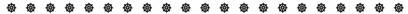
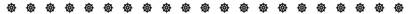
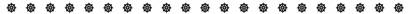
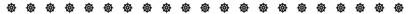

－之一
Bhaddanta Santagavesaka 覓寂尊者 編譯
本電子檔巴利語轉寫使用 Times_CSX+
※※已轉為 Unicode ※※
台灣的南傳佛教，是有待開墾的荒地！鑑於許多有心想修學南傳佛法，但不知從何下手者，身為南傳比丘的我們，則有從事學習與編譯巴利聖典為中文的責任。
這本小冊子，名為「南傳佛教在家居士須知」，個人編譯本書的目的，主要是對想修學純粹的南傳佛教，而不知南傳佛教的受戒、持戒與布施的在家信徒，給他們有一本可以閲讀的入門書。當然，我們以為，本書的內容對南傳比丘也是應知的。
本書的上篇為〈歸依、受戒與持戒〉，本篇分成三章：第一章為「歸依與受戒」，即是受持歸依、五戒、布薩八戒、布薩九戒與在家十戒的受戒程序。第二章為「三歸依的內容」，個人嘗試把《小誦經》和《沙門果經》註釋三歸依的部份翻譯出來與大家分享。第三章為「五戒、八戒與十戒的內容」，個人嘗試把《正見經》和《小誦經》註釋十不善業道、十戒的部份翻譯出來，使大家瞭解南傳佛教解釋五戒、八戒與十戒的方式。第四章為「歸戒釋疑」，本章是針對一般人所不了解和誤解的歸依與在家戒規，把它們用問答的方式，闡明該義。本書的下篇為〈布施修福篇〉，因鑑於南傳比丘很難在台灣依戒律生存，所以這部分是以解釋在家信徒如何依律護持南傳比丘為主。
在此應當特別注意的是：我們只是依照佛陀所制定的戒律來討論，並無意批評那些持戒不嚴謹的人；在家信徒藉由學習出家戒律，一方面可以如法護持僧眾持戒修福；另一方面，當他們有心想要終生致力於出家修習梵行時，則比較容易駕輕就熟，如此對出家僧眾與在家信徒都有利益，並能使正法久住。然而，在家人若在瞭解出家戒律後，用此來衡量並批評其他出家人，不但徒增自己無明，而且有失個人編譯本書的目的。
巴利聖典至今仍然是南傳佛教徒所依循的教典，可惜向來被北傳佛教徒視為小乘而輕視之。巴利聖典不僅有完整的三藏，更有其完整的《註釋書》和各種複註。
目前南傳佛教的中文書雖然有百餘種，但大多是從英文轉譯過來的；而台灣元亨寺所出版的《漢譯南傳大藏經》，其實是從日譯版轉譯過來的。由於日譯版本身並非精譯，又經轉譯，其中語意含糊與翻譯錯誤的地方實在不少，極為可惜！儘管如此，這套《南傳大藏經》的出版，還是有意義的。它使不懂巴利文者，得以初步瞭解巴利藏的大體內容。我們期盼有志硏習巴利聖教者能深入修學，將來把它們一一地翻譯出來，以俾益來學！
個人編譯此書，在考量上，儘量以忠於巴利原意為主，並且以讀者能夠理解的方式來編寫。另一方面，為了方便學者進一步查閲相關原典，大都在註腳附上「出處」。由於巴利與中文在語系上極不相同，以及限於個人才學疏淺，在內容和譯文中不足之處是可想而知的，在此盼請見諒！
這本小冊子的出版，感謝各方助緣，並感謝助印者等，願他們的善業，成為體證涅槃的助緣！
願世尊正法久住世間！
願一切眾生離苦得樂！
Santagavesaka
Bhikkhu覓寂比丘
二○○七年二月 於台灣 高雄
時光匆匆，第一版《南傳佛教在家居士須知》已罄書多時，有些居士認為本書有再版的需要，想再印一些與大家結緣。
本書的再版，再度感謝各方助緣，並感謝助印者等，願他們的善業，成為體證涅槃的助緣！
願一切眾生離苦得樂！
願世尊正法久住世間！
Santagavesaka
Bhikkhu覓寂比丘
二○○九年八月 於台灣 彰化
1. 括弧（）內的字是譯者為了補足語氣，以及幫助讀者瞭解， 依文意加入的。
2. 括弧〔〕內的字可以取代前面的字或文句。
3. 括弧【】內的數字是巴利聖典協會（Pīli Text Society）版 巴利原文的頁碼。
4. 為了方便學者進一步查閲巴利原文，我們儘可能在註腳附 上「出處」。
5. 在我們所引的巴利聖典當中，凡是巴利聖典協會有出版的，我們所引用的冊數和頁碼，即是巴利聖典協會版的；否則，即採用緬甸第六次結集版的冊數和頁碼，請見略語表的「※」標號。
6. 若讀者想從我們所引的冊數和頁碼查閲元亨寺所出版之
《漢譯南傳大藏經》的話，《漢譯南傳大藏經》行首的阿
拉伯數字，即是巴利聖典協會版巴利原文的頁碼。只是巴 利聖典協會版的《律藏（Vinaya Piṭakaṃ）》之冊數順序── I、II、III、IV、V，在《漢譯南傳大藏經》是03、04、01 、02、05。
7. 我們所採用出處的略語，其表示為：A.表示《增支部》， 其餘的請見略語表；羅馬字母
i,ii,iii等表示冊數；p.1,2,3 等表示頁碼；v.1,2,3等表示偈頌的數目。
本電子檔巴利語轉寫使用 Times_CSX+
※※已轉為 Unicode ※※
A.＝Aṅguttara Nikāya 《增支部》
AA.＝Aṅguttara Nikāya Aṭṭhakathā＝Manorathapūraṇī
《增支部註》-《滿足希求》
AṬ.＝Aṅguttaranikāya Ṭīkā 《增支部復註》※
Abhs.＝Abhidhammatthasaṅgaha 《攝阿毘達磨義論》
Ap.＝Apadāna 《聖格言》※
ApA.＝Apadāna Aṭṭhakathā＝Visuddhajanavilāsinī
《聖格言註》-《優美淨人》
Cnid.＝Culla Niddesa 《小義釋》
CnidA.＝Culla Niddesa Aṭṭhakathā＝addhammapajjotikā＝ 《小義釋註》-《正法光明》
D.＝Dīgha Nikāya 《長部》
DA.＝Dīgha Nikāya Aṭṭhakathā＝Sumaṅgalavilāsinī
《長部註》-《善吉祥美》
DṬ1.＝Dīgha Nikāya Ṭīkā 《長部復註》
DṬ2.＝Dīgha Nikāya Abhinavaṭīkā 《長部新復註》※
Dhp.＝Dhammapada 《法句經》
DhpA.＝Dhammapada Aṭṭhakathā 《法句經註》
Dhs.＝Dhammasaṅgaṇī 《法集論》
DhsA.＝Dhammasaṅgaṇī Aṭṭhakathā＝Atthasālinī
《法集論註》-《殊勝義》
Itv.＝Itivuttaka 《如是語》
ItvA.＝Itivuttaka Aṭṭhakathā 《如是語註》
J.＝Jātaka 《本生經》
JA.＝Jātaka Aṭṭhakathā 《本生經註》
Kkvt.＝Kaṅkhāvitaraṇī Aṭṭhakathā 《疑惑度脱》
KkvtṬ1.＝Kaṅkhāvitaraṅī Purāṇaṭīkā《疑惑度脱舊復註》※
KkvtṬ2.＝Kaṅkhāvitaraṅī Abhinavaṭīkā
《疑惑度脱新復註》※
Khp.＝Khuddakapāṭha 《小誦經》
KhpA.＝Khuddakapāṭha Aṭṭhakathā ＝Paramatthadīpanī 《小誦經註》-《闡明勝義》
Khus.＝Khuddasikkhā 《小學》※
M.＝Majjhima Nikāya 《中部》
MA.＝Majjhima Nikāya Aṭṭhakathā＝Papañcasūdanī
《中部註》-《破除迷障》
MṬ＝Majjhima Nikāya Ṭīkā 《中部復註》
Mil.＝Milindapañha 《彌鄰陀王所問（經）》
Mnid.＝Mahā Niddesa 《大義釋》
MnidA.＝Mahā Niddesa Aṭṭhakathā＝ Saddhammapajjotikā《大義釋註》-《正法光明》
Mūs.＝Mūlasikkhā 《根本學》※
PañpA.＝Pañcappkaraṇa Aṭṭhakathā 《五部論註》
Ps.＝Paṭisambhidāmagga 《無礙解道》
Ptn1.＝Paṭṭhāna, Tika Paṭṭhāna 《三法發趣論》
Ptn2.＝Paṭṭhāna, Duka Paṭṭhāna 《二法發趣論》
Pācity.＝Pācityādiyojanā 《心墮落等解》※
S.＝Saṃyutta Nikāya 《相應部》
SA.＝Saṃyutta Nikāya Aṭṭhakathā＝Sāratthappakāsinī
《相應部註》-《顯揚心義》
SṬ.＝Saṃyutta Nikāya Ṭīkā 《相應部復註》※
SārṬ.＝Sāratthadīpanī Ṭīkā 《闡明實義復註》※
SN.＝Sutta Nipāta 《經集》
SNA.＝Sutta Nipāta Aṭṭhakathā＝ Paramatthadīpanī
《經集註》-《闡明勝義》
Thag.＝Theragāthā 《長老偈》
ThagA.＝Theragāthā Aṭṭhakathā＝ Paramatthadīpanī
《長老偈註》-《闡明勝義》
Thig.＝Therīgāthā 《長老尼偈》
ThigA.＝Therīgāthā Aṭṭhakathā＝ Paramatthadīpanī
《長老尼偈註》-《闡明勝義》
Ud.＝Udāna 《自說經》
VajṬ.＝Vajirabuddhi Ṭīkā 《金剛覺復註》※
Vbh.＝Vibhaṅga 《分別論》
VbhA.＝Vibhaṅga Aṭṭhakathā＝Sammohavinodanī
《分別論註》-《除遣癡迷》
VimṬ.＝Vimativinodanī Ṭīkā 《除疑復註》※
Vin.＝Vinaya Piṭaka 《律藏》
VinA.＝Vinaya Piṭaka Aṭṭhakathā ＝Samantapāsādikā
《律藏註》-《普端嚴》
VinsA.＝Vinayasaṅgaha Aṭṭhakathā 《律攝註》※
VinlṬ.＝Vinayālaṅkāra Ṭīkā 《律莊嚴復註》※
Vism.＝Visuddhimagga 《清淨道論》
VismṬ.＝Visuddhimagga Mahāṭīkā＝Paramatthamañjūsā《清淨道論大復註》-《勝義寶箱》※
Vv.＝Vimānavatthu 《天宮事》
Y.＝Yamaka 《雙論》
期勉語
沉溺於享受唱歌、看戲，
以及追求各種欲望的滿足，
表面上似乎很快樂，
可以抒解憂惱與痛苦。
事實上，那如大象陷於泥沼中，
越陷越深！
就如發癢的傷口，
越抓越感染！
佛教徒所追求的喜悦與快樂，
是來自内心的平静；
體證涅槃的出世間樂，
是諸佛所讚歎的！
無論何時何地，
何不嘗試平静内心、依教奉行，
而不是追求感官的滿足。
覓寂比丘
1. 問：請問尊者：我從小就信仰王爺、媽祖，已經幾十年了，現在歸依三寶了，可不可以再拜媽祖呢？
4. 問：在〈三歸依的內容〉所提到的應施者（dakkhiṇeyya）是指什麼呢？
6. 問：不是只要重受三歸依就可以了嗎，為什麼說要重新再求受三歸五戒呢？
7. 問：請問尊者：「構成要素」是不是滿足所有條件才算犯戒呢？
12. 問：可否請尊者詳細解釋離放逸原因的穀酒、花果酒，（和）酒類學處！
15. 問：受了八布薩戒的人，晚上是否可以喝超級市場所賣的蘋果汁和柳丁汁？
16. 問：可否請尊者詳細解釋離觀（聽）跳舞、歌唱、音樂和表演學處！
17. 問：可否請尊者詳細解釋離戴持、塗抹、妝飾原因的花鬘、香、塗香學處！
3. 問：請問尊者：為什麼南傳比丘尊者看起來很嚴肅，也不主動對我們問訊、送行？
4. 問：聽說南傳比丘不接受金錢，也不可開車。有人跟我說，那是佛陀制定的戒律。這是什麼時代了，那樣不是很著相嗎？而且出家人都被戒律綁著，如何弘揚佛法呢？
5. 問：曾聽人說：「小小戒可捨」，什麼是小小戒？真的可以捨嗎？
7. 問：請問尊者：聽說在家人閱讀出家人的《律藏》會構成盜法重罪，終生不得出家，是真的嗎？
8. 問：請問尊者：比丘的不殺生戒和在家五戒的不殺生戒一樣嗎？
11. 問：請問尊者：比丘的不淫欲戒和八布薩學處中的離非梵行學處是不是相同呢？
12. 問：南傳比丘是不是重男輕女呢？總是把我們女眾避得遠遠的！
13. 問：請問尊者：佛陀規定比丘和女人談話要注意或避免談些什麼內容？
14. 問：我父親和母親五年前因故離婚了。我父親年紀越來越長，我母親是您的信徒，請尊者勸勸我母親回去照顧我父親！
15. 問：聽說比丘尊者不可單獨與沒有男子在場的女人同坐，是真的嗎？
17. 問：請問尊者：為什麼我上次邀請比丘尊者和我一起回台北，而那位尊者跟我說：比丘不能與女人相約同行呢？
18. 問：上次我們請比丘尊者搭我們的車子時，為什麼那位尊者對我們說，比丘不能與我的母親一起坐在後座呢？
22. 問：請問尊者：有沒有規定什麼時間是適合供養比丘尊者袈裟的時間？
24. 問：偶爾看到南傳尊者托鉢化緣，我可以把錢放進他的鉢裡供養嗎？
25. 問：請問尊者：南傳尊者為什麼出外托鉢乞食，寺院裡面不是有很多食物可以吃嗎？
26. 問：請問尊者：聽說比丘不可以貯存食物，這是什麼意思？
27. 問：請問尊者：我上次供養一位比丘尊者一包即溶五穀粉，為什麼那位尊者說：比丘不能自煮呢？
29. 問：請問尊者：假如遇到比丘尊者托鉢乞食時，我們可以布施哪些食物？
30. 問：請問尊者：我們在供養托鉢乞食的尊者時，須要注意些什麼呢？
31. 問：上面尊者提到須要為比丘作淨，請問尊者：如何幫比丘的水果作淨？
33. 問：請問尊者：南傳佛教有沒有哪些定期供僧飲食的作法？
34. 問：請問尊者：供養南傳比丘尊者食物，是不是要注意供養的時間？
35. 問：我們想要邀請幾位比丘尊者到我家供齋，請問有什麼特別需要注意的嗎？
36. 問：聽說比丘不可以吃蒜，但怎麼又有人說曾看過比丘尊者吃蒜，請問這是怎麼回事呢？
37. 問：聽說比丘尊者過了正午就沒有進食了，下午和晚上我們可以供養什麼食品給尊者們止飢、止渴呢？
38. 問：請問尊者：聽說有非時漿、七日藥，那些是指什麼呢？
39. 問：請問尊者：當果汁加入糖，或成藥加入糖衣，那要怎麼算呢？
40. 問：那麼很多中成藥丸是加入蜂蜜的，那不就不能放超過七天嗎？
42. 問：我們想請南傳尊者在我們台中住錫，請問哪些建築是南傳比丘允許居住的？
44. 問：我們希望南傳僧團在台中成立，我們應當做些什麼準備呢？
45. 問：請問尊者：南傳比丘可以使用家具嗎？當我們要供養比丘尊者床椅等家具時，應該注意些什麼呢？
46. 問：現在已經是二十一世紀了，比丘不拿錢不會阻礙佛法的弘揚嗎？
47. 問：南傳比丘不能接受、使用金錢，那麼你們的生活所需是怎麼來的？出門怎麼辦？
48. 問：請問尊者：南傳比丘不可以接受、使用金錢，是不是意味著比丘也不可以買東西呢？
49. 問：請問尊者：我想供養幾位比丘尊者生活用品，然而我不知道他們需要些什麼，我可以怎麼做呢？
50. 問：比丘的金錢戒，似乎很複雜，是否可以請尊者講得詳細一點！
51. 問：請問尊者：比丘不可以為自己接受金錢，是不是也不能為僧團接受或支配金錢？
53. 問：請問尊者：還有什麼物品是不適合供養給比丘尊者的？
54. 問：請問尊者：比丘不可以接受那麼多物品，那麼有哪些物品是比丘尊者們可以接受的呢？
56. 問：台灣冬天這麼冷，為什麼比丘尊者還是赤腳走在馬路上，是不是沒有鞋子可以穿？我可以供養他一雙皮鞋嗎？
57. 問：請問尊者：當我們請比丘尊者說法或開示時，有什麼須要注意的嗎？
59. 問：當淨人住在寺院裡為比丘們服務，假如他們沒有在外面工作而無經濟來源時，交通、辦事等樣樣都要錢，他們應該怎麼辦？
60. 問：聽說比丘尊者有很多戒規，是否可以請尊者跟我們大致解釋一些內容！
61. 問：請問尊者：上次我問一位尊者，他有沒有證得第幾禪，是不是聖者，為什麼他都不回答呢？
62. 問：請問尊者：比丘尊者可以為我們在家人開藥方或治病嗎？
63. 問：請問尊者：上面尊者所提到的「為在家人走使傳訊」是指什麼？
66. 問：請問尊者：我們所修的功德假如回向給先亡，先亡能獲得利益嗎？
68. 問：請問尊者：南傳佛教有沒有把所修的功德廻向給已去世的親人的做法？
本電子檔巴利語轉寫使用 Times_CSX+
※※已轉為 Unicode ※※
⊙求受三歸五戒
Ahaṃ, bhante, tisaraṇena saha pañcasīlaṃ dhammaṃ
yācāmi, anuggahaṃ katvā sīlaṃ detha me, bhante.
（阿寒 班爹 梯沙拉內那 沙哈 潘恰希郎 當芒 呀恰咪 阿怒尬航 喀駝哇 希郎 爹踏 梅 班爹）
尊者，我乞求三歸和五戒法。尊者，在攝受後請把戒授給我！
Dutiyampi, ahaṃ, bhante, tisaraṇena saha
pañcasīlaṃ dhammaṃ yācāmi, anuggahaṃ katvā sīlaṃ detha me, bhante.
（督地央畢 阿寒 班爹 梯沙拉內那 沙哈 潘恰希郎 當芒 呀恰咪 阿怒尬航 喀駝哇 希郎 爹踏 梅 班爹）
尊者，我第二次乞求三歸和五戒法。尊者，在攝受後請把戒授給我！
Tatiyampi, ahaṃ, bhante, tisaraṇena saha
pañcasīlaṃ dhammaṃ yācāmi, anuggahaṃ katvā sīlaṃ detha me, bhante.
（搭地央畢 阿寒 班爹 梯沙拉內那 沙哈 潘恰希郎 當芒 呀恰咪 阿怒尬航 喀駝哇 希郎 爹踏 梅 班爹）
尊者，我第三次乞求三歸和五戒法。尊者，在攝受後請把戒授給我！
比丘[1]：Yamahaṃ vadāmi taṃ vadehi
(vadetha).
我念什麼你（們）也跟著念。
受戒者：Āma, bhante.
（阿罵 班爹）
是的，尊者。
⊙如果受戒者超過一位，則比丘的引導詞由斜體字的單數改為複數：
vadehi（你說） vadetha（你們說）
三歸依
⊙比丘念：Namo tassa，受戒者就直接念完三歸文；或比丘念一句，受戒者跟著念一句。
比 丘：Namo tassa Bhagavato,
Arahato Sammāsambuddhassa. (3x)
（那眸 踏剎 跋嘎瓦多 阿拉哈多 三媽三菩達剎）
禮敬彼世尊、阿羅漢、正自覺者。（三遍）
受戒者：Namo tassa Bhagavato, Arahato Sammāsambuddhassa. (3x)
（那眸 踏剎 跋嘎瓦多 阿拉哈多 三媽三菩達剎）
禮敬彼世尊、阿羅漢、正自覺者。（三遍）
⊙比丘念：Buddhaṃ saraṇaṃ
gacchāmi，受戒者就直接念完三歸文；或比丘念一句，受戒者跟著念一句。
Buddhaṃ saraṇaṃ gacchāmi.
（菩當 沙拉朗 嘎恰咪）
我皈依佛。
Dhammaṃ saraṇaṃ gacchāmi.
（當芒 沙拉朗 嘎恰咪）
我皈依法。
Saṅghaṃ saraṇaṃ gacchāmi.
（桑港 沙拉朗 嘎恰咪）
我皈依僧。
Dutiyampi, Buddhaṃ saraṇaṃ gacchāmi.
（督地央畢 菩當 沙拉朗 嘎恰咪）
第二次我皈依佛。
Dutiyampi, Dhammaṃ saraṇaṃ gacchāmi.
（督地央畢 當芒 沙拉朗 嘎恰咪）
第二次我皈依法。
Dutiyampi, Saṅghaṃ saraṇaṃ
gacchāmi.
（督地央畢 桑港 沙拉朗 嘎恰咪）
第二次我皈依僧。
Tatiyampi, Buddhaṃ saraṇaṃ gacchāmi.
（搭地央畢 菩當 沙拉朗 嘎恰咪）
第三次我皈依佛。
Tatiyampi, Dhammaṃ saraṇaṃ gacchāmi.
（搭地央畢 當芒 沙拉朗 嘎恰咪）
第三次我皈依法。
Tatiyampi, Saṅghaṃ saraṇaṃ gacchāmi.
（搭地央畢 桑港 沙拉朗 嘎恰咪）
第三次我皈依僧。
比 丘：Tisaraṇagamanaṃ paripuṇṇaṃ.
三歸依已經圓滿。
受戒者：Āma, bhante.
（阿罵 班爹）
是的，尊者。
五戒
⊙比丘每念一條戒（或一句），受戒者跟著念：
1. Pāṇātipātā veramaṇī-sikkhāpadaṃ samādiyāmi.
（巴那梯怕它 威拉麻尼 希喀巴當 沙麻低牙米）
我受持離殺生學處。
2. Adinnādānā veramaṇī-sikkhāpadaṃ samādiyāmi.
（阿釘那搭那 威拉麻尼 希喀巴當 沙麻低牙米）
我受持離不與取學處。
3. Kāmesu micchācārā veramaṇī-sikkhāpadaṃ
samādiyāmi.
（咖梅蘇 蜜恰洽拉 威拉麻尼 希喀巴當 沙麻低牙米）
我受持離欲邪行學處。
4. Musāvādā veramaṇī-sikkhāpadaṃ samādiyāmi.
（木沙哇搭 威拉麻尼 希喀巴當 沙麻低牙米）
我受持離虛誑語學處。
5. Surā-meraya-majja-pamādaṭṭhānā veramaṇī-sikkhāpadaṃ
samādiyāmi.
（蘇拉 梅拉呀 嗎架 巴嗎達他那 威拉麻尼 希喀巴當 沙麻低牙米）
我受持離（飲）放逸原因的穀酒、花果酒（和）酒類學處。
比 丘：Tisaraṇena saha pañcasīlaṃ
dhammaṃ sādhukaṃ katvā appamādena sampādetha.
在完全地（受了）三歸和五戒法後，當不放逸地努力（成就）。
受戒者：Āma, bhante.
（阿罵 班爹）
是的，尊者。
⊙發願與回向
Idaṃ me puññaṃ āsavakkhayāvaham hotu.
（依當 梅 噴娘 阿沙哇喀呀 哇航 喉督）
願我這功德，導至諸漏盡。
Idaṃ me sīlaṃ nibbānassa paccayo hotu.
（依當 梅 希郎 泥吧那剎 帕恰優 喉督）
願我持此戒，成為涅槃緣。
Mama puññabhāgaṃ sabbasattānaṃ bhājemi.
（嗎媽 噴娘吧軋 沙巴沙他囔 吧接咪）
我的功德分，分享諸有情。
Te sabbe me samaṃ puññabhāgaṃ labhantu.
（貼 沙杯 梅 沙芒 噴娘吧軋 剌邦督）
願他們一切，同得功德分。
Sādhu！ Sādhu！ Sādhu！
（沙杜） （沙杜） （沙杜）
善哉！ 善哉！ 善哉！

(Aṭṭhaṅga-uposathasīla)
⊙求受歸依布薩八戒
Ahaṃ, bhante, tisaraṇena saha aṭṭhaṅga
samannāgataṃ uposathasīlaṃ dhammaṃ yācāmi, anuggahaṃ katvā sīlaṃ detha me,
bhante.
（阿寒 班爹 梯沙拉內那 沙哈 阿湯嘎 沙滿那嘎堂 烏波沙沓希郎 當芒 呀恰咪 阿怒尬航 喀駝哇 希郎 爹踏 梅 班爹）
尊者，我乞求三歸和具有八支的布薩戒法。尊者，在攝受後請把戒授給我！
Dutiyampi, ahaṃ, bhante, tisaraṇena saha aṭṭhaṅga
samannāgataṃ uposathasīlaṃ dhammaṃ yācāmi, anuggahaṃ katvā sīlaṃ detha me,
bhante.
（督地央畢 阿寒 班爹 梯沙拉內那 沙哈 阿湯嘎 沙滿那嘎堂 烏波沙沓希郎 當芒 呀恰咪 阿怒尬航 喀駝哇 希郎 爹踏 梅 班爹）
尊者，我第二次乞求三歸和具有八支的布薩戒法。尊者，在攝受後請把戒授給我！
Tatiyampi, ahaṃ, bhante,
tisaraṇena saha aṭṭhaṅga samannāgataṃ uposathasīlaṃ dhammaṃ yācāmi, anuggahaṃ katvā sīlaṃ detha me,
bhante.
（搭地央畢 阿寒 班爹 梯沙拉內那 沙哈 阿湯嘎 沙滿那嘎堂 烏波沙沓希郎 當芒 呀恰咪 阿怒尬航 喀駝哇 希郎 爹踏 梅 班爹）
尊者，我第三次乞求三歸和具有八支的布薩戒法。尊者，在攝受後請把戒授給我！
比 丘：Yamahaṃ vadāmi taṃ vadehi (vadetha).
我念什麼你（們）也跟著念。
受戒者：Āma, bhante.
（阿罵 班爹）
是的，尊者。
⊙如果受戒者超過一位，則比丘的引導詞由斜體字的單數改為複數：
vadehi（你說） vadetha（你們說）
三歸依
⊙比丘念：Namo tassa，受戒者就直接念完三歸文；或比丘念一句，受戒者跟著念一句。
比 丘：Namo tassa Bhagavato,
Arahato Sammāsambuddhassa. (3x)
（那眸 踏剎 跋嘎瓦多 阿拉哈多 三媽三菩達剎）
禮敬彼世尊、阿羅漢、正自覺者。（三遍）
受戒者：Namo tassa Bhagavato, Arahato Sammāsambuddhassa. (3x)
（那眸 踏剎 跋嘎瓦多 阿拉哈多 三媽三菩達剎）
禮敬彼世尊、阿羅漢、正自覺者。（三遍）
⊙比丘念：Buddhaṃ saraṇaṃ gacchāmi，受戒者就直接念完三歸文；或比丘念一句，受戒者跟著念一句。
Buddhaṃ saraṇaṃ gacchāmi.
（菩當 沙拉朗 嘎恰咪）
我皈依佛。
Dhammaṃ saraṇaṃ gacchāmi.
（當芒 沙拉朗 嘎恰咪）
我皈依法。
Saṅghaṃ saraṇaṃ gacchāmi.
（桑港 沙拉朗 嘎恰咪）
我皈依僧。
Dutiyampi, Buddhaṃ saraṇaṃ gacchāmi.
（督地央畢 菩當 沙拉朗 嘎恰咪）
第二次我皈依佛。
Dutiyampi, Dhammaṃ saraṇaṃ gacchāmi.
（督地央畢 當芒 沙拉朗 嘎恰咪）
第二次我皈依法。
Dutiyampi, Saṅghaṃ saraṇaṃ gacchāmi.
（督地央畢 桑港 沙拉朗 嘎恰咪）
第二次我皈依僧。
Tatiyampi, Buddhaṃ saraṇaṃ gacchāmi.
（搭地央畢 菩當 沙拉朗 嘎恰咪）
第三次我皈依佛。
Tatiyampi, Dhammaṃ saraṇaṃ gacchāmi.
（搭地央畢 當芒 沙拉朗 嘎恰咪）
第三次我皈依法。
Tatiyampi, Saṅghaṃ saraṇaṃ gacchāmi.
（搭地央畢 桑港 沙拉朗 嘎恰咪）
第三次我皈依僧。
比 丘：Tisaraṇagamanaṃ paripuṇṇaṃ.
三歸依已經圓滿。
受戒者：Āma, bhante.
（阿罵 班爹）
是的，尊者。
八戒
⊙比丘每念一條戒（或一句），受戒者跟著念：
1. Pāṇātipātā veramaṇī-sikkhāpadaṃ samādiyāmi.
（巴那梯怕它 威拉麻尼 希喀巴當 沙麻低牙米）
我受持離殺生學處。
2. Adinnādānā veramaṇī-sikkhāpadaṃ samādiyāmi.
（阿釘那搭那 威拉麻尼 希喀巴當 沙麻低牙米）
我受持離不與取學處。
3. Abrahmacariyā veramaṇī-sikkhāpadaṃ samādiyāmi.
（阿不拉麻恰利呀 威拉麻尼 希喀巴當 沙麻低牙米）
我受持離非梵行學處。
4. Musāvādā veramaṇī-sikkhāpadaṃ samādiyāmi.
（木沙哇搭 威拉麻尼 希喀巴當 沙麻低牙米）
我受持離虛誑語學處。
5. Surā-meraya-majja-pamādaṭṭhānā veramaṇī-sikkhāpadaṃ
samādiyāmi.
（蘇拉 梅拉呀 嗎架 巴嗎達他那 威拉麻尼 希喀巴當 沙麻低牙米）
我受持離（飲）放逸原因的穀酒、花果酒（和）酒類學處。
6. Vikālabhojanā veramaṇī-sikkhāpadaṃ samādiyāmi.
（威咖拉播佳哪 威拉麻尼 希喀巴當 沙麻低牙米）
我受持離非時食學處。
7.
Nacca-gīta-vādita-visūkadassanā mālā-gandha-vilepana-dhāraṇamaṇḍana-vibhūsanaṭṭhānā
veramaṇī-sikkhāpadaṃ
samādiyāmi.
（那恰 給它 哇迪塔 威蘇嘎搭沙那 嗎拉 甘達 威類帕那 達拉哪瞞搭那 威布沙納塔那 威拉麻尼 希喀巴當 沙麻低牙米）
我受持離觀（聽）跳舞、歌唱、音樂、表演，（以及）戴持、塗抹、妝飾原因的花鬘、香、塗香學處。
8. Uccāsayana-mahāsayanā veramaṇī-sikkhāpadaṃ samādiyāmi.
（烏恰沙呀那 嗎哈沙呀那 威拉麻尼 希喀巴當 沙麻低牙米）
我受持離（坐臥）高、大坐臥具學處。
比 丘：Tisaraṇena
saha aṭṭhaṅga samannāgataṃ uposathasīlaṃ dhammaṃ sādhukaṃ katvā appamādena sampādetha.
在完全地（受了）三歸和具有八支的布薩戒法後，當不放逸地努力（成就）。
受戒者：Āma, bhante.
（阿罵 班爹）
是的，尊者。
⊙發願與回向
Idaṃ me puññaṃ āsavakkhayāvaham hotu.
（依當 梅 噴娘 阿沙哇喀呀 哇航 喉督）
願我這功德，導至諸漏盡。
Idaṃ me sīlaṃ nibbānassa paccayo hotu.
（依當 梅 希郎 泥吧那剎 帕恰優 喉督）
願我持此戒，成為涅槃緣。
Mama puññabhāgaṃ sabbasattānaṃ bhājemi.
（嗎媽 噴娘吧軋 沙巴沙他囔 吧接咪）
我的功德分，分享諸有情。
Te sabbe me samaṃ puññabhāgaṃ labhantu.
（貼 沙杯 梅 沙芒 噴娘吧軋 剌邦督）
願他們一切，同得功德分。
Sādhu！ Sādhu！ Sādhu！
（沙杜） （沙杜） （沙杜）
善哉！ 善哉！ 善哉！

Atha kho
bhagavā bhikkhū āmantesi- handa dāni, bhikkhave, āmantayāmi vo, vayadhammā saṅkhārā
appamādena sampādethāti.
Ayaṃ tathāgatassa pacchimā vācā.
當時，世尊告訴諸比丘：「諸比丘，我現在告訴你們：諸行是滅法，當不放逸地努力！」這是如來最後的話。
（D.ii,p.156.）《長部‧大般涅槃經》
(Navaṅga-uposathasīla)
⊙求受歸依布薩九戒
Ahaṃ,
bhante, tisaraṇena saha navaṅga samannāgataṃ uposathasīlaṃ dhammaṃ yācāmi,
anuggahaṃ katvā sīlaṃ detha me, bhante.
（阿寒 班爹 梯沙拉內那 沙哈 哪汪嘎 沙滿那嘎堂 烏波沙沓希郎 當芒 呀恰咪 阿怒尬航 喀駝哇 希郎 爹踏 梅 班爹）
尊者，我乞求三歸和具有九支的布薩戒法。尊者，在攝受後請把戒授給我！
Dutiyampi, ahaṃ, bhante, tisaraṇena saha navaṅga
samannāgataṃ uposathasīlaṃ dhammaṃ yācāmi, anuggahaṃ katvā sīlaṃ detha me,
bhante.
（督地央畢 阿寒 班爹 梯沙拉內那 沙哈 哪汪嘎 沙滿那嘎堂 烏波沙沓希郎 當芒 呀恰咪 阿怒尬航 喀駝哇 希郎 爹踏 梅 班爹）
尊者，我第二次乞求三歸和具有九支的布薩戒法。尊者，在攝受後請把戒授給我！
Tatiyampi, ahaṃ, bhante,
tisaraṇena saha navaṅga samannāgataṃ uposathasīlaṃ dhammaṃ yācāmi, anuggahaṃ
katvā sīlaṃ detha me, bhante.
（搭地央畢 阿寒 班爹 梯沙拉內那 沙哈 哪汪嘎 沙滿那嘎堂 烏波沙沓希郎 當芒 呀恰咪 阿怒尬航 喀駝哇 希郎 爹踏 梅 班爹）
尊者，我第三次乞求三歸和具有九支的布薩戒法。尊者，在攝受後請把戒授給我！
比
丘：Yamahaṃ
vadāmi taṃ vadehi (vadetha).
我念什麼你（們）也跟著念。
受戒者：Āma, bhante.
（阿罵 班爹）
是的，尊者。
⊙如果受戒者超過一位，則比丘的引導詞由斜體字的單數改為複數：
vadehi（你說） vadetha（你們說）
三歸依
⊙比丘念：Namo tassa，受戒者就直接念完三歸文；或比丘念一句，受戒者跟著念一句。
比 丘：Namo tassa Bhagavato,
Arahato Sammāsambuddhassa. (3x)
（那眸 踏剎 跋嘎瓦多 阿拉哈多 三媽三菩達剎）
禮敬彼世尊、阿羅漢、正自覺者。（三遍）
受戒者：Namo tassa Bhagavato, Arahato Sammāsambuddhassa. (3x)
（那眸 踏剎 跋嘎瓦多 阿拉哈多 三媽三菩達剎）
禮敬彼世尊、阿羅漢、正自覺者。（三遍）
⊙比丘念：Buddhaṃ saraṇaṃ
gacchāmi，受戒者就直接念完三歸文；或比丘念一句，受戒者跟著念一句。
Buddhaṃ saraṇaṃ gacchāmi.
（菩當 沙拉朗 嘎恰咪）
我皈依佛。
Dhammaṃ saraṇaṃ gacchāmi.
（當芒 沙拉朗 嘎恰咪）
我皈依法。
Saṅghaṃ saraṇaṃ gacchāmi.
（桑港 沙拉朗 嘎恰咪）
我皈依僧。
Dutiyampi, Buddhaṃ saraṇaṃ gacchāmi.
（督地央畢 菩當 沙拉朗 嘎恰咪）
第二次我皈依佛。
Dutiyampi, Dhammaṃ saraṇaṃ gacchāmi.
（督地央畢 當芒 沙拉朗 嘎恰咪）
第二次我皈依法。
Dutiyampi, Saṅghaṃ saraṇaṃ gacchāmi.
（督地央畢 桑港 沙拉朗 嘎恰咪）
第二次我皈依僧。
Tatiyampi, Buddhaṃ saraṇaṃ gacchāmi.
（搭地央畢 菩當 沙拉朗 嘎恰咪）
第三次我皈依佛。
Tatiyampi, Dhammaṃ saraṇaṃ gacchāmi.
（搭地央畢 當芒 沙拉朗 嘎恰咪）
第三次我皈依法。
Tatiyampi, Saṅghaṃ saraṇaṃ gacchāmi.
（搭地央畢 桑港 沙拉朗 嘎恰咪）
第三次我皈依僧。
比 丘：Tisaraṇagamanaṃ paripuṇṇaṃ.
三歸依已經圓滿。
受戒者：Āma, bhante.
（阿罵 班爹）
是的，尊者。
九戒
⊙比丘每念一條戒（或一句），受戒者跟著念：
1. Pāṇātipātā veramaṇī-sikkhāpadaṃ samādiyāmi.
（巴那梯怕它 威拉麻尼 希喀巴當 沙麻低牙米）
我受持離殺生學處。
2. Adinnādānā veramaṇī-sikkhāpadaṃ samādiyāmi.
（阿釘那搭那 威拉麻尼 希喀巴當 沙麻低牙米）
我受持離不與取學處。
3. Abrahmacariyā veramaṇī-sikkhāpadaṃ samādiyāmi.
（阿不拉麻恰利呀 威拉麻尼 希喀巴當 沙麻低牙米）
我受持離非梵行學處。
4. Musāvādā veramaṇī-sikkhāpadaṃ
samādiyāmi.
（木沙哇搭 威拉麻尼 希喀巴當 沙麻低牙米）
我受持離虛誑語學處。
5. Surā-meraya-majja-pamādaṭṭhānā
veramaṇī-sikkhāpadaṃ samādiyāmi.
（蘇拉 梅拉呀 嗎架 巴嗎達他那 威拉麻尼 希喀巴當 沙麻低牙米）
我受持離（飲）放逸原因的穀酒、花果酒（和）酒類學處。
6. Vikālabhojanā veramaṇī-sikkhāpadaṃ
samādiyāmi.
（威咖拉播佳哪 威拉麻尼 希喀巴當 沙麻低牙米）
我受持離非時食學處。
7.
Nacca-gīta-vādita-visūkadassanā mālā-gandha-vilepana-dhāraṇamaṇḍana-vibhūsanaṭṭhānā
veramaṇī-sikkhāpadaṃ
samādiyāmi.
（那恰 給它 哇迪塔 威蘇嘎搭沙那 嗎拉 甘達 威類帕那 達拉哪瞞搭那 威布沙納塔那 威拉麻尼 希喀巴當 沙麻低牙米）
我受持離觀（聽）跳舞、歌唱、音樂、表演，（以及）戴持、塗抹、妝飾原因的花鬘、香、塗香學處。
8.
Uccāsayana-mahāsayanā veramaṇī-sikkhāpadaṃ samādiyāmi.
（烏恰沙呀那 嗎哈沙呀那 威拉麻尼 希喀巴當 沙麻低牙米）
我受持離（坐臥）高、大坐臥具學處。
9. Mettāsahagatena cetasā
sabbapāṇabhūtesu pharitvā viharaṇaṃ samādiyāmi.
（昧達沙哈嘎貼那 皆達沙 沙巴巴拿晡貼淑 帕利駝哇 威哈拉南 沙麻低牙米）
我受持以慈俱心遍滿一切眾生而住。
比 丘：Tisaraṇena saha navaṅga
samannāgataṃ uposathasīlaṃ dhammaṃ sādhukaṃ
katvā appamādena sampādetha.
在完全地（受了）三歸和具有九支的布薩戒法後，當不放逸地努力（成就）。
受戒者：Āma, bhante.
（阿罵 班爹）
是的，尊者。
⊙發願與回向
Idaṃ me puññaṃ āsavakkhayāvaham hotu.
（依當 梅 噴娘 阿沙哇喀呀 哇航 喉督）
願我這功德，導至諸漏盡。
Idaṃ me sīlaṃ nibbānassa paccayo hotu.
（依當 梅 希郎 泥吧那剎 帕恰優 喉督）
願我持此戒，成為涅槃緣。
Mama puññabhāgaṃ sabbasattānaṃ bhājemi.
（嗎媽 噴娘吧軋 沙巴沙他囔 吧接咪）
我的功德分，分享諸有情。
Te sabbe me samaṃ puññabhāgaṃ labhantu.
（貼 沙杯 梅 沙芒 噴娘吧軋 剌邦督）
願他們一切，同得功德分。
Sādhu！ Sādhu！ Sādhu！
（沙杜） （沙杜） （沙杜）
善哉！ 善哉！ 善哉！

(Gahaṭṭha-dasasīla)
⊙求受歸依居家十戒
Ahaṃ, bhante, tisaraṇena
saddhiṃ gahaṭṭha-dasasīlaṃ dhammaṃ yācāmi, anuggahaṃ katvā sīlaṃ detha me,
bhante.
（阿寒 班爹 梯沙拉內那 剎釘 嘎哈達 大沙希郎 當芒 呀恰咪 阿怒尬航 喀駝哇 希郎 爹踏 梅 班爹）
尊者，我乞求三歸和在家十戒法。尊者，在攝受後請把戒授給我！
Dutiyampi, ahaṃ, bhante, tisaraṇena saddhiṃ
gahaṭṭha-dasasīlaṃ dhammaṃ yācāmi, anuggahaṃ katvā sīlaṃ detha me, bhante.
（督地央畢 阿寒 班爹 梯沙拉內那 剎釘 嘎哈達 大沙希郎 當芒 呀恰咪 阿怒尬航 喀駝哇 希郎 爹踏 梅 班爹）
尊者，我第二次乞求三歸和在家十戒法。尊者，在攝受後請把戒授給我！
Tatiyampi, ahaṃ, bhante, tisaraṇena saddhiṃ
gahaṭṭha-dasasīlaṃ dhammaṃ yācāmi, anuggahaṃ katvā sīlaṃ detha me, bhante.
（搭地央畢 阿寒 班爹 梯沙拉內那 剎釘 嘎哈達 大沙希郎 當芒 呀恰咪 阿怒尬航 喀駝哇 希郎 爹踏 梅 班爹）
尊者，我第三次乞求三歸和在家十戒法。尊者，在攝受後請把戒授給我！
比 丘：Yamahaṃ vadāmi taṃ vadehi (vadetha).
我念什麼你（們）也跟著念。
受戒者：Āma, bhante.
（阿罵 班爹）
是的，尊者。
⊙如果受戒者超過一位，則比丘的引導詞由斜體字的單數改為複數：
vadehi（你說） vadetha（你們說）
三歸依
⊙比丘念：Namo tassa，受戒者就直接念完三歸文；或比丘念一句，受戒者跟著念一句。
比 丘：Namo tassa Bhagavato,
Arahato Sammāsambuddhassa. (3x)
（那眸 踏剎 跋嘎瓦多 阿拉哈多 三媽三菩達剎）
禮敬彼世尊、阿羅漢、正自覺者。（三遍）
受戒者：Namo tassa Bhagavato, Arahato Sammāsambuddhassa. (3x)
（那眸 踏剎 跋嘎瓦多 阿拉哈多 三媽三菩達剎）
禮敬彼世尊、阿羅漢、正自覺者。（三遍）
⊙比丘念：Buddhaṃ saraṇaṃ
gacchāmi，受戒者就直接念完三歸文；或比丘念一句，受戒者跟著念一句。
Buddhaṃ saraṇaṃ gacchāmi.
（菩當 沙拉朗 嘎恰咪）
我皈依佛。
Dhammaṃ saraṇaṃ gacchāmi.
（當芒 沙拉朗 嘎恰咪）
我皈依法。
Saṅghaṃ saraṇaṃ gacchāmi.
（桑港 沙拉朗 嘎恰咪）
我皈依僧。
Dutiyampi, Buddhaṃ saraṇaṃ gacchāmi.
（督地央畢 菩當 沙拉朗 嘎恰咪）
第二次我皈依佛。
Dutiyampi, Dhammaṃ saraṇaṃ gacchāmi.
（督地央畢 當芒 沙拉朗 嘎恰咪）
第二次我皈依法。
Dutiyampi, Saṅghaṃ saraṇaṃ gacchāmi.
（督地央畢 桑港 沙拉朗 嘎恰咪）
第二次我皈依僧。
Tatiyampi, Buddhaṃ saraṇaṃ gacchāmi.
（搭地央畢 菩當 沙拉朗 嘎恰咪）
第三次我皈依佛。
Tatiyampi, Dhammaṃ saraṇaṃ gacchāmi.
（搭地央畢 當芒 沙拉朗 嘎恰咪）
第三次我皈依法。
Tatiyampi, Saṅghaṃ saraṇaṃ gacchāmi.
（搭地央畢 桑港 沙拉朗 嘎恰咪）
第三次我皈依僧。
比 丘：Tisaraṇagamanaṃ paripuṇṇaṃ.
三歸依已經圓滿。
受戒者：Āma, bhante.
（阿罵 班爹）
是的，尊者。
十戒
⊙比丘每念一條戒（或一句），受戒者跟著念：
1. Pāṇātipātā veramaṇī-sikkhāpadaṃ samādiyāmi.
（巴那梯怕它 威拉麻尼 希喀巴當 沙麻低牙米）
我受持離殺生學處。
2. Adinnādānā veramaṇī-sikkhāpadaṃ
samādiyāmi.
（阿釘那搭那 威拉麻尼 希喀巴當 沙麻低牙米）
我受持離不與取學處。
3. Abrahmacariyā veramaṇī-sikkhāpadaṃ samādiyāmi.
（阿不拉麻恰利呀 威拉麻尼 希喀巴當 沙麻低牙米）
我受持離非梵行學處。
4. Musāvādā veramaṇī-sikkhāpadaṃ
samādiyāmi.
（木沙哇搭 威拉麻尼 希喀巴當 沙麻低牙米）
我受持離虛誑語學處。
5. Surā-meraya-majja-pamādaṭṭhānā
veramaṇī-sikkhāpadaṃ samādiyāmi.
（蘇拉 梅拉呀 嗎架 巴嗎達他那 威拉麻尼 希喀巴當 沙麻低牙米）
我受持離（飲）放逸原因的穀酒、花果酒（和）酒類學處。
6. Vikālabhojanā veramaṇī-sikkhāpadaṃ
samādiyāmi.
（威咖拉播佳哪 威拉麻尼 希喀巴當 沙麻低牙米）
我受持離非時食學處。
7. Nacca-gīta-vādita-visūkadassanā
veramaṇī-sikkhāpadaṃ samādiyāmi.
（那恰 給它 哇迪塔 威蘇嘎搭沙那 威拉麻尼 希喀巴當 沙麻低牙米）
我受持離觀（聽）跳舞、歌唱、音樂、表演學處。
8.
Mālā-gandha-vilepana-dhāraṇamaṇḍana-vibhūsanaṭṭhānā veramaṇī-sikkhāpadaṃ
samādiyāmi.
（嗎拉 甘達 威類帕那 達拉哪瞞搭那 威布沙納塔那 威拉麻尼 希喀巴當 沙麻低牙米）
我受持離戴持、塗抹、妝飾原因的花鬘、香、塗香學處。
9. Uccāsayana-mahāsayanā
veramaṇī-sikkhāpadaṃ samādiyāmi.
（烏恰沙呀那 嗎哈沙呀那 威拉麻尼 希喀巴當 沙麻低牙米）
我受持離（坐臥）高、大坐臥具學處。
10. Jātarūpa-rajata-paṭiggahaṇā
veramaṇī-sikkhāpadaṃ samādiyāmi.
（佳沓如帕 拉加沓 帕替嘎哈那 威拉麻尼 希喀巴當 沙麻低牙米）
我受持離接受金銀（錢）學處。
比 丘：Tisaraṇena saddhiṃ gahaṭṭha-dasasīlaṃ
dhammaṃ sādhukaṃ surakkhitaṃ katvā appamādena sampādetha.
在完全地（受了）三歸和居家十戒法後，當善守護，以不放逸地努力（成就）。
受戒者：Āma, bhante.
（ 阿罵 班爹）
是的，尊者。
⊙發願與回向
Idaṃ me puññaṃ āsavakkhayāvaham hotu.
（依當 梅 噴娘 阿沙哇喀呀 哇航 喉督）
願我這功德，導至諸漏盡。
Idaṃ me sīlaṃ nibbānassa paccayo hotu.
（依當 梅 希郎 泥吧那剎 帕恰優 喉督）
願我持此戒，成為涅槃緣。
Mama puññabhāgaṃ sabbasattānaṃ bhājemi.
（嗎媽 噴娘吧軋 沙巴沙他囔 吧接咪）
我的功德分，分享諸有情。
Te sabbe me samaṃ puññabhāgaṃ labhantu.
（貼 沙杯 梅 沙芒 噴娘吧軋 剌邦督）
願他們一切，同得功德分。
Sādhu！ Sādhu！ Sādhu！
（沙杜） （沙杜） （沙杜）
善哉！ 善哉！ 善哉！
Sabbapāpassa akaraṇaṃ, kusalassa upasampadā.
Sacittapariyodapanaṃ, etaṃ buddhāna
sāsanaṃ.
一切惡莫作，具足於諸善，
清浄其自心，此是諸佛教。
Khantī paramaṃ tapo titikkhā, nibbānaṃ
paramaṃ
vadanti buddhā.
Na hi pabbajito parūpaghātī, na samaṇo
hoti paraṃ
viheṭhayanto.
忍辱為最高自制，諸佛說涅槃最上；
害他實非出家者，惱他者不是沙門。
Anūpavādo anūpaghāto, pātimokkhe ca saṃvaro;
Mattaññutā ca bhattasmiṃ, pantañca
sayanāsanaṃ.
Adhicitte ca āyogo, etaṃ buddhāna
sāsanaṃ.
不誹謗與不害，守護巴帝摩卡，
於飲食知節量；獨居邊遠住處，
及勤修增上心，此是諸佛之教。
《Dhammapada》183~185 《法句經》183~185
Namo tassa Bhagavato Arahato
Sammāsambuddhassa.
禮敬世尊、阿羅漢、正自覺者
Paramatthajotikā
1
《闡明勝義》1[3]
【11】「我歸依佛，我歸依法，我歸依僧（Buddhaṃ saraṇaṃ gacchāmi, Dhammaṃ saraṇaṃ gacchāmi, Saṅghaṃ saraṇaṃ gacchāmi.）」，這歸依的開示乃是諸小（聖典）[4]的開端。現在為了顯示、分別、開顯這（諸）小（聖典）的註釋──《闡明勝義》的目的而作此說：
「禮敬了最上應禮敬的三寶，
我將解釋這《諸小（聖典）》的涵義。
《諸小（聖典）》（非常）深奧，有些是極難解
釋的，
尤其像我這般在此教（法）中尚未覺悟者。
然而直到今天，尚未破壞先前諸導師[5]的抉擇，
而且大師的九分教（法）[6]同樣地還保留著。
因此我想（立足於大師的九分）教法，
以及依於古代（諸導師）的抉擇而解說此義。
由於對正法的諸多尊敬，而不是想要自我稱讚，
也不是為了輕毀他人，因此請專心地傾聽！」
此中，對所說的「我將解釋某些《諸小（聖典）》的涵義」，我將先確定了《諸小（聖典）》（的範圍）後，再解說其涵義。
《諸小（聖典）》是《小部》的一部分，而《小部》是五部〔尼柯耶（nikāya）〕的一部分。五部〔尼柯耶〕是指：
「長、中、相應、增支、小，
這五部從法從義都深奧。」【12】
此中，《梵網經》等三十四經為《長部（Dīghanikāya ）》；《根本法門經》等一百五十二經為《中部（Majjhimanikāya）》；《渡越瀑流經》等七千七百六十二經為《相應部（Saṃyuttanikāya）》；《心遍取經》等九千五百五十七經為《增支部（Aṅguttaranikāya）》；《小誦》、《法句》、《自說》、《如是語》、《經集》、《天宮事》、《餓鬼事》、《長老偈》、《長老尼偈》、《本生》、《義釋》、《無礙解》、《譬喻》、《佛種姓》、《所行藏》，除了《律藏（Vinayapiṭaka）〔維那亞藏〕》、《阿毘達磨藏（Abhidhammapiṭaka）》、四部〔尼柯耶〕外，其餘的佛語為《小部（Khuddakanikāya）》[7]。
為什麼這稱為「《小部》」呢？由於諸多小法蘊的群聚與住處，所以群聚與住處稱為「部〔尼柯耶〕」。如說：「諸比丘，我不見有其它一部類如此多元性，諸比丘，就像這畜生趣的生物一樣。[8]」的例子乃從（佛）教而來的；而「波尼咖（poṇiki）尼柯耶、七咖利咖（cikkhallika）尼柯耶」如此等（的例子）乃從（教外的）世間而說的。（本書）即是為了顯示、分別、開顯這繫屬於經藏，《小部》一部份的諸小（聖典）之涵義的目的。
該諸小（聖典）是由〈歸依〉、〈學處〉、〈三十二行相〉、〈童子問〉、《吉祥經》、《寶經》、《牆外經》、《伏藏經》、《慈經》所構成九部份的《小誦（Khuddaka pāṭha）》為初，（而這樣的次序，乃是）諸導師輾轉的傳誦方式［語道］，而並不是佛陀所（最先）說。
在世尊所開示的：
「經多生輪廻，流轉中尋找，
未見造屋者，再再受生苦。【13】
見你了造屋者，你將不再造屋，
你一切棟樑壞，屋頂已經摧毀；
我心已達無為，已證滅盡諸愛。[9]」
這兩首偈頌是一切佛語當中（世尊）最先（說出）的；然而這（兩首偈頌）只是（世尊）由心誦出，而非由語詞說出。但在：
「熱誠靜慮婆羅門[10]，當諸法顯現之時，
滅其一切諸疑惑，他知那有因之法。[11]」
這首偈頌則是（世尊）最初用語詞誦出的（佛語）。
因此，我將開始解釋這始於諸小（聖典）的這（《小誦》）之九個部分，以此為初：「我歸依佛，我歸依法，我歸依僧。」這是解釋該義方法的本母：
「由誰、何處、何時、為什麼說三歸依？
不是（世尊）最先說的（三歸依），為什麼在此最先說呢？
在此如此淨化了因緣後，從此之後：
解說佛陀、歸依以及（歸依）者。
我們闡明破、未破、果，以及所應行（歸依的對象）；
『歸依法』等二種，也是依此所知的方法。
與說明確定次第的原因，並以譬喻來闡明三歸依。」
這裡，在第一偈有：「這三歸依由誰所說？何處說？何時說？為什麼說？【14】如來所未最先說的（三歸依），為什麼在此最先說呢？」五個問題，這些問題的回答為：
「由誰所說？」：由世尊所說，而不是由弟子、仙人（isi）或諸天（所說）。
「何處？」：在波羅奈（Bārāṇasī）仙人降（處）的鹿（野）苑。
「何時？」：當耶舍（Yasa呀舍）尊者和（他的）朋友（證）得了阿羅漢，（當時世間）有六十一位阿羅漢，為了世間眾人的利益而說法時（，在那時候說的）。[12]
「為什麼？」：為了（使令）出家和受具足戒。如說：「再者，諸比丘，應當如此使令出家、使令受具足戒：首先，令剃除鬚髮，披著袈裟衣，令上衣偏袒一肩，禮諸比丘足，提著腳跟而坐〔蹲踞〕，合掌後，應（對受戒者如此）說：『你如此說：我歸依佛，我歸依法，我歸依僧。』[13]」
「為什麼在此最先說呢？」：當知：當這大師的九分教（法）以三藏而攝益後，（再）取先前諸導師（ācariya）的傳誦方式［語道（vācanāmagga）］。由於這種（傳誦）方式［道］，使得天（與）人成為近事男（upāsaka）或出家而進入（佛）教，所以使進入教（法）的（此傳誦）方式［道］──《小誦》，在此最先說出。
已作因緣的淨化了。
現在，對所說的：「解說佛陀、歸依以及（歸依）者」（的解說如下：「歸依的對象﹙saraṇaṃ﹚」）：此中，「佛陀（Buddha）」乃能體證、遍修一切法無障礙智相、無上解脫（五）蘊相續所施設的執取之差別有情，或者能成為一切知智足處［近因］、現觀（聖）諦所施設的執取（之差別有情）[14]。如說：「『佛陀』──世尊自成、無師，對先前未曾聽聞法，自己已覺悟（聖）諦，並於此獲得一切知性，及於諸力自在。[15]」到此乃是從義上解說佛陀。
若從文字，當知「『已覺悟者』為佛陀；『令覺悟者』為佛陀」如此等方式。然而這所說的「佛陀」，佛陀是什麼涵義呢？「『已覺悟諸（聖）諦者』為佛陀；『令人們覺悟者』為佛陀；以一切知性者為佛陀；以已見一切者為佛陀；以無其他引導者為佛陀；以萌【15】發者為佛陀；以漏盡而稱為佛陀；以無隨煩惱而稱為佛陀；『一向離貪者』為佛陀；『一向離瞋者』為佛陀；『一向離癡者』為佛陀；『一向無煩惱者』為佛陀；『已達一趣向道者』為佛陀；『已（獨）一自覺無上正自覺者[16]』為佛陀；『已破除未覺而獲得覺悟者』為佛陀；所謂『佛陀』之名，非由母親，非由父親所取（，非由兄弟所取，非由姊妹所取，非由朋友、同伴所取，非由親戚、血親所取，非由沙門、婆羅門所取，非由諸天所取），乃是究竟解脫的諸佛、諸世尊在菩提樹下，當他們獲得、證知一切知智的同時所施設的為『佛陀』。[17]」
而且，在此就如世間在得達［世襲；了知］時稱為「得達［世襲；了知者］者」，如此：「已覺悟諸（聖）諦者」為佛陀。就如（世間）使葉乾枯的風稱為「葉枯者」，如此：「令人們覺悟者」為佛陀。「以一切知性者為佛陀」乃就以有覺悟一切法的能力而覺悟者，所以稱為「佛陀」。「以已見一切者為佛陀」乃就以有使覺悟一切法的能力而覺悟，所以稱為「佛陀」。「以無其他引導者為佛陀」乃就非由他人令覺悟，而只是由自己覺悟的，所以稱為「佛陀」。「以萌發者為佛陀」乃從種種功德萌發，如蓮花之開花一般，所以稱為「佛陀」。「以漏盡而稱為佛陀」，就如覺醒的男子，由於捨斷了疲憊的心，而息滅了睡眠一般；同樣地，以如此等其已滅盡一切煩惱睡眠而覺醒者，因此稱為「佛陀」。「已達一趣向道者為佛陀」──這種說法乃是為了顯示其所往趣的方法，即是為了覺悟的目的，就如已到達道路的男子稱為到達者，如此已達一趣向道者也稱為「佛陀」。「已（獨）一自覺無上正自覺者為佛陀」──什麼是非由他人使令覺悟故為佛陀呢？只是由自己已自覺悟無上正自覺，所以稱為「佛陀」。【16】「已破除未覺而獲得覺悟者為佛陀」──由語詞的方式為「菩提（buddhi）、菩當（buddhaṃ）、鉢多（bodho）」，而這就像從青、紅特質相應的稱為青布、紅布一樣；同樣地，為了令知而說：「與覺悟之德相應者為佛陀」。從此之後（的句子）：「『佛陀』之名非由……」如此等，乃就為了令覺悟的目的，而此（施設）是隨行於該義的施設而說的。當知一切文句與佛陀相關的字，乃是以同樣的方式而能成就其義。這是從文字來解說佛陀。
現在，在歸依等，（歸依處﹙saraṇaṃ﹚）：就如「它殺」為歸依（處），即「已歸依者由其歸依而殺害、破壞、除去、消滅（其）怖畏、戰慄、痛苦、惡趣、煩惱」之義。
或者由他轉起利益與遮止不利，而殺害諸有情的怖畏為佛陀；由令渡過（三）有（bhava）的沙漠以及給與安穩為法；以少有所作（如給與布施、供養、恭敬的機會）而得大果的原因為僧。所以由此方法三寶為歸依（處）。
（歸依﹙saraṇagamana﹚）：由該淨信、該尊重那（三寶）而滅除煩惱，轉起那依怙行相，或不由他人之緣所生起的心為歸依。
（歸依者（gamaka））：具備（生起）該（心）的有情（為歸依者[18]），而他行該歸依，即以上述方式心生起：「這（三寶）是我的歸依，這是（我的）依怙」，如此導入之義。
以及有些（歸依者）在入（歸依）之時，如塔帕士（Tapassu）、跋利咖（Bhallika）等一樣地受持：「尊者，我們歸依世尊及法，願世尊憶持我們為近事男。[19]」或者像大迦葉（Mahākassapa大迦葉）等以入為弟子的情況一樣：「尊者，世尊是我的導師（satthā），我是（世尊的）弟子。[20]」或者像梵壽（Brahmāyu）等的傾向一樣：「在如此說時，梵壽婆羅門從座而起，上衣偏袒一肩，向世尊合掌，以自說說出三遍：『禮敬世尊、阿羅漢、正自覺者；禮敬……略……【17】覺者。』[21]」
或者如致力於業處的（禪修者）一樣，把自己奉獻（給三寶）；或者如聖人一般，已斷了歸依的雜染。如此以各種方式從（所緣）境和作用而入（歸依）。
這是歸依與（歸依）者的解說。
現在，接著對所說的「我們闡明破、未破、果，以及所應行（歸依的對象）」。（以下）這是對破等的闡明：
（破）：已如此歸依的人有兩種破（其歸依）：有罪的與無罪的。死亡是無罪的（破其歸依）；有罪的（破其歸依）為採用所說的（歸依）方式對待（佛陀以外）其他的導師；以及採用所說的（歸依）方式（其程序）顛倒了，而這兩種（破其歸依）只會發生在諸凡夫上。
（雜染）：由於對佛陀諸德生起無智、懷疑、邪智，以及生起不恭敬等而使他們的歸依成為雜染。而諸聖人的歸依只有不破和沒有雜染的歸依。如說：「這是不可能、不會發生的，凡見成就的人可能指出其他人為導師。[22]」對於諸凡夫，只要他們的歸依還沒有達到破，他們的歸依就未破。
（果）：有罪地破了他們的歸依，以及（其歸依）是有雜染的，則有不可愛的果；無罪（地破了他們的歸依，因為）沒有異熟（果報），所以沒有果。而未破（歸依）的結果，只會給與可意的果，如說：
「凡已歸依佛陀者，將不會投生苦界；
在捨棄人身之後，他們將圓成天身。[23]」
在這當中，「已歸依的（聖者），由於已斷了歸依的雜染，所以他們將不會往趣苦界；而其他的歸依者，則（可能）往趣（苦界）。」當知這是此偈頌的意趣。
到此乃是破、未破，和果的闡明。
在所應行（gamanīya）（歸依的對象），（反對者）責難說：「我歸依佛（Buddhaṃ saraṇaṃ
gacchāmi）」，在此凡歸依佛者，假如他前往佛或歸依，則在一語句（敘述）兩處是沒有意義的。為什麼？假如以去［往趣（gamana）］的動詞有兩個受詞，就如若用「他帶羊（去）村」等一樣，諸文法家是不想要有兩個被動受詞的，只有「他去【18】東方，他去西方」等才有意義。
（答）：並非（如此）。同一使役動詞的狀態並不是佛（和）歸依（兩字）的意趣；假如在同一使役動詞的狀態有他們（佛和歸依兩字）的意趣，則喪失［擊破］其心者，也會有在前往佛陀之時，而成已歸依。因此，當已行歸依者，他只是向那殊勝的「佛陀」。
（問）：雖然如此，然而「此歸依安穩，此歸依最上」[24]之語，難道不是同一使役動詞性嗎？
（答）：並非（如此），這裡只是該狀態而已。在此，同一使役動詞狀態的意趣，只在偈頌的（一）行：「歸依了這佛等三寶，稱為破除怖畏，其歸依的情況是無例外地安穩歸依與最上歸依。」然而，若有在餘處與往趣相結合，則其歸依不足以成就，所以並非此意趣。（因此你的責難）並未得逞。
（問）：在「得由此歸依，解脫一切苦」[25]，這裡（文中）與往趣相結合而歸依成就，（難道不是）同一使役動詞性嗎？
（答）：並非（如此），也還是在之前所說過失的範圍。即使在這當中有同一使役動詞的狀態，即使已擊破心者，在來歸依了佛、法、僧，他將解脫一切苦。如此只是在先前所說過失的範圍，我們的義理並沒有過失，所以這個（責難）並未得逞。
就如：「阿難達，凡來到（像）我（這樣）善友者，（遭受）生法的有情他們（將）從生解脫。[26]」這裡是指藉由（像）世尊（這樣）善友的威力而解脫時，所以說：「來到……善友……解脫。」這裡也是如此，當藉由歸依佛、法、僧的威力而解脫時，而說：「得由此歸依，解脫一切苦。」當知如此是這裡的意趣。
即使如此，一切方式的所應行性，既不是與佛陀結合，也不是與歸依結合，也不是與（佛陀與歸依）兩者（結合）。以及希望：「我去（歸依）」為所說的歸依者其所應行（歸依的對象），從那所應說與此處相「結合」，因此而說，此處只是以佛陀為應行（歸依）的對象。為了顯示去歸依的行相之義，歸依之詞為：「我『歸依佛』，這是（我的）依怙，破除痛苦和給與【19】利益者。」以此意趣，「我前往、奉侍、親近、尊敬此三寶。或者我如此了知、我（如此）覺知。」由於舉凡字根有「去（gati）」的涵義，它們也有「覺（buddhi） 」的涵義。
（問）：（在此並）沒有附加「如是（iti）」的字，那是適當的嗎？
（答）並非如此，在那裡是有的。
（問）：假如那裡有「如是（iti）」之義，如在：「他如實了知『色無常、色無常』[27]」如此等有「如此（iti）」的字一樣，應有「如此（iti）」的字相結合，然而並沒有結合「如此（iti）」的字，因此並不合邏輯？
（答）並非如此。為什麼？是含有該義的。如在：「凡已歸依佛、法及僧者」如此等，這裡也（當）有「如此（iti）」之字義存在，但現在並沒有「如此（iti）」之字在一切處結合。就如對「如此（iti）」之字相結合，應以（「如此iti」之字）未結合之義而令知，以及在其它如此種類（也是如此），因此那是沒有過失的。
在「諸比丘，我允許以三歸依出家」[28]等只是歸依為所應行（的對象）。
（問）：如前所說的：「歸依之語乃是為了顯示往趣的行相」，這也沒有與「如此（iti）」的字相結合？
（答）並非如此，是有相結合的。為什麼？只在該義存在，此中實有該義存在。就如前面（所說）的一樣，當知即使未結合，也是有結合的。
其他方式則為之前所說過失的範圍，因此只當取隨所教導的。這是所應行（歸依對象）的解說。
現在，對所說的：「『歸依法』等二種，也是依此所知的方法。」在那裡所說的：「我歸依佛」，以及在那裡所解釋的方式，當知在「我歸依法，我歸依僧」這兩句也是（同樣的方式）。
在這當中，法（與）僧只有義和字的解說與（佛）不同，其餘的則與所說的相同。因此，這裡我們只就不同的部分作解說。
（法﹙Dhamma﹚）：有一（種說法）：「法為道、果（與）涅槃。」
我們容許：「已修的道及已證知的涅槃，由保持不墮苦界，給與最上安穩，以及離貪的道，只在此涵義為法。」
這裡，我們取《最上淨信經（Aggapasāda
Sutta）》為例來說：「諸比丘，只要諸法是有為的，八聖道分可說是它們當中最上的[29]」，【20】如此等。
（僧﹙Saṅgha﹚）：具備四種聖道、四沙門果[30]、住定的蘊相續之人的團體為僧，（他們）是由見（和）戒所組成的群體。而且世尊也這麼說：「阿難達，你認為如何？凡我所證知而說的法，這即是：四念處、四正勤、四神足、五根、五力、七菩提分、八聖道分。阿難達，即使才兩位比丘，你見到對這些法有不同的主張嗎？[31]」
這實是指勝義僧是所應行「歸依的（對象）」，而且在諸經也說：「應受供養、應受招待、應受布施、應受合掌，是世間的無上福田。[32]」
這位已歸依者對其他（個別的）比丘僧、比丘尼僧、以佛陀為首的比丘僧，或者以四群（四人僧、五人僧、十人僧）等區分，乃至一人在世尊（教）說而出家的通俗僧行禮敬等，其歸依既沒有破，也沒有雜染[33]。此是這裡的不同。
這（僧）和第二（法）歸依的破、未破等其餘規定的解說，當知只是如前所說的方式。到此乃是對「『歸依法』等二（種）也是此所知的方法」的解釋。
現在，對「與說明確定次第的原因」，這裡由：「一切有情之上首」，所以佛陀為三歸依一詞之初；由他（佛）為根源，由他所教導，所以其次為法；那法的保持與奉行者，所以最後為僧。或者以促成一切有情利益者，所以佛為初；由他為起源而帶給一切有情利益性，所以其次為法；由為體證利益的實踐者與已體證利益者，所以最後為僧。在確定了歸依的情況後，即已闡明了：「與說明確定次地的原因」。
現在當解說上面所說的「並以譬喻來闡明三歸【21】依」。此中，佛如滿月；他所演說的法如月亮所散發的光輝；僧如由滿月光輝在世間所生的喜悦者。佛如剛昇起的太陽；所演說的法如那光芒之網；僧如由那光芒破除黑暗的世間。佛如燃燒叢林的人；法如燃燒叢林之火，燃燒煩惱叢林；僧如燒了叢林的那塊土地，成了農田，由燃燒了煩惱而成為福田。佛如大烏雲；法如雨水；僧如在鄉間由下雨而止息的灰塵，止息了煩惱塵。佛如善調御師；正法如調伏駿馬的方法；僧如已善調伏的駿馬之團體。佛如外科醫生，拔出一切見箭；法如拔除箭的方法；僧如已取出箭的人，拔除了見箭。佛如眼科醫生，切開愚癡的白內障；法如切除白內障的方法；僧如已切除白內障而眼明淨的人，切除了愚癡的白內障，擁有明淨智眼。佛如善巧的醫生，能醫治有隨眠煩惱的病；法如正確應用的藥；僧如由使用藥而善治癒了疾病的眾人，善治癒了煩惱病的隨眠。或者佛如善指導者；法如善道，（能到達）安穩的目的地；僧如已行道者，到達了安穩的目的地。佛如善巧的船師；法如船；僧如成功到達彼岸的人。佛如喜馬拉雅山［雪山（himavā）］；法如由那（山）所生的草藥；僧如由服藥而無病的人。佛如施財者；法如財寶；僧如隨其所欲地獲得了財寶之人，正確地獲得了聖財。佛如示［指出］【22】伏藏者；法如伏藏；僧如獲得伏藏的人。再者，佛如能給與無畏的穩健男子；法如無畏；僧如成就無畏的人，究竟成就無畏。佛如（給與）安穩者；法如安穩；僧如安穩的人。佛如善友；法如利益的教示；僧如依照那利益的教示而到達一切處的人。佛如寶礦地；法如財寶的精髓；僧如受用財寶精髓的人。佛如為王子洗浴者；法如洗頭水；僧如已善洗浴的王子眾，沐浴了正法水。佛如裝飾品的製造者；法如裝飾品；僧如經裝飾的王子眾，以正法而莊嚴。佛如旃檀（candana）樹；法如由該（樹）所生的香；僧如由受用旃檀而寂靜熱惱的人，以受用正法而寂靜熱惱。佛如給與法遺產者；正法如遺產；僧如繼承遺產的兒子眾，繼承正法遺產。佛如已開的蓮花；法如由該（花）所生的蜜；僧如享用那（蜜）的蜂群。如此為「並以譬喻來闡明三歸依」。
到此乃先前的：「由誰、何處、何時、為什麼說三歸依？」等，為了解釋該義所列出的四偈方法本母，該義已經闡明了。
《小誦經》的註釋──《闡明勝義》
三歸依的解釋已結束
Bahuṃ ve saraṇaṃ yanti, pabbatāni
vanāni ca;
Ārāmarukkhacetyāni, manussā bhayatajjitā.
Netaṃ
kho saraṇaṃ khemaṃ, netaṃ saraṇamuttamaṃ;
Netaṃ
saraṇamāgamma, sabbadukkhā pamuccati.
Yo ca
buddhañ ca dhammañ ca, saṅghañ ca saraṇaṃ
gato;
Cattāri ariyasaccāni, sammappaññāya passati.
Dukkhaṃ
dukkhasamuppādaṃ, dukkhassa ca atikkamaṃ;
Ariyañ
caṭṭhaṅgikaṃ maggaṃ, dukkhūpasamagāminaṃ.
Etaṃ
kho saraṇaṃ khemaṃ, etaṃ saraṇamuttamaṃ;
Etaṃ
saraṇamāgamma, sabbadukkhā pamuccati.
《Dhammapada》188~192
衆人怖所逼，多歸依諸山，叢林及園苑，孤樹諸支提。
此非安穩依，此非最上依，不因此歸依，得脫一切苦。
諸有歸依佛，及歸依法僧，於四聖諦中，以正慧觀見：
苦並苦之集，與永超衆苦，及導至苦滅—之八支聖道。
此歸依安穩，此歸依最上，得由此歸依，解脫一切苦。
《法句經》188~192
《長部‧沙門果經》
「尊者（Bhante），我歸依世尊、（歸依）法，及（歸依）比丘僧，願世尊憶持我為從今天開始終身歸依的近事男。[34]」
《長部註》──《善吉祥美》
（Sumaṅgala-vilāsinī）
「我歸依世尊」的意思是：「世尊是我的歸依、（我的）依怙，破除痛苦和給與利益者。」，以此意趣「我前往、奉侍、親近、尊敬世尊。或者我知、我覺（世尊）。」由於凡字根有「去」的含義，它們也有「覺」的含義。所以說「我前往（gacchāmi）」也有「我知、我覺」的含義。
「（歸依）法，及（歸依）比丘僧」：這裡，由於「它支持那些已證道、已作證滅、依教奉行者不墮四惡道」，因此為法。從義上，那（法）為聖道與涅槃。曾這麼說：「諸比丘，在有為法的範圍裡，八聖道分可說是最上的。[35]」廣義的（法）並不只是聖道與涅槃，而且包括聖果與【230】教理之法。在《花蓋青年天宮（事）（Chattamāṇavaka-
vimāna）》這麼說：
「此法無為、無厭惡，離貪、不動又無憂，
甜美、練達、善分別，請向此法入歸依！[36]」
此中，「離貪」說為道；「不動又無憂」是果；「無為法」是涅槃；「此無厭惡、甜美、練達、善分別」乃分別三藏的一切法蘊。
「僧」是由見（和）戒所組成的組合。從義上，那（僧）是八種聖人的團體。在《天宮（事）》這麼說：
「說凡布施得大果，即那四雙清淨人，
那些八種見法人，請向此僧入歸依！[37]」
諸比丘僧為比丘僧。
到此乃國王所宣稱的三歸依。
現在，為了善巧（三）歸依，當知以下解釋的方法：「歸依（處）、歸依、歸依者、歸依的種類、歸依之果、雜染（以及）破。」
（歸依處﹙saraṇaṃ﹚）：從義上，就如「他殺」為歸依（處），乃「已歸依者由其歸依而殺害、破壞、除去、消滅（其）怖畏、戰慄、痛苦、惡趣、煩惱」之義。這（歸依處）是三寶的同義辭。
或者「由他轉起利益與遮止不利，而殺害諸有情的怖畏」為佛陀；由令渡過（三）有的沙漠，以及給與安穩為法；以少有所作而得大果的原因為【231】僧。所以由此方法，三寶是歸依（處）。
（歸依﹙saraṇagamana﹚）：由淨信、尊重那（三寶）而滅除煩惱，轉起那依怙行相所生起的心為歸依。
（歸依者﹙gamaka﹚）：具備（生起）歸依（心）的那位有情（為歸依者）。即以上述方式心生起：「這三寶是我的歸依，這是（我的）依怙」，如此導入之義。
當知到此為歸依（處）、歸依、歸依者的（解釋）方法。
歸依的種類：有出世間和世間兩種歸依。此中，出世間（歸依）乃諸見諦者在道的剎那，正斷歸依的雜染[38]。從所緣，以涅槃為對象；從作用，對整個三寶的成就。
世間（歸依）乃諸凡夫鎮伏歸依的雜染。從所緣，乃以佛等功德為對象而成就之。從義上，乃在佛等對象獲得信心，以及以信為根的正見，即十福業事[39]中的見正直業而說。
這（世間歸依）有四種產生（方式）：由奉獻自己、由以那（三寶）為依怙、由以入為弟子的身分，和由頂禮。
此中，奉獻自己即是：「從今天開始，我把自己奉獻給佛、法、僧。」如此將自己捨給佛等。
以那（三寶）為依怙即是：「請您憶持我：『從今天開始，佛是我的依怙、法是（我的）依怙、僧是（我的）依怙。』」如此以那為依怙的情況。
以入為弟子的身分即是：「請您憶持我：『從今天開始，
我是佛、法、僧的弟子。』」如此入為弟子的身分。
頂禮即是：「請您憶持我：『從今天開始，我只對佛等三種對象行問訊、起迎、合掌、恭敬業。』」如此對佛等行最上的五體投地禮。
取這四種方式其中之一而歸依。
再者，以：「我把自己捨給世尊，我把自己捨給法、僧，以及我施捨（我的）生命。」【232】如此將自己捨給佛等。「我已經施捨自己，已經施捨生命。直到命終我歸依佛，佛是我的歸依、庇護、避難處。」當知如此為奉獻自己。
以：「假如我可以遇見導師，那只是我所見的世尊；假如我可以遇見善逝，那只是我所見的世尊；假如我可以遇見正自覺者，那只是我所見的世尊。[40]」如此，如大迦葉長老的歸依當知為入為弟子的身分。
「我將從村到村，從城到城遊行，
禮敬正自覺者，及法的正法性。[41]」
如此，如阿拉哇咖（Āḷavaka）（夜叉）等歸依當知為以那（三寶）為依怙。
以：「當時梵壽婆羅門（Brahmāyu
Brahmaṇa）從座位起，上衣偏袒一肩，以頭頂禮世尊足，以口吻世尊足，以及用手撫摸，並說出（自己的）名字：『喬答摩尊者，我是梵壽婆羅門。喬答摩尊者，我是梵壽婆羅門。』[42]」如此當知為頂禮。
那（頂禮）有：向親戚（頂禮）、因怖畏而（頂禮）、向老師（頂禮），以及向應施者（dakkhiṇeyya）（頂禮）四種。這裡，只有向應施者頂禮而成歸依，而不是其它（三種）。只由殊勝的取得歸依；只由殊勝的破（其歸依）。
因此，如有釋迦族（Sākiya）或拘利族（Koḷiya）人（想）：「佛是我們的親戚」而頂禮，如此並未取得歸依。或者，凡有人（想）：「沙門喬答摩受到諸王禮敬，有大威力，假如不頂禮可能對我不利」，因怖畏而頂禮，如此並未取得歸依。凡有人回憶起曾向世尊在菩薩時，在其前學得某事，或在成佛後（學取）：
「智者居於家，財產分四份，
一份財享用，兩份經商業，
第四份儲藏，以備災難用。[43]」
學取了似此的教導（而想）：「（他是）我的老師」而頂禮，【233】如此並未取得歸依。凡有人以：「這位是世間最上的應施者」而頂禮，（四種頂禮當中）只有他取得（歸依）。如此以取得歸依的近事男（upāsaka，男在家信徒）或近事女（upāsikā，女在家信徒）對外道出家的親戚（想）：「這位是我的親戚」而頂禮，其歸依並沒有破，何況（頂禮）未出家（的親戚）。同樣地，若有人由於害怕而頂禮諸王（想）：「國人都禮敬他，假如不頂禮可能對我不利。」以怖畏而頂禮，如此並未取得歸依。同樣地，向某技藝的外道老師（想）：「這位是我的老師」而頂禮，（其歸依）也沒有破。
如此，當知歸依的種類。
（歸依之果）：此中，出世間歸依以四沙門果為異熟果，
滅盡一切苦的利益果。以此而說：
「諸有歸依佛，及歸依法僧，
於四聖諦中，以正慧觀見：
苦並苦之集，與永超眾苦，
及導至苦滅
之八支聖道。
此歸依安穩，此歸依最上，
得由此歸依，解脫一切苦。[44]」
再者，以不會視（某行法）為常等，當知也是此之利益果。以此而說：「這是不可能，不會發生的，凡見成就的人可能視某行〔有為法（saṅkhāra）〕為常、為樂，可能視某法為我，可能殺母親的生命，殺父親、阿羅漢的生命，以惡心出如來血，分裂僧團，指出其他人為導師。這是不可能的。[45]」
世間歸依以有［生命體（bhava）］的成就及財富成就為果。以此而說：
「凡已歸依佛陀者，將不會投生苦界；
在捨棄人身之後，他們將圓成天身。[46]」【234】
另有這麼說：「當時，沙咖天帝與其八萬天眾前往摩訶目犍連尊者處，……略……。摩訶目犍連尊者對站在一邊的沙咖天帝這麼說：『諸天之王，歸依佛實在善哉。諸天之王，以歸依佛之因，有一些在這裡的有情，在身壞命終之後投生善趣、天界。他們在十處勝過其他諸天：天壽、天容、天樂、天譽、天權、天色、天聲、天香、天味、天觸。』[47]」對（歸依）法及僧也是如此。再者，由《威拉嘛經（Velāma
Sutta）》[48]等當知歸依的殊勝果。
當知如此為歸依之果。
（雜染）：這裡，世間歸依對（所歸依的佛、法、僧）三種對象無智、懷疑、邪智等而成雜染，因此他沒有大光明，沒有大遍滿。而出世間歸依則沒有雜染。
（破）：世間歸依有兩種破（其歸依）：有罪的與無罪的。此中，以奉獻自己等對待其他導師等為有罪的（破其歸依），這有不可愛的果；死亡是無罪的（破其歸依），因為這沒有異熟（果報），所以沒有果。出世間的（歸依）則沒有破，即使在有（﹙bhava﹚生命體）的中間，聖弟子不會指出其他人為導師。
當知如此為歸依的雜染與破。
「尊者，願世尊憶持我為近事男」：乃願世尊如此憶持、知道我「這個在近事男」之義。
在此，為了善巧近事男的規定，當知：「誰是近事男？為什麼（稱）為近事男？他有什麼戒？什麼是他的活命？什麼是他的失壞？什麼是他的成就？」這些論題。
在此，誰是近事男？即凡已歸依的在家人。曾這麼說：「大名，由於已歸依佛、已歸依法、已歸依僧。大名，因此他成為近事男。[49]」
為什麼（稱）為「近事男」？從近侍三寶。由「他近侍佛」為近事男；由「他近侍法」為……；由「他近侍僧」為近事男。【235】
他有什麼戒？即以五離。如說：「大名，由於已離殺生，已離不與取、欲邪行、虛誑語，（已離）放逸原因的榖物酒、花果酒（和）酒精，大名，如此為近事男持戒。[50]」
什麼是他的活命？即捨斷五種邪貿易，以法公正地維持生命。曾這麼說：「諸比丘，近事男不可從事這五種買賣。是哪五種呢？買賣武器、買賣有情、買賣肉、買賣酒類、買賣毒品[51]。諸比丘，近事男不可從事這五種買賣。[52]」
什麼是他的失壞？他的戒和活命失壞是他的失壞。再者，當知使他成為賤民（Caṇḍāla，旃陀羅）、垢穢及卑劣的也是他的失壞。從義上，即他們沒有信等五法。如說：「諸比丘，具足五法的近事男成為賤民的近事男、垢穢的近事男和卑劣的近事男。是哪五種呢？沒有信；惡戒（破戒）；迷信徴兆；相信祥瑞，而不是業；以及從此（佛教）之外尋求應施者（dakkhiṇeyya），並先為該處服務。[53]」
什麼是他的成就？他的戒成就和活命成就是他的成就，即是使他成為如寶的狀態等之信等五法。如說：「諸比丘，具足五法的近事男成為如寶的近事男、如紅蓮花的近事男，和如白蓮花的近事男。是哪五種呢？有信；持戒；不迷信徴兆；相信業，而不是祥瑞；以及不從此（佛教）之外尋求應施者，並先為此處服務。[54]」
Sabbe saṅkhārā aniccāti, yadā
paññāya passati;
Atha nibbindati dukkhe, esa maggo
visuddhiyā.
「一切行無常」，當以慧見時，
得厭離於苦，此是清浄道。
Sabbe saṅkhārā dukkhāti, yadā
paññāya passati;
Atha nibbindati dukkhe, esa maggo
visuddhiyā.
「一切行是苦」，當以慧見時，
得厭離於苦，此是清浄道。
Sabbe dhammā anattāti, yadā paññāya
passati;
Atha nibbindati dukkhe, esa maggo
visuddhiyā.
「一切法無我」，當以慧見時，
得厭離於苦，此是清浄道。
《Dhammapada》277~279 《法句經》277~279
禮敬彼世尊、阿羅漢、正自覺者
「馬哈那馬，由於已離殺生，已離不與取、欲邪行、虛誑語，（已離）放逸原因的榖物酒、花果酒（和）酒精。大名，如此為在家信徒持戒。[55]」
《中部．正見經》
「諸賢友，什麼是不善？……。諸賢友，殺生是不善，不與取是不善，欲邪行是不善，虛誑語是不善，離間語是不善，粗惡語是不善，雜穢語是不善，貪欲是不善，瞋恚是不善，邪見是不善。……略……。諸賢友，什麼是善？諸賢友，離殺生是善，離不與取是善，離欲邪行是善，離虛誑語是善，離離間語是善，離粗惡語是善，離雜穢語是善，無貪是善，無瞋是善，正見是善。[56]」
《中部註》──《破除迷障》
（Papañcasūdanī）[57]
在不共通的：殺害生物為「殺生（pāṇātipāta）」；乃是殺戮、殺害生物而說。這裡的「生物」通俗上是指有情；從勝義上則指命根。對那生物、存生物想，以殺思［心］，運用身、語門中的一門，生起採取斷那（生物）命根（的行動）為「殺生」。
在（殺害）無德的畜生趣等生物，小生物為小罪；（殺）大軀體者為大罪。為什麼？由於加行〔努力〕大的緣故；即使加行相等，也由於對象大（而得大罪）。對有德的人類等，在（殺害）微德的生物為小罪；大德行的生物，則為大罪。
當知當身體和德行相等時，（兇手的）煩惱和攻擊是柔弱的為小罪；剛強的，則為大罪。
這（殺生）有五種構成要素：「是生物，生物想，殺心，攻擊，以及由那（攻擊）而死。」有六種方法：「親手的、命令、投擲、設陷阱〔固定的〕、明所成（與）神變所成。」
由於這（殺生的解釋）詳細義理非常複雜，因此我們無法詳細（解說），有意想要瞭解其它（解釋）者，可以查閱《律藏》的註釋──《普端嚴》（Samantapāsādikā）。
拿取未給與的為「不與取（adinnādāna）」；即是指拿取他人的東西、盜賊、小偷而說。「不與」為他人所攝受〔擁有〕，當他人〔所有主〕隨所欲為的使用時，是不適合處罰而且無罪的。在他人所攝受（物），他人所攝受想，以盜思［心〕生起採取盜取那（物品）的行動，為「不與取」。
（如果）該他人的所有物是低劣的，為小【199】罪；殊勝〔貴重〕的，則為大罪。為什麼？因為物品殊勝〔貴重〕的緣故。即使物品相等，（偷取）德行較高者的所有物為大罪；比起較高德行者，（偷取）較低德行者的所有物為小罪。
這（不與取）有五種構成要素：「是他（人）所有物，他（人）所有物想，盜心，採取行動，以及由那（行動）而拿取。」有親手等六種方法。那些偷取依其所相應的能以：偷盜取、強迫取、遍計取、隱藏取和取籌（kusa﹙吉祥草﹚）〔偷調籤券〕這些方式進行。這只是簡略，詳細（請見）《普端嚴》所說。
「欲邪行（kāmesu micchācāra）」裡的「諸欲」是指行淫〔性交〕。「邪行」是指一向被譴責的低劣行為。從特相，欲邪行是指以非正法的目的，運用身門，侵犯不可行淫的對象之思。
在此，對諸男子不可行淫的對象有二十種女人，即母護女等十種女人：母護女、父護女、父母護女、兄弟護女、姊妹護女、親戚護女、宗族護女、法〔同宗教者〕護女、有（夫主）護女和有罰女；以及財買婦等十種婦：財買婦、欲（愛）住婦、財住婦、衣住婦、水缽〔盆〕婦、除（去頭上荷物墊）環婦、婢且婦、作務婦、俘虜婦和暫時婦。在諸女人當中，有護女和有罰女二（種女），以及財買婦等十（種婦），這十二種女人名為（除了夫主以外）其他男子不可行淫的對象〔（agamanīyaṭṭhāna）不應行處；不應行訪的對象；構成邪淫的對象〕。
他這邪行在不可行淫的對象無戒等德行，為小罪；具足戒等德行，則為大罪。這（欲邪行）有四種構成要素：「是不可行淫的對象，對那（對象）有行淫的心，行淫的加行〔努力〕，忍受以道〔性交管道〕入道。」只有一種方法，即：親自的。【200】
「虛誑」是由語或身的努力，致力於欺騙而破壞利益者。以欺騙的目的，運用身、語門中的一門，以思［心］生起由身、語的努力而欺騙他人為「虛誑語（musāvāda ）」。另外的方法是：「虛誑」是不存在、不真實的事物。「語」是表達它是存在、真實的。從特相，「虛誑語」是不真實的事物想要表達讓他人以為是真實，以思生起如此的表（示）。
那所破壞的利益小，為小罪；（所破壞的利益）大，則為大罪。或者，諸在家者由於不想布施自己的所有物而生起（說）：「（我）沒有」等方式為小罪；由所說的（偽）證而破壞利益者，則為大罪。對諸出家者（假如）獲得了少許的油或熟酥，為了開玩笑而以古代論法（說）：「我想今天有條（油）河流進村子」為小罪；對未曾見的說：「曾見」等方式，則為大罪。
這（虛誑語）有四種構成要素：「不真實的事物，欺騙的心，適當的努力，以及他（人）了知該義。」只有一種方法，即：親自的。應當瞭解這是經由身、由身所繫物或由語所作欺騙他人的行為。假如這行為他人了知該義，只有產生這行為的思之剎那結虛誑語業。
在「離間語」等：凡所說的話使其心喜愛自己，而對他人（的喜愛）成為空（無所有）為「離間語」。使自己或他人成為粗惡的言詞，其本身自己即粗惡，既不悦耳，也不歡心，這即是「粗惡語」。說雜穢無用、沒有意義（的話），這即是「雜穢語」。只由它們根源的思而得離間語等之名，而且只有那（思）是這裡的意趣。
這裡，「離間語（pisuṇā vācā）」是以雜染心的思，生起身、語的加行，以致分裂他人或欲使喜愛自己。被他所分裂的是微德者，為小罪；大德行者，則為大罪。
這（離間語）有四種構成要素：「有他人可被分裂，意圖分裂（而想）：『如此這將使（他們）分開、別離』；或者想要使喜愛（自己而想）：『如此【201】將使我成為受喜愛、親密』，適當的努力，對方了知該義。」
「粗惡語（pharusā vācā）」是以一向粗惡的思，生起身、語的加行，帶給他人致命般的傷害。以下故事可以闡明此義：據說，有一位村子的男孩不聽母親的話而去森林。由於無法制止他，母親就怒罵：「願有一頭兇母牛追你！」果真有一頭母牛在那座森林出現。男孩便作真實（語）：「願我母親口中所說的不會發生！願她心裡所想的發生！」母牛就如被綁著一般在那裡站著。即使如此致命傷般的方式，由於柔軟的心而成不是粗惡語。雖然有時父母會對子（女）們如此說：「願諸盜賊將你們砍成肉片！」實際上（他們）並不希望即使蓮葉掉落在他們（子女）的（身）上。有時老師（阿闍梨）、戒師會對弟子們如此說：「這些無慚、無愧的（小伙子）有什麼（用）？把他們趕出去！」然而他們還是希望他們（的弟子們）在學習和修證上有所成就的。就如由於柔軟的心而成不是粗惡語；如此，即使語詞柔軟，也可能成為粗惡語。想要殺人者（說）：「讓這個（人）快樂的睡覺！」這話並非不是粗惡語，這實由心的粗惡而成粗惡語。那（粗惡語）所相關的為微德者，為小罪；大德行者，則為大罪。
這（粗惡語）有三種構成要素：「有他人可被罵，瞋怒心，怒罵。」
「雜穢語（samphappalāpa）」──是以不善思，生起身、語的加行，作出沒有意義的表達。由所從事的（雜穢語）較遲鈍〔輕〕者，為小罪；由所從事的較大〔強〕者，則為大罪。
這（雜穢語）有兩種構成要素：「傾向拔拉塔（Bhārata）之戰、悉塔（Sītā）綁架案等（故事）沒有意義的論題，以及說如此的言論。」
以貪欲為「貪（abhijjhā）」；即面對他人的財物後，生起傾向（擁有）它們之義。其特相是如此地貪取他人的財物：「哦，（假如）這是我的該有多好啊！」（貪的）小罪和大罪就如不與取（所說的）一樣。
這（貪）有兩種構成要素：「他人的財物，以及傾向於（屬於）自己。」只是對他人的財物為基礎生起貪念，還沒有成為業道的種類，直到傾向於（屬於）自己：「哦，（假如）這是我的該有多好啊！」（才成為業道。）
障害利益（與）快樂為「瞋（byāpādo）」。其特相是消滅他人的【202】意念之過失。（瞋的）小罪和大罪就如粗惡語（所說的）一樣。
這（瞋）有兩種構成要素：「其他有情，以及傷害他的思念。」僅對其他有情為基礎而生起忿怒，還沒有成為業道的種類，直到對他（生起）毀壞的思念：「哦，假如（他）被砍、消滅該有多好啊！」（才成為業道。）
由於沒有如實掌握而所見錯誤為「邪見（micchādiṭṭhi）」。其特相是持：「沒有布施〔布施沒有（果報）〕」等方式的見顛倒。（邪見的）小罪和大罪就如雜穢語（所說的）一樣；以及非決定性的（邪見）為小罪；決定性的，則為大罪。
這（邪見）有兩種構成要素：「以顛倒的方式執取事物，依所執取的（在心中）現起。」
Appamādena bhikkhave, sampādetha,
dullabho
buddhuppādo
lokasmiṃ, dullabho manussattapaṭilābho,
dullabhā khaṇasampatti, dullabhā pabbajjā, dullabhaṃ
saddhammassavanan, dullabho sappurisa saṃsevo.
Ārabhatha nikkamatha,
yuñjatha buddhasāsane;
Dhunātha maccuno senaṃ, naḷāgāraṃva
kuñjaro.
Yo imasmiṃ dhammavinaye,
appamatto vihassati;
Pahāya jātisaṃsāraṃ,
dukkhassantaṃ karissati.
諸比丘，當不放逸地努力！
諸佛出世難，獲得人身難，時機成就難，
出家（修行）難，聽聞正法難，親近善士難。
於佛教發勤、策勵與努力！如象摧蘆舍，遣除死魔軍。
若於此法律，住於不放逸，他將作苦邊，斷生死輪迴。
（DA.i,p.45;
S.i,pp.156-7.）
《小誦經》──（Khuddaka-pāṭha）
《闡明勝義》 I[58]
II
(1. Pāṇātipātā veramaṇī-sikkhāpadaṃ samādiyāmi.
2. Adinnādānā veramaṇī-sikkhāpadaṃ samādiyāmi.
3. Abrahmacariyā veramaṇī-sikkhāpadaṃ samādiyāmi.
4. Musāvādā veramaṇī-sikkhāpadaṃ samādiyāmi.
5. Surāmerayamajjapamādaṭṭhānā veramaṇī-sikkhāpadaṃ
samādiyāmi
6. Vikālabhojanā veramaṇī-sikkhāpadaṃ samādiyāmi.
7. Nacca-gīta-vādita-visūkadassanā veramaṇī-sikkhāpadaṃ
samādiyāmi.
8.
Mālā-gandha-vilepana-dhāraṇa-maṇḍana-vibhūsanaṭṭhānā veramaṇī-sikkhāpadaṃ
samādiyāmi.
9. Uccāsayana-mahāsayanā veramaṇī-sikkhāpadaṃ
samādiyāmi.
10. Jātarūpa-rajatapaṭiggahaṇā veramaṇī-sikkhāpadaṃ
samādiyāmi.)
「1. 我受持離殺生學處。
2. 我受持離不與取學處。
3. 我受持離非梵行學處。
4. 我受持離虛誑語學處。
5. 我受持離（飲）放逸原因的穀酒、花果酒（和）酒類學處。
6. 我受持離非時食學處。
7. 我受持離觀（聽）跳舞、歌唱、音樂、表演學處。
8. 我受持離戴持、塗抹、妝飾原因的花鬘、塗香、香學處。
9. 我受持離（坐臥）高、大坐臥具學處。
10. 我受持離接受金銀（錢）學處。[59]」
如此顯示了由三歸依而進入（佛）教，為了顯示已進入（教法）的在家信徒［伍巴薩咖（upāsaka）］或出家者首先應當學的諸學處（sikkhāpada），已列出了學處誦，現在這本母（mātikā）乃是為了解釋其義：【23】
「這些由誰、何處、何時、為什麼而說？及那方式，
說了、作了確定，（並）從共同〔共通〕與不同
〔差別〕（作確定）。
我當說那自性罪與制罪，
確定了那之後，（應當）從共通文句的辭和義，
對一切（學處）共同的（文句）作解說。
這時解說從前五（學處）的差別義理，
從殺生開始，從單一等，
同樣地從所緣、受持、破、大罪，
從方法、構成要素、等起、受、根、業，
從離與從果所應知的抉擇。
從此應當結合後五（學處）的結合，
所應說不共的，以及所應知的低劣等。」
在此，離殺生等這十學處只由世尊所說而非由弟子等。
以及這些（學處）在沙瓦提城（Sāvatthī舍衛城），接塔林給孤獨園。
在羅睺羅（Rāhula）尊者出家後。
（當世尊）從迦毘羅衛城（Kapilavatthu）到達沙瓦提城，為了為諸沙彌[60]確立學處，（如）說：「那時，當世尊隨意住了迦毘羅衛城之後，向沙瓦提城出發遊行，以次第地遊行，最後到了沙瓦提城。世尊就住在沙瓦提城，接塔林給孤獨園那裡。那時，……略……。那時，諸沙彌（心想）：『我們有多少學處？有哪些學處是我們所應當學的呢？』他們將此事告訴世尊。（世尊說）：『諸比丘，我聽許諸沙彌（受持）十學處，而且諸沙彌應學這些學【24】處：離殺生，……略……，離接受金銀。』[61]」
當知，這：「他受持諸學處而學」[62]乃是隨後的諸經（所誦的方式）；而在歸依所顯示的誦法：「我受持離殺生學處」[63]如此乃後來所採用的傳誦方式［語道］。
到此如此乃是「這些由誰、何處、何時、為什麼而說？及那方式」。
在這（十學處）當中，最初二（學處）和第四、第五（這四學處）是諸近事男與諸沙彌所共同的常戒。將第七和第八（學處）合為一支，並除去一切（學處之中）的最後（第十學處），為諸近事男的布薩戒，這一切（八學處）是與諸沙彌所共同的；而最後的（第十學處）只是屬於諸沙彌的，這是不同的情況。如此乃是從共同〔共通〕與不同〔差別〕所應作的確定。
這（十學處）中，由於殺生等一向由不善心所等起，所以最初五學處是自性罪；其餘的學處為制罪。[64]如此乃是所應確定的自性罪與制罪。
當知由於當中的「我受持離學處（veramaṇisikkhāpadaṃ
samādiyāmi）」，乃是一切（學處）所共有的文句，因此（以下先）對這些共通文句的辭和義作解說：
從辭──「離」乃壓倒怨敵，即捨棄、除去、消滅怨敵使令不存在之義；或者（就如）有人藉由器具離怨敵。由為（vi）字誦成威（ve）字而成離。由此，這裡有：「veramaṇīsikkhāpadaṃ（離學處和）viramaṇīsikkhāpadam（離學處）」兩種誦法。
應當學為「學」；由此路徑為「處」。學的處為「學處」，即到達學的方法之義。或者（處）乃就「以依止根本而住立」而說。只是離學處為「離學處」；或者以第二種（誦）法：viramaṇīsikkhāpadaṃ（離學處）。
我完全地拿取為「我受持」；即是「為了不違犯的目的，我保持不破、無斑點」而說的。
從義上，（所謂）的「離」乃欲界善心相應的離。【25】在《分別論》所說的：「在那離殺生之時，他遠離、離、回避殺生，無所作、不作為、不違犯，破（惡之）橋[65]」，如此等方式。此離之名不但有欲界的離，也有出世間的離。然而，由於這裡說的是：「我受持」，所以所採用的受持並不適合用於那（出世間的）。因此（上面）說：「欲界善心相應的離。」
「學」為三學──增上戒學、增上心學，與增上慧學。然而，在此之義即：「（所謂的）學乃已達到離的戒，世間毘婆舍那，色、無色禪那，以及聖道」的目的。如說：「什麼法是學？無論何時，當生起了欲界善心，喜俱智相應……略……在那時有觸……略……不散亂，這些法是學。什麼法是學？無論何時，當投生色（界），他修道而離諸欲、離諸不善法，……略……初禪……略……第五禪而具足住，……略……不散亂，這些法是學。什麼法是學？無論何時，當投生無色（界），……略……非想非非想處俱，……略……不散亂，這些法是學。什麼法是學？無論何時，當他修出世間禪而出離，……略……不散亂，這些法是學。[66]」
在這些學之中的某一種（學），達到學之處的方法，或者（該學的）根本、依止、住立為「學處」。對此而說：「由依止於戒、住立於戒而修習、一再地修習七覺支」[67]，如此等。
如此乃是對共同的文句，從共通文句的辭和義所應作的解說。
現在，對所說的：「這時解說從前五（學處）的差別義理，從殺生……略……從離與從果所應知的抉擇。」【26】這裡可以這麼說：「殺生（pāṇātipāta）」：當中的「生物（﹙pāṇa﹚息生）」是連結命根的蘊相續，或者執取那（蘊相續）所施設的有情。對那生物、存生物想，以殺思［心］，運用身、語門中的一門，生起採取斷那（生物）命根（的行動）為「殺生」。
「不與取（adinnādāna）」：「不與」為他人所擁有，當他人〔所有主〕隨所欲為的使用時，是不適合處罰而且無罪的。對他人所擁有（物），他人所擁有想，運用身、語門中的一門，以盜思［心〕生起採取盜取的行動為不與取。
「非梵行（abrahmacariya）」：以從事非正法原因的違犯之思〔心〕，運用身門，從事兩兩入罪的淫欲之非殊勝行。
「虛誑語（musāvāda）」：當中的「虛誑」是由語或身的努力，致力於欺騙而破壞利益〔隱瞞實義〕者。以欺騙的目的，運用身、語門中的一門，以邪思［心］生起由身、語的努力而欺騙他人為「虛誑語」。
「放逸原因的榖物酒、花果酒（和）酒精（surā-meraya-majja-pamādaṭṭhāna）」：當中的「榖物酒（surā）」有五種穀酒：澱粉酒、餅酒、米酒、加入酵母的酒，以及（新鮮芥子等所）混合的酒。
「花果酒（meraya）」有五種花果酒：花酒、果酒、糖酒、（葡萄）甜酒，以及（新鮮餘甘子、調味料等）混合的酒。[68]
「酒類（majja）」只是前兩種酒，以應醉之義為酒精；或者凡有其它任何會醉的，在喝了會狂、會放逸的，這稱為酒精。
「放逸原因」：凡是喝、吞咽那（酒）的思，從迷醉、放逸原因的該思，稱為放逸原因。當知凡以吞咽的目的，運用身門，以思吞咽榖物酒、花果酒，為放逸原因的榖物酒、【27】花果酒（和）酒精。
如此，到此乃是這（十學處）中，「從殺生開始（前五學處）所應知的抉擇。」
「從單一等」──這裡（可能會有人問）說：那是指什麼？所謂殺生的單一性是被殺者、屠殺者、方法、思等的單一？或是其它的不與取等多元的種種性？或者並非如此？這由何而說呢？
（答）：假如以單一為一性，當多個殺戮者殺一位被殺者；或一個殺戮者殺多位被殺者；或者以一種親手等方法殺多位被殺者；或以一思令生起斷多位被殺者命根的方法，則那時應只有一殺生罪。假如以眾多為種種性，當一個殺戮者為了殺一位被殺者，採取一種方法，殺了多位被殺者；或者多個殺戮者為了（殺）提婆達多（Devadatta）、楊尼呀達多（Yaññadatta）、叟嘛達多（Somadatta）等多位，在採取多種方式時，只殺了提婆達多、楊尼呀達多或叟嘛達多一位；或以親手等多種方法，殺了一位被殺者；或以多思令生起只採取一種方法來斷一位被殺者的命根，則那時應有多殺（罪）。所以這兩（種）都不適當。那些並不是由被殺者等以單一而成一性（或）以眾多而成多元性，只是依照其它方式而成單一和種種性。
應說殺生（以及）其餘（的情況）。（可以這麼）說：在殺生以一（或）眾多對個別的被殺者、殺戮者等（而成）一或眾多。是什麼呢？以被殺者與殺戮者等相結合而以單一成一（罪）；以二或那些其中之一而以眾多成多（罪）。同樣地，在多個殺戮者以多支箭、刀等或挖一陷坑的方法而殺了多位被殺者，則成多殺生（罪）。在一個殺戮者由一或多種方法，以一或多思生起那方法而殺了多位被殺者，也成了多殺生（罪）。在多個殺戮者，以如所說的方式，由一或多種方法而殺了一位被殺者，也成了多殺生（罪）；在不與取等也是同樣的方式。
如此乃是從單一等對所應知的抉擇。【28】
「從所緣」：此中，殺生以命根為所緣；不與取、非梵行，（與）放逸原因的穀物酒、花果酒（和）酒精以諸色法的色處等其中之一行（saṅkhāra）為所緣；在虛誑語，凡開始說那虛誑（語）者，從所轉起以有情為所緣；在一（些情況），非梵行以有情為所緣；以及當不與取在盜取有情時，那時即以有情為所緣。而這裡的有情乃就以行（saṅkhāra）而說的，而以非施設（來說的）。
如此乃是從所緣對所應知的抉擇。
「從受持」：沙彌只有在比丘前受取了這離殺生學處等才成受持；而近事男即使自己受取也成受持，在他人前受取也成受持；（五學處）一起受取也成受持，（五學處）各別受取（也成受持）。然而是〔為〕什麼呢？當知一起受取由一思而成一離，以作用而施設那些所制定的（學處）；而各別受取由五思而成五離。
如此乃是從受持對所應知的抉擇。
「從破」：此中，諸沙彌在（這五學處中）破了一（學處），則一切（學處）皆破，他們當處於他勝（的狀態）[69]，而只有違犯的（學處）才成為業所繫；而在家者在破了一（學處），只破了一（學處）。只要再受那（條已破的學處），他就（再度）具足五支戒。
另外，在說：「各別各別地受持者，在破了一（學處），只有一（學處）破了。」假如以：「我受持具足五支的戒」，如此地一起受持了，在破了一（學處），則其餘的一切學處都破了。為什麼呢？由於破了所受持的〔未分開而受持〕（的緣故），但只有違犯的（學處）才成為業所繫。
如此乃是從破對所應知的抉擇。
「從大罪」：對無德行的畜生趣等生物，殺害小生物為小罪；（殺）大軀體者為大罪。為什麼呢？由於加行〔努力〕大的緣故；即使加行相等，也由於對象大（而得大罪）。對有德行的人類等，殺害微德者為小罪；（殺害有）大德行者，【29】則為大罪。而且當知：（殺害對象的）身體、德行相等，在有煩惱時，以柔和的（方式）攻擊為小罪；以粗重（的方式攻擊）為小罪。在其餘（的學處，）也是以同樣的方式。然而在這些當中，只有放逸原因的穀物酒、花果酒（和）酒精為大罪，而不像殺生等（有小罪）。為什麼呢？因為即使對人類，也會由導致瘋狂的狀態，而對聖法作障礙。
如此乃從大罪對所應知的抉擇。
「從方法」：這裡，殺生有：「親手、命令、投擲、設陷阱〔固定的〕、明所成（與）神變所成」六種方法。
此中，以身或身所繫物而攻擊為親手的方法。這（親手的方法）從指定（和）未指定的分成兩種。
當中，指定的即攻擊所指定者，只有當那（被指定的眾生因此）而死，才成為業所繫；未指定的是：「願有（眾生）死！」如此以攻擊之緣凡有（眾生）死，（即成為業所繫）。而且這兩種方式導致（眾生）死，無論由當時的攻擊，或由那（攻擊）而後來生病（所致使其死亡），只在攻擊的剎那即為業所繫。以及為了殺死的目的而攻擊之，在該（攻擊）之時並未死，（後來）再以其它心攻擊之，假如後來（被攻擊者）因最初的攻擊而死，只有那（第一次攻擊）才成為業所縳。而在第二次的攻擊並沒有（犯）殺生。即使由兩次（攻擊）致死，也只在第一次的攻擊成為業所縳；（若）兩次（攻擊）並沒有死，則並沒有殺生（罪）。以多個（殺戮者）攻擊一位（被害者），也只是以此方式，凡由攻擊而死，那即成為業所縳。
在決定了之後命令為命令的方式。應記得這裡的業所縳，只在親手的方法所說之方式。而且當知這裡有六種決定：
「對象、時、場所、武器、威儀，
所做的差別」這六種命令的決定。【30】
在這些當中，「對象」──為被殺的生物。
「時」──為上午、下午等時，以及處在年輕等時。
「場所」──為「村莊、城鎮、叢林、阿蘭若或十字路口」如此等。
「武器」──為「劍、箭或矛」如此等。
「威儀」──為「被殺者和殺戮者站立或坐著」如此等。
「所做的差別」為「貫穿、切斷、分裂或刮貝禿刑」如此等。
假如命令：「你殺（那眾生）」，（被命令者）違約（所命令的）對象而殺了其他（眾生），則命令者沒有受業所縳。當（被命令者）未違約而殺了那對象，命令者在命令的剎那，而被命令者在（被殺者）死的剎那，兩者都受業所縳。
時等也是以此方式。
「投擲的方法」──是指為了殺的目的以身或身所繫物而投擲攻擊（被害者）。這也有從指定（和）未指定的兩種區分。當知在此的業所縳即與先前所說的方式相同。
「設陷阱〔不動的〕」──乃為了殺戮的目的而挖陷坑、（放毒剌等在）凭靠處、（在其）近處安殺具，或提供藥、毒、機關等。這也有從指定（和）未指定的兩種區分。當知在此的業所縳只和先前所說的方式相同。然而，這是差別：當陷坑是向他人租來或免費給與的，假如（受害者）由該因緣而死，只有地主受業所縳。而且如果他或其他人將那裡（回填）使消失作成平地，或洗塵土者取走土塵，或掘根者掘了根而成為坑，或者由於天下雨而生成泥澤，有某（眾生）在那裡陷入或因陷在泥澤而死，只有地主受業所縳。假如由（那而獲得）所得，或者他人將（陷坑）挖得更寬廣或更深，由那因緣有某（眾生）死了，則雙方都受業所縳；但若將根與根相連結，（或）在那裡作成陸地，則他可脫（罪）。
同樣地，在（安置）凭靠物等，只要那些還運作著（而殺了眾生），即受業所縳。
「明所成（vijjāmaya）的方法」：即為了殺（生）而誦明咒。
「神變所成（iddhimaya）的方法」：即為了殺（生）而運用業報所生的神變，就如持、敲打武器等。
「不與取」是以親手、命令等方法運用偷盜取、強迫取、隱藏取、【31】遍計取、籌（kusa）取，當知只是依照如前所說的那些區分。
非梵行等三（學處）只有親自的方法而已。
如此乃從方法對所應知的抉擇。
「從構成要素」：此中，「殺生」有五種構成要素：「是生物，生物想，現起殺心，努力，以及由該（攻擊）而死。」
「不與取」也有五（種構成要素）：「是他（人）所有物，他（人）所有物想，現起盜心，努力，以及由該（努力）而取走可取之物。」
「非梵行」有四種構成要素：「是侵犯〔可行淫〕的對象，現起從事（淫欲）的心，達到從事（性交）之緣的方式，以及受樂。」
後面兩（學處）同樣地（有四種構成要素）。
這裡，當知「虛誑語」有四種構成要素：「是虛誑，對那對象現起欺騙的心，適當的努力，以及轉起欺騙他（人）所能了知的表〔表示〕。」
「放逸原因的穀物酒、花果酒（和）酒精」有這四（種構成有素）：「穀物酒等其中之一，現起想要喝酒的心，從事適當的努力，以及已喝（酒）入（咽喉）。」
如此乃從構成要素對所應知的抉擇。
「從等起」：此中，殺生、不與取和虛誑語有從身、心，從語、心，和從身、語、心三等起。
非梵行只有從身、心一等起。
放逸原因的穀物酒、花果酒（和）酒精從身和從（身、）心二等起。
如此乃從等起對所應知的抉擇。
「從受」：此中，「殺生」只有與苦受相應。
「不與取」與三受其中之一受相應。
「虛誑語」同樣地（也是與三受其中之一受相應）。
其它二（學處）為與樂或不苦不樂受相應。
如此乃從受對所應知的抉擇。
「從根」：此中，殺生為瞋、癡根；不與【32】取（和）虛誑語為貪、癡根或瞋、癡根；其它二（學處）為貪、癡根。
如此乃從根對所應知的抉擇。
「從業」：此中，殺生、不與取和非梵行為身業，而且只有（該身業）達到業道。
虛誑語只有語業；凡所隱藏〔破壞〕的（實）義，只有該（業）達到業道，其它的只是業。
放逸原因的穀物酒、花果酒（和）酒精只有身業。
如此乃從業對所應知的抉擇。
「從離」：此中，（可能會有人問）說：在離殺生等時，是從哪裡離呢？
（可以這麼）說：只要還由受持而離時，他就使自己或他（人）離殺生等不善。
（問）：發勤了之後是什麼？
（答）：只是從他所離的；而且當他已得離時，（他就離先前）所說種類的不善。
（問）：發勤了之後是什麼？
（答）：只是殺生等所說的所緣。
有些人說：在發勤〔確定〕了穀物酒、花果酒（和）酒精的諸行後，他離放逸原因的穀物酒、花果酒（和）酒精。在發勤了可以偷取和欺騙的有情諸行後，（他離）不與取和虛誑語。在發勤了有情之後，（他離）殺生和非梵行。
對此，有其他人持如此的見解：「假如如此的話，當在思念一事時，他可能做餘事；而且他可能不知道他所捨棄（的事）。」
不喜歡（那主張的人）他們說：「他只捨棄在發勤之後離自己的殺生等不善。」
（答）：那是不適當的。為什麼？因為那並沒有現在和外在。在《分別論》的〈學處誦〉（說）：「五學處有多少善？……略……有多少無諍？」在問了之後（說）：「只有善，有（可能）與樂受相應……。」在如此轉起時回答：「現在所緣」和「外在所緣」[70]。由此而說現在（和）外在的所緣性。因此那「在發勤之後離自己的殺生等不善」是不適當的。
而（那反對者）所說的：「當在思念一事時，他可能做餘事，而且他可能不知道他所捨棄（的事）」，（對此，我們可以）說：由於在轉起時作用尚未完成，所以說：「當在思念一事【33】時，他可能做餘事，或者他不知道他所捨棄（的事）。」
「發勤後不死，捨斷一切惡，
住立道聖人，於此顯示有。」
如此乃從離對所應知的抉擇。
「從果」：這殺生等一切（學處）在次生當投生惡趣之果，以及（即使）投生善趣則有不可喜、不可愛、不可意之果報；在現世〔現法〕則生起怖畏等果。而且「殺生者當輕快地導致在人類短壽的一切果報。[71]」以如此等方式。
如此乃從果對所應知的抉擇。
再者，此中的離殺生等也有從等起、受、根、業、果對所應知的抉擇。
此是這裡的闡述：「（等起）」：這一切（學處）的離有四種等起：從身，從身、心，從語、心，（和）從身、語、心（等起）。
「（從受）」：一切（學處的離）與樂受相應，或與不苦不樂受相應。
「（從根）」：（一切學處的離）為無貪、無瞋根，或無貪、無瞋、無癡根。
「（從業）」：在這當中四（學處的離）為身業；離虛誑語為語業；而在道的剎那和心等起一切都是意業。
「（從果）」：此中，離殺生有：肢體具足，（身）高、寬廣〔周圍〕具足，速度成就，足善安立，優美、柔軟、明淨、勇敢、大力，語明瞭，受世間喜愛，其眾不破，無畏懼，不被迫害，被他攻擊不死，眷屬〔隨從〕無量，善姿容，善外形，少病、無憂愁，與所喜愛、可意者相處而不別離，長壽，如此等果。
離不與取有：大財富，財、穀豐富，無量財產，生出未起的財產，已生起的財產堅固，所欲之財迅速獲得，財產不與王、賊、水、火、不喜愛的繼承者【34】所共，得不共財，世間最上〔首領〕，無所不知，樂住，如此等（果）。
離非梵行有：沒有仇敵，一切人所喜愛，獲得食物、飲料、衣服、住處等，躺臥快樂，醒覺快樂，解脫苦界的怖畏，不會生為女性或不能男，不忿怒、不掩飾、不驚慌、不下向（使丟臉），女人、男子互相喜愛，諸根圓滿，特相圓滿，無疑惑、無為、樂住，無怖畏處，無離別喜愛，如此等（果）。
離虛誑語有：諸根明淨，語詞清晰、甜美，牙齒平置純（白），（齒）不太粗、不太細〔瘦〕、不太短、不太長、樂觸，口有青蓮花香，隨從恭敬聽聞，言語受歡迎，舌如蓮花、青蓮花辮一般柔軟、紅薄，不掉舉、不輕躁，如此等（果）。
離放逸原因的穀物酒、花果酒（和）酒精有：速知過去、未來、現在所應做的事，常現起（正）念，不瘋狂，具有智，不懶惰，不愚鈍，不羊啞，不迷醉，不放逸，不愚癡，無怖畏，無激憤，無嫉妬，語諦實，無離間、粗惡語、雜穢語，日夜無懶惰，知恩，感恩，不慳悋，具施捨，持戒，正直，不忿怒，有慚意，有愧，見正直，大慧，具慧，智賢，善巧利害〔有利與不利〕，如此等果。
如此乃是離殺生等，從等起、受、根、業、果對所應知的抉擇。
現在對所說的：「從此應當結合後五（學處）的結合，所應說不共的以及所應知的低劣等」，這是對該義的解說：對（之前）所結合的前五學處【35】之解釋，當取那（方式）來結合後五學處。此是這裡的結合：
「（從所緣）」：就如前（五）學處的所緣，放逸原因的穀物酒、花果酒（和）酒精以色處等其中之一行（saṅkhāra）為所緣；這裡的非時食（vikālabhojana）也是同樣的（以色處等其中之一行為所緣）。當知一切（學處）的所緣區分也是以此方式。
「從受持」：就如前（五學處）沙彌或近事男由（誰為）受而成受持，而這（後五學處）也是同樣的。
「從構成要素」：就如在殺生等所說的構成要素之區分；同樣地，這裡的非時食也有四種構成要素：「非時，時藥〔（yāvakālikaṃ）主食及副食品；一般食物〕，吞嚥，未瘋狂。」
當知其餘（學處）的構成要素之區分也是依照此（方式）。
「從等起」：就如在放逸原因的穀物酒、花果酒（和）酒精那裡的等起：從身和從身、心二等起；如此，這裡的非時食（也有從身和從身、心二等起）。當知一切（學處）的等起也是以此方式。
「（從受）」：就如在不與取那裡的受與三受其中之一受相應；這裡的非時食也是同樣地（與三受其中之一受相應）。當知一切（學處）的受相應也是以此方式。
「（從根）」：就如在非梵行那裡為貪、癡根；這裡的非時食和次二（學處）也是如此（為貪、癡根）。當知一切（學處）根的區分也是以此方式。
「（從業）」：就如在殺生等那裡為身業；這裡的非時食等也是如此（為身業）；而接受金銀有身業、語業或（意業），而在身門等所轉起者只是存在的方式，則（不是）業道。
「（從離）」：就如那裡的離為離自己或他（人）的殺生等不善；而此處（的離為離）非時食等不善或善一方。
「（從等起）」：就如前五離有四等起：從身，從身、心，從語、心，從身、語、心（四等起）；「（從受）」：一切與樂受相應或與不苦不樂受相應；「（從根）」：無貪、無瞋根或無貪、無瞋、無癡根；「（從果）」：以及一切（離）產生各種可意的果（報）；這裡（後五離）也是同樣的（方式）。（到此為）：「從此應當結合後五（學處）的結合」。
對「所應說不共的，以及所應知的低劣等」為：此中，【36】「非時食（vikālabhojana）」是指超過正午而食；超過這所允許的時間而食，因此稱為非時食。從那非時而食。
「觀（聽）跳舞、歌唱、音樂、表演（nacca-gīta-vādita-visūkadassana）」：此中，「跳舞（nacca）」為凡是某種舞蹈。
「歌唱（gīta）」：為凡是某種歌謠。
「音樂（vādita）」：為凡是某種音樂。
「觀看表演（visūkadassana）」：乃生起煩惱之緣，破壞善（法一）邊的觀看表演；或者觀看表演的形況為觀看表演。
觀（聽）跳舞、歌唱、音樂和表演為觀（聽）跳舞、歌唱、音樂、表演。
當中的觀（聽）表演當取在《梵網經》所說的方式，在那裡說：「或如有些尊敬的沙門、婆羅門食用信施的食物，他們住於不適宜的觀看表演，這即是：『舞蹈、歌唱、音樂、舞台戲、民謠、鼓掌樂、鐃鈸樂、鼓樂、小丑戲、鐵丸戲、竹戲、洗（骨）戲、鬥象、鬥馬、鬥水牛、鬥牡牛、鬥山羊、鬥牡羊、鬥雞、鬥鵪鶉、鬥狗、棍鬥、拳擊、摔角、演習、點兵、佈陣、閱兵，或如此（種類等）』，沙門喬答摩離如此觀看表演。[72]」
或者依所說的義為：跳舞、歌唱、音樂為表演，而成跳舞、歌唱、音樂的表演；觀看那些為觀看跳舞、歌唱、音樂表演。因此觀看跳舞、歌唱、音樂表演應說為「觀聽」。就如在：「他是邪見者，其見顛倒[73]」如此等，並非由眼門轉起，因取境而說「見」；如此即使有聽而只說「觀看」。（如果）想要看（表演），在前往了而觀看，如此在這裡即成為違犯。（假如自己）在站立、坐著、躺臥處（有表演從自己的方向）來或去到達視域而看見，即使有煩惱也沒有違犯。而且在此當知將法編成歌是不適合的，而將歌編成【37】法則是可以的。
「（戴持、塗抹、妝飾原因的花鬘、香、塗香）」：戴持等應依花鬘等的名稱而結合。
此中，「花鬘（mālā）」：為凡是任何種類的花（環）。
「塗香（vilepana）」：為凡是任何為了塗香搗碎後所準備的。
其餘的香粉、（香）煙等一切種類的香為「香（gandha）」。
那一切（香油和香）為了塗抹（和）妝飾的目的是不允許（使用）的；而為了當藥的目的則是可以（使用）的。而且為了供養運持而接受，沒有任何方式是不適宜的。
「（﹙坐、臥﹚高、大坐臥具）」──「高坐臥具（uccāsayana）」：乃就超過（尺）量而說。
「大坐臥具（mahāsayana）」：為不允許的床和不允許的敷具。只要受用那（高、大）兩（種坐臥具），沒有任何方式是適宜的。
「（接受金、銀）」──「金（jātarūpa）」：為黄金。
「銀（rajata）」：為貨幣、銅錢、木錢、膠錢等，凡通用的（貨幣），這些都（屬於）金、銀兩者。
以任何方式接受那（金銀）為接受，沒有任何方式那（接受金錢）是可以的。
如此為所應說不共的。
又這十學處以低劣的欲、心、精進、觀而受持為低劣的；以中等的（欲、心、精進、觀而受持）為中等的；以殊勝的（欲、心、精進、觀而受持）為殊勝的。或者被愛、見、慢所染污為低劣的；未被染污為中等的；在各處以慧攝益者，則是殊勝的。以智不相應善心而受持為低劣的；以有行〔慫恿（saṅkhārika）〕智相應（善心而受持）為中等的；以無行〔慫恿〕智相應（善心而受持）為殊勝的。
如此為所應知的低劣等。
到此為先前的：「由誰、何處、何時、為什麼」等，乃是為了解釋〈學處誦〉所列出的六偈本母，該義已經闡明了。
《小誦經》的註釋──《闡明勝義》
學處的解釋已結束
Ye
dhammā hetuppabhavā,
tesaṃ hetuṃ
tathāgato āha;
Tesañca yo
nirodho,
evaṃvādī mahāsamaṇoti.
諸法從因生，如來說其因；
及彼等之滅，此大沙門說。
（Vin.i,p.40.） 《律藏‧大品》
Sukho buddhānamuppādo, sukhā saddhammadesanā;
Sukhā saṅghassa sāmaggī, samaggānaṃ tapo sukho.
諸佛出世樂，演說正法樂，
僧伽和合樂，和者自制樂。
（Dhammapada
194.）《法句經》194.
Mettāvihārī
yo bhikkhu, pasanno buddhasāsane;
Adhigacche padaṃ
santaṃ, saṅkhārūpasamaṃ sukhaṃ.
住於慈愛比丘，喜悦佛陀之教，
證得寂静境界，諸行寂止安樂。
（Dhammapada
368.）《法句經》368.
Yo ca vassasataṃ jīve, dussīlo asamāhito;
Ekāhaṃ jīvitaṃ seyyo, sīlavantassa jhāyino.
Yo ca vassasataṃ jīve, duppañño asamāhito;
Ekāhaṃ jīvitaṃ seyyo, paññavantassa jhāyino.
Yo ca vassasataṃ jīve, kusīto hīnavīriyo;
Ekāhaṃ jīvitaṃ seyyo, vīriyamārabhato daḷhaṃ.
Yo ca vassasataṃ jīve, apassaṃ udayabbayaṃ;
Ekāhaṃ jīvitaṃ seyyo, passato udayabbayaṃ.
Yo ca vassasataṃ jīve, apassaṃ amataṃ padaṃ.
Ekāhaṃ jīvitaṃ seyyo, passato amataṃ padaṃ.
若人壽百歲─破戒無三昧，不如生一日─持戒修禪定。
若人壽百歲─無慧無三昧，不如生一日─具慧修禪定。
若人壽百歲─怠惰不精進，不如生一日─發勤勵精進。
若人壽百歲─不見生滅法，不如生一日─得見生滅法。
若人壽百歲─不見不死道，不如生一日─得見不死道。
（Dhammapada
110~115.）《法句經》110~115.
答：就如在〈三歸依的內容〉所說，歸依者以：「這三寶是我的歸依，這三寶是我的依怙」。眾生由於受到生死輪廻的逼迫、怖畏與痛苦，所以尋求三寶為歸依處、依靠處、避難處，所以你既然已經歸依三寶，成為佛教徒，應當完全以三寶為依歸，而不要再拜三寶以外的神了。何況假如你以宗教心來拜媽祖，會破除你對三寶的歸依。
答：假如他是其他宗教徒，則有他歸依某某大師這回事；然而，我們佛教徒只以佛、法、僧三寶為歸依的對象。當有人想要歸依三寶成為佛教徒，但不知道如何歸依時，他可以請一位比丘、沙彌或懂得歸依程序的在家信徒，引導他受取歸依。當然，他可以向那位長老、比丘或在家信徒學習佛法，但他所歸依的對象是整體的三寶，而不是單一的個人。
答：如上所說：歸依的對象是整體的三寶，何況所謂的僧，並不是指單一的個人，而是整體的聖僧團，即是所有體證聖道與聖果的四雙八種聖人之團體。何況他所歸依的某某大師，是不是已經證得道果的聖者──聖僧團的一分子呢！
答：在該經的復註解釋「向應施者頂禮」一句提到：「由應施與性的原因而頂禮」[74]。
「應施者（dakkhiṇeyya）」──也可譯成可布施者；值得布施者。在《清淨道論》等解釋為：「『施與』是指由於相信有來世，而（施與）稱為可施的布施。那（僧）值得布施，或由於布施有利益；因為令得大果，使那（布施）得以淨化，故為『應施者』。[75]」所以「向應施者頂禮」一句的「應施者」，是指以虔誠心所禮敬的宗教對象──宗教師或其他宗教的神等。
答：並不需要懺悔，只要重新再求受三歸五戒，就可以恢復其在家信徒的身份了。
答：雖然佛陀曾說：已歸依佛、歸依法、歸依僧者為在家信徒，然而佛陀也說：在家信徒應當持五戒，以及捨棄五種不適當的謀生方式〔邪命〕[76]。有長老開示：三歸依是依於五戒等而存在的，假如一個人破了五戒，他的三歸依自然無效，只有已經證得道果的聖者，他們的歸依才是不動搖、堅固的。
答：是的。「構成要素」是從巴利aṅga和sambhāra翻譯過來的，在此是指「構成犯戒的條件」。
答：「離殺生學處」一般稱為不殺生戒，也就是戒除殺生的戒條。必須注意的是：不殺生戒不但不可自己殺生、教唆他人殺生、自殺，也不可以讚歎死或鼓勵死，以及墮胎等，甚至蟲、蟻等小動物都不可以殺害。
以下情況是不犯戒的：
1.
不是故意者──在做該行動時並沒有想：「我要殺這隻螞蟻」等，而不小心地使牠死掉。
2.
不知道者──例如：在不知情的情況下，把有毒的食物拿給狗吃，而那隻狗卻被毒死了。由於不知情，所以不犯。
3.
沒有使對方死的意圖者──例如：當有人生病時，他拿藥給病人吃，但病人卻因此併發症而死亡。由於沒有使對方死的意圖，所以不犯殺生，但不應隨便拿藥給人吃。
4.
瘋狂者──由於膽汁的關係，得了無法治療的狂亂病。
5.
心亂者──由於夜叉的關係，而使心混亂。當火和黃金；糞便和檀香同時呈現時，他無法辨知好壞，以此為判定是否狂亂的標準。[77]
答：「離不與取學處」是依照巴利語直譯的，一般譯為不偷盜戒，也就是戒除偷盜的戒條。在《律藏》和〈波提木叉（Pātimokkha，比丘、比丘尼的戒本）〉的註釋書提到偷盜有二十五種方式[78]：偷盜的二十五種方法由五種五法所構成──一、種種財物的五法，二、一種財物的五法，三、親手的五法，四、前方便的五法，五、偷盜取的五法。
一、種種財物的五法：所謂的「種種財物」是指混合有生命和沒有生命的財物。
1.
佔取──即霸佔他人的田地、房子等。
2.
搶取──例如搶取他人挑在肩上、頂在頭上，或拿在手上的物品等。
3.
奪取──即他人將財物放在附近，他對主人說：「把這財物給我」等而奪取。
4.
破壞威儀──即有人正在搬運財物，他連人和財物一起帶走，當搬運者第二腳離開原地時，他即犯偷盜；偷其他動物也是一樣。
5.
離開原處──把放在地上、桌上等的財物拿走，或移離原處。
二、一種財物的五法：對有主人的奴婢、僕人、動物，以佔取、搶取、奪取、破壞威儀、離開原處的方法，為一種財物的五法。
三、親自的五法：
1.
親手取──即親自偷取他人的財物。
2.
教唆取──即被命令：「你去偷某某物品」等，被命令者在偷取時，自己也犯罪。
3.
投擲──自己站在關税處內，將税物往關税處外投而企圖逃税。
4.
獲得利益──被命令：「假如你看到有財物，你就偷取那財物」等。
5.
放棄責任──在霸佔他人的土地等，或奪取他人在附近的財物時，當所有主認為：「這已不是我的了」，為放棄責任。
四、前方便的五法：在此是指教唆、命令的方法。「方便（payoga）」也可翻譯成：努力、加行、方法。
1.
前方便──在命令：「你去偷某財物」時，為前方便，但在被命令者偷取時才犯罪。所以命令是前方便。
2.
俱方便──由離開原處為俱方便。例如：為了佔取田地而轉動、移動柱子等。
3.
共謀而盜取──即和其他人商量、討論後，共謀而偷取。在共謀了之後，任何一位同謀依他們所約定的而偷取，則所有的同謀都犯戒。
4.
作約定──即是在命令他人偷盜時，作了在偷的時間約定，如：「你在下午偷取某物品」等，只有被命令者依照所約定的時間偷取，命令者才犯罪。
5.
現相──在命令他人偷取時，以閉眼、手勢等作指示的相。
五、偷盜取五法：
1.
偷盜取──即是以小偷、竊賊的方式，以破壞門窗，趁著主人不在時而偷取，或者以吃秤兩、偷尺寸、偽幣、偽鈔等詐欺而取。
2.
強迫取──即以暴力強迫而取他人的財物，也就是劫盜、強盜；或者運用權力而魚肉（壓榨）人民。
3.
遍計取──即是在偷取之前，先預計所要偷取的財物，如：衣服、錢等，假如看到其它財物，則不偷取。
4.
隱藏取──先隱藏了所要偷取的物品，過後再來偷取，例如：在看到了別人所掉的戒指時，先用腳踏入土中，或用塵土、樹葉等覆蓋，等主人遍找不著後，再回來拿取。
5.
取籌（﹙kusa﹚吉祥草）──即偷調籤、券。例如：當在用籤號分配物品時，他為了獲得較好的物品，而偷調號籤等。
由此可知：身為佛教徒不應逃漏税、偷渡、用偽鈔、吃秤兩、報假帳，侵犯他人的所有權、著作權，或故意使對方致使損失等，並且應當遵守國家法律。
以下情況是不犯戒的：
1.
自己物想者──當他拿了別人的物品時，以為那是他自己的。因為沒有盜心，所以不犯。
2.
親厚取者──拿取親厚者的物品。有五種條件構成親厚者：a. 曾見過的朋友；b. 曾一起吃飯的密友；c.
主人曾經對他說：「我的所有物，當你想要時可以拿取」；d. 主人還活著；e. 當拿取時主人會歡喜、滿意。
3.
暫時取者──在拿取之時他想：「我將會歸還」；「我將會補償」，而暫時借取者。
4. 糞掃物想而取者──在垃圾堆等看到物品，想：「這是沒有主人的丟棄物」而拿取者。
5. 瘋狂者；6.
心亂者。
7.
極度痛苦者──處於極度痛苦的感受，什麼都不知道。[79]
答：「欲邪行學處」通常稱為不邪淫戒，也就是戒除邪淫的戒條；「非梵行學處」有時稱為不淫欲戒、不淨行學處等，也就是遠離淫欲、性交貞潔的戒條。
在《長部新解疏》解釋如下：「『婆羅門，在此（世間）有些沙門或婆羅門宣稱是正〔完全地〕梵行者，實未與女人從事兩兩入罪（的交媾之法），然而允許女人為他塗油、擦身、沐浴、按摩，他樂著、欣求此，而且以此為喜樂。婆羅門，這是梵行的毀壞、切斷、斑點與雜色。婆羅門，這稱為行不清淨的梵行。以淫欲繫縛相應，我說他不能解脫生、老、死、愁、悲、苦、憂、惱；不能從諸苦解脫。（2）再者，……也不允許女人為他塗油、擦身、沐浴、按摩；然而與女人嬉笑、遊戲、使嬉戲，……（3）……也不與女人嬉笑、遊戲、使嬉戲；然而以（自己的）眼睛思念、眺望女人的眼睛，……（4）……也未以（自己的）眼睛思念、眺望女人的眼睛；然他聽聞牆外或隔壁女人的笑、說話、唱歌或哭泣的聲音，……（5）……也不聽聞牆外或隔壁女人的笑、說話、唱歌或哭泣的聲音；然而追憶過去曾與女人嬉笑、談話、遊戲……（6）……也不追憶過去曾與女人嬉笑、談話、遊戲；然而他見長者或長者子具有、具備享受五種妙欲，……（7）……也不（喜）見長者或長者子具有、具備享受五種妙欲；然而願成某天眾而行梵行，即：我以此戒、禁戒、苦行或梵行將成天人或某天之一。他樂著、欣求此，而且以此為喜樂。婆羅門，這是梵行的毀壞、切斷、斑點與雜色。婆羅門，這稱為行不清淨的梵行。以淫欲繫縛相應，我說他不能解脫生、老、死、愁、悲、苦、憂、惱；不能從諸苦解脫。』當理解這是顯示從增支阿含（Aṅguttarāgama）七法集《生聞經》而來的離七種淫欲繫縛。而在此是以從事非正法〔淫欲〕的目的，由思生起運用身門以道入道的非梵行。在五學處的欲邪行，應當如上所說的，而以思違犯不可行淫的對象〔不應行處；構成邪淫的對象〕，與諸欲邪行相結合。
此中，不可行淫的對象對諸男子有二十種女人，即母護女等十種女人以及財買婦等十種婦；在諸女人當中，有護女和有罰女二（種女），以及財買婦等十（種婦），這十二種女人為（除了夫主以外）其他男子（不可行淫的對象）。
有些人說：『有非時、非處、非分和非法四種邪行。』他們說：只有在遍計夫主後才違犯的。然而並非在可行淫處（合法的夫妻關係）的運行而生起違犯邪行的（，所以他們的主張並非正確）。當知在這兩種（非梵行和欲邪行）違犯在對無德者為小罪；在對具德者為大罪。而且即使在侵犯（強暴）無德者而違犯的，也是大罪。在兩者有等同欲的情況者為小罪；即使等同欲的情況，由煩惱和方式的柔弱者為小罪；剛強者為大罪。
在非梵行學處有兩種構成要素：『想行淫的心，以及以道入道。』而在欲邪行有四種構成要素：『是不可行淫的對象，對那（對象）有行淫的心，行淫的加行〔努力〕，忍受以道〔性交管道〕入道。』如此四種構成要素是在諸註釋書所說的。[80]」
在《疑惑度脫》提到非梵行學處有兩種構成要素：「行淫的心，以及以道入道」[81]，與上面所說的似乎有所不同，其實只是開合的差別，其意思是相同的。 在這當中，「行淫的心」是指受樂的心；而「以道入道」是指以性交管道進入性交管道，對女人或雌性眾生有口、產道〔生殖器、女根〕和肛門三種管道，而男子或雄性眾生則有生殖器〔男根〕和肛門二種管道。也就是無論同性或異性，當他〔她〕們達到以道入道的程度，並且受樂時，即是犯罪。所謂的「達到以道入道的程度」，是指自己的性交管道進入對方的性交管道達到芝蔴子大小的程度即犯罪，而且即使戴保險套也犯。但在很小的動物，若是牠們的口等太小，無法成為人類性交的管道，則牠們不會構成犯不淨行的對象。[82]
以下情況是不犯戒的：
1.
不知道者──即熟睡者等，當在即使被攻擊時他也不知道。
2.
不受樂者──即使知道，但他完全沒有享受，完全沒有樂受。
3.
瘋狂者；4. 心亂者；5. 極度痛苦者。[83]
答：「離虛誑語學處」一般稱為不妄語戒，也就是戒除打妄語的戒條。其實這條戒非常微細，無論經由口頭說出，或者書面所寫，乃至手勢等肢體語言，凡是故意的欺騙都會構成犯戒，所以在日常當中，必須特別小心慬慎言行，應當保持誠實與正直。
以下情況是不犯戒的：
1.
未經思考因衝動等而急速說出者。由於沒有欺騙的心，所以不犯戒。
2.
欲說此而誤說彼者──由於愚鈍等原因，使得所說的內容與他所想要講的有所不同。
3.
瘋狂者；4. 心亂者。[84]
答：「離放逸原因的穀酒、花果酒，（和）酒類學處」也稱為不飲酒戒，也就是戒除飲用各種酒類的戒條，並且包括各種麻醉毒品。只要是酒，即使才喝一滴〔草端許〕，也構成犯戒。此外，我們認為：將米酒等加入中藥等而製成的藥酒，即使有醫療效果，只可外用，但不得飲用。
以下情況是不犯戒的：
1.
飲用不是酒而有酒色、酒香、酒味的羅那梭威拉咖（﹙loṇasovīraka﹚加入各種藥品所醃製的一種藥飲）、蘇塔（sutta）、或酢等。
2. 為了調味而加入少許酒在肉湯等內而煮成羹，則是允許的。但如果加入太多酒，使成為有酒色、酒香、酒味，則喝了那羹是犯戒的。
3.
瘋狂者；4. 心亂者。[85]
答：「離非時食學處」是指戒除在不適宜的時間食用一般食物的戒條。當中的「非時（vikāla）」或不適宜的時間是指：從日正當中〔正午〕直到明相〔黎明〕昇起，這段時間是諸佛與諸阿羅漢所不用餐的時間。而「一般食物（時限藥﹙yāvakālika﹚）」是指除了通常用來當藥的藥品、鮮奶油、精煉奶油、油、蜂蜜、糖和一般果汁以外，一般用來充飢的主食和副食品。
所以從黎明昇起到正午這段時間〔適時（kāla）〕，梵行者可以吃除了三淨肉（不見、不聞、不疑為自己或其他梵行者宰殺的魚肉），以及人肉等十種世尊所不允許的肉外，任何食物。但從正午直到隔天黎明昇起，則只可服用一般人們不用來當食物吃的藥品，鮮奶油、精煉奶油、油、蜂蜜、糖，以及喝芒果、香蕉等果汁，但必須是經過濾、沒有殘渣，而且未曾加熱的。椰子汁、西瓜汁、哈蜜瓜汁等大型水果的果汁則是不允許的[86]。其它諸如：牛奶、豆漿、米漿、乳酪、巧克力等也是不允許的。註釋書也提到：芒果等水果所作成的果糖是屬於時分藥，過了正午是不允許服用的。[87]
以下情況是不犯戒的：
1.
有口渴、生病等因緣，服用小型水果所作成的果汁，鮮奶油、精煉奶油、油、蜂蜜、糖，以及一般藥品者。
2.
反芻者在反芻時，在未將食物取出口的情況下而吞嚥者。
3.
瘋狂者；4. 心亂者。[88]
答：正午並不是指十二點。各國、各地的標準時間只是一個大概而已，並不適合每個人所在的地點。而且一年十二個月的日出和日正當中時間是有變化的。例如：北京標準時間和台北標準時間是同時的，但經度卻相差很多度。經度每向東一度，則早四分鐘，因此台彎東部日出和正午早大陸西部約三小時。在台彎的東部和東北部，十一月三日的正午約在十一點三十六分左右；二月十一日則約在十二點六分左右（見附錄二）。受持戒者應當注意時間的變化，並提早用餐。
答：包裝果汁為了保存的關係，是經過高溫殺菌的。因為用日光以外加溫的果汁是不允許非時飲用的，所以超級市場所賣的蘋果汁與柳丁汁等，受了八布薩戒的人，晚上是不可以喝的。[89]
答：這裡的「跳舞」是指舞女、舞者所跳的各種舞蹈，乃至孔雀舞、猴子舞等。「歌唱」是指各種歌謠，乃至在聖者般涅槃時，以嬉戲的歌謠來讚歎三寶功德，或不自制的比丘以歌聲來誦法，都屬於歌唱。「音樂」是指各種音樂、演奏，乃至水瓶豉樂、水豉樂等。這條戒不只不可以觀聽音樂等，也不可以自己跳舞、唱歌、演奏，而且也不可以叫人跳舞等。
這學處有三種構成要素：「跳舞等其中之一，沒有允許的原因而前往（或為了觀看或聽而前往），看或聽。」
以下情況是不犯戒的：
1.
有歌舞等表演從自己所在的方向來，而看見或聽見時。但假如有歌舞等表演從自己的方向來，自己從站著、坐著或躺著的地方站起來或向前觀看等，則是犯戒的。
2.
有事緣走在道路而看見或聽見時。但若故意轉頭去看，或故意向表演的方向靠近，則是犯戒的。
3. 在發生災難時，因進入表演處而看見或聽見者。
4.
瘋狂者；5. 心亂者。[90]
答：前面的《闡明勝義》解釋：「花鬘（mālā）」為任何種類的花（環）。其他疏抄再補充：無論有繫綁的花，或沒有繫綁的花都屬於花鬘。
「塗香（vilepana）」是指為了使自己的皮膚有香味、有吸引力，把香料搗碎後所準備用來塗抹的香粉。
其餘的香粉、（香）煙等一切種類的香為「香（gandha）」。
所以凡是為了使自己有吸引力，摹仿大人物而戴持花環、花束，塗抹各種香油、香水、香粉、香料、化妝品等以裝飾自己即犯此戒。有長老認為，受持此戒者也不可以戴耳環、項鍊、手鐲、戒指、手錶等裝飾物。這條戒有三種構成要素：「花環等其中之一，沒有允許的因緣，戴持、塗抹或裝飾。」
以下情況是不犯戒的：
1.
由於皮膚病而塗抹藥膏等時，而藥中有香味者。
2. 為了供佛而接受或拿花、香等。
3.
瘋狂者；4. 心亂者；5. 極度痛苦者。[91]
答：所謂的「高、大坐臥具（Uccāsayanamahāsayana）」《律藏》[92]提到以下二十種：
1.
Āsadiṃ──高床、椅：床、椅的腳超過（規定的）尺寸。[93]
2.
Pallaṅkaṃ──（刻有）猛獸像腳的床、椅。
3. Gonakaṃ── 長毛的大毛毯，據說該毛超過四指寬。
4.
Cittakaṃ──彩繡猛（獸）的羊毛製毯。
5.
Paṭikaṃ──（純）白色的羊毛製毯。
6.
Paṭalikaṃ──繡花叢的羊毛製毯，又稱為希臘（Yonaka）、泰米爾（Damiḷa）大衣。
7.
Tūlikaṃ──裝填棉花的床、椅，或裝填棉花的床單、墊被。
8.
Vikatikaṃ──彩繡獅子、老虎等的羊毛製毯。
9.
Uddhalomiṃ──單面有毛的羊毛製毯。
10.
Ekantalomiṃ──雙面有毛的羊毛製毯。
11.
Kaṭṭhissaṃ──縫上寶（石）的蠶絹製敷具。
12.
Koseyyaṃ──縫上寶（石）的蠶絲製敷具；純蠶絲的敷具則是可以（使用）的。
13.
Kuttakaṃ──適合十六位舞女站著而跳舞的大羊毛製毯。
14.
Hatthattharaṃ──鋪在象背上的敷具。
15.
Assattharaṃ──鋪在馬背上的敷具。
16.
Rathattharaṃ──鋪在車上的敷具。
17.
Ajinappaveṇiṃ──用諸羚羊皮縫成床的尺量大之皮敷具。
18.
Kadalimigapavarapaccattharaṃ──咖達利鹿皮的頂級敷具──有稱為咖達利的鹿皮，這即是最上等的敷具之義。據說是將咖達利鹿皮縫在白布上而縫成的。
19.
Sa-uttaracchadaṃ──即覆蓋在紅色天蓬上面或繫綁在上方的敷具之意。即使繫綁在白色天蓬的下面，若是佛陀所不允許的敷具，則不適合使用；不是不允許的敷具，則是可以使用的。
20.
Ubhatolohitakūpadhānaṃ──床的兩邊〔頭〕有頭枕和腳枕的紅色枕，這是不允許的；假如只有一枕，而且尺寸是適當的，即使兩側是紅色、蓮花色或彩色的，也是可以使用的；如果是超過尺寸的大枕頭，則是佛陀所禁止的。[94]
由上面所列的內容可知，所謂的「高、大坐臥具」並不是僅限於床、椅，而是包括床、椅、床墊、椅墊、床單、地毯、坐墊等，所以我們譯為「高、大坐臥具」。疏抄提到：上面的高床、椅（1. āsadiṃ）和刻有猛獸像腳的床、椅（2. pallaṅkaṃ）為高坐臥具；其餘的為大坐臥具。
是不是所有的高床、高椅、大毯子都不可以坐臥呢？並非如此。正方形的椅子（āsandika）即使腳高超過佛陀的八指寬，也是佛陀所允許的[95]；七支椅（sattaṅga） 即使腳高超過佛陀的八指寬，也是佛陀所允許的[96]。對比丘而言，佛陀允許除了āsadiṃ、pallaṅkaṃ、tūlikaṃ（即上面的1、2、 7）外，比丘們可以坐在在家人所擁有，並且由他們所鋪設的大坐臥具，但不得臥[97]；即使高大的說法座，比丘也可以坐[98]。
在瞭解了上述的內容後，我們列出佛陀所允許的坐臥具：
1.
低的床、椅子或凳子等。
2.
除了正方形的椅子和七支椅外，床椅底部的框架不算，腳部不超過佛陀的八指寬之床和椅子。
3.
假如獲得上述二十種高、大坐臥具，佛陀允許：高床、椅（1. āsadiṃ）鋸斷腳部後；刻有猛獸像腳的床、椅（2. pallaṅkaṃ）鋸掉猛獸後；裝填棉花的床、椅（7. tūlikaṃ）拆掉棉花做成枕頭後可以使用；其餘的十七種可以作地敷具使用。[99]
4.
鋪設在床和椅子上的床墊、椅墊用布或允許的皮革做表面，裡面可以裝填羊毛等各種毛、樹葉、樹皮、草、布，但不可用人毛、達子香（tālīsa）葉和棉花來裝填。[100]
5.
鋪設在地上的地毯、毛毯大都可以使用。
6.
皮革可以鋪在地上當坐墊。
須要特別注意的是：床單、墊被、彈簧床、椅墊、蒲團，假如是裝填棉花的，則是不允許坐臥的；但裝填棉花的床墊、椅墊若是固定而無法取出的，有些長老認為，在俗人家裡是允許坐的。
這條戒有二（三）種構成要素：「是高、大的坐臥具，（高、大坐臥具想，）坐或臥。」
以下情況是不犯戒的：
1.
正方形的凳子、七支椅腳部過量者。
2.
除了āsadiṃ、pallaṅkaṃ、tūlikaṃ（即上面的1、2、7）外，可以坐在在家人所擁有，並且由他們所鋪設的大坐臥具，但不得臥。
3.
瘋狂者；4. 心亂者。
答：所謂的「金（jātarūpa）銀（rajata）」為金和銀，而且也包括貨幣、銅錢、木錢、膠錢等，凡通用的貨幣，這些都屬於金、銀。有些長老認為：支票、旅行支票、信用卡也不可接受、捉持。
所謂「接受（paṭiggahaṇa）」並不只是用手接受才犯戒。疏抄提到「接受」，有經由身、語、意的方式。由身的方式有用手等接受、捉取，用手勢等命令他人接受；由語的方式有口頭接受、命令他人接受、捉取；由意的方式有未經身語的拒絕而同意收下、放在近處。假如有人拿錢給他，即使他沒有用身或語詞加以拒絕，而以清淨心決意：「這是我們所不允許的」，這就不算同意收下。因此，受持此戒者不可自己捉取、接受，令人捉取、接受，也不可以同意放在近處或收下。
疏抄進一步指出：由上可知，這十學處的受持是在家與出家者相同〔共通〕的。雖然《闡明勝義》提到：「一切（前八學處）是（近事男）與諸沙彌所共同的；而最後的（第十學處）只是屬於諸沙彌的。[101]」然而《清淨道論》提到：「五學處是男近事男（與）近事女的常戒，若有能力（則增）為十（學處）。[102]」
這條戒有三種構成要素：「金、銀等的情況，為了自己，捉取等其中之一。」
以下情況是不犯戒的：
1.
在寺院或居住處，撿到他人所遺失的金錢，在算了多少價值後，存著歸還主人的心而暫時保管者。
2.
瘋狂者；3. 心亂者。[103]
答：南傳在家居士至少要受持三歸五戒，並避免從事五種不適當的謀生方式（邪命）。應當經常到寺院親近善知識，聽聞佛法，每當到寺院時，應向長老求受三歸五戒。在每個月農曆的初八、十五、二十三、二十九或三十日，這四天是在家居士的布薩日，如果可能，在家居士應該到寺院向長老求受三歸八布薩戒。
此外，在家居士若有時間，也應該到寺院為寺院服務，如：布施僧眾所需、打掃環境、護持比丘們所不能做的工作，如，割草、挖土、作淨（使食物、水果等成為比丘們所允許使用），學習做淨人的方法，有因緣也可以學習比丘的戒規，才能適當、如法地護持僧眾。如此既利佛教，也利自己。
答：以下我們引《律藏》和其註釋書來做說明：世尊在《律藏》制定：「諸比丘，我聽許你們可以滅擯具足十支的沙彌：殺生、不與取、非梵行、虛誑語、飲酒、謗佛、謗法、謗僧、邪見、淫污比丘尼。[104]」
「當中的『滅擯』，是指在解釋『障礙學處』所說三種滅擯中的外形滅擯為這裡的意趣[105]。因此，凡即使才造一殺生業，即應當以外形滅擯而滅擯。如在諸比丘殺生有各種罪，但諸沙彌並非如此。沙彌即使只殺了螞蟻、紅螞蟻，或者弄破臭蟲卵，也達到應被滅擯。到了這樣的程度，他的歸依、所求取的戒師〔和尚〕，以及所取用的住處，都成無效，他不得（受用）僧團的利養。他所剩存的，也只有（袈裟的）外形而已。假如他的過失嚴重，也不（改過）在未來守護，應當把他驅出。再者，（假如）他急速地（承認）過失：『我做了粗惡的（過失）』，而想再守護，則不需要滅擯外形，只應對他所失效的──給與歸依，給與（求受）戒師。（沙彌）的學處是以歸依而成就。諸沙彌的歸依和比丘們的受具足戒羯磨語相似。因此，就如諸比丘的四遍淨戒，（沙彌）的這十學處也是還成受持（有效）的。如是即使存在，但為了使堅固，以及為了令未來守護，應當令再求受（十學處）。假如他是前雨安居者而再求取歸依，他將能得住後安居者（的僧團利養）；假如他是後雨安居者而再求取歸依， 在僧團求聽允許後，即可以分與（僧團的）利養。
在不與取，即使才（偷取）草葉片量的物品；在非梵行，凡在三道的某一（管道）行淫；在虛誑語，即使為了開玩笑而說虛誑語，（如此）違犯者，即成非沙門，應當滅擯。在飲酒，比丘即使不知道（是酒），在喝了種子（長出的草端之量）以上的酒者，（犯）心墮落；而沙彌只有在知道（是酒）而喝時，才犯破戒，而非不知道。在破了其它（後）五學處時，不應滅擯，而應當處罰。（在破了後五學處，）無論再授與或未再授與學處，都是可以的。只要施與處罰而懲罰，以令他未來守護就好了。而諸沙彌在有心〔故意〕的喝酒為他勝事（pārājika vatthu），這是差別之處。
在誹謗，對「阿羅漢、正自覺者』等，以相反的（方式而謗）佛；對『善說』等，以相反的（方式而謗）法；對『已善行道者』等，以相反的（方式而謗）僧。當（沙彌）在誹謗、批評、責難三寶時，其導師、戒師等應當以：『不要如此說』，顯示誹謗的過患而遮止。在《庫倫迪註》說：『假如勸告三次還不停止，就應當以障礙滅擯的方式而滅擯。』在《大註釋》說：『假如在勸告時，他捨棄那邪執，應當處罰後令他懺悔過失。假如他同樣地受持、堅持、住立 而不捨棄，應當以外形滅擯而滅擯。』而這（種說法）是適當的，只有這種滅擯是這裡的意趣。
在邪見者也是以此方式（來滅擯）。假如是持常或斷見的其中之一見者，在阿闍黎等教誡時而捨棄了，應當處罰後令他懺悔過失；（假如）他不捨棄時，應當滅擯。
淫污比丘尼者，當中的欲樂，只以非梵行（學處）來理解。對（違犯）非梵行者，（假如）他想要未來守護的話，授與歸依、受具足戒是可以的。而淫污比丘者，即使想要未來守護，他也不得出家，何況可以受具足戒！以淫污比丘尼來顯示此義。當知這是從各別十支來說的。[106]」
答：在《律藏》，世尊規定有些人不得出家：患癩病〔麻瘋病〕者、患癰病者、患疥癬病者、患肺結核病者、瘋狂病〔癲癇病〕者、過去（當比丘時）曾犯四根本罪者、黃門〔半擇迦〕、兩（性）根者、賊住者、曾出家再歸入外道者、畜生趣、弒母者、弒父者、殺阿羅漢者、破僧者、以惡心出佛身血者、淫污比丘尼者、王臣〔食王俸祿者〕、強盜、逃獄者、被告示的盜賊、受笞刑者、受烙刑者、負債者、奴僕、父母不聽許者，以及斷手者、斷腳者、斷手腳者、截耳者、截鼻者、截耳鼻者、斷手指者、斷指甲頭者、斷（腳）腱者、手如蛇頭（指指相連）者、駝背者、侏儒者、咽喉生瘤者、受烙刑者、受笞刑者、犯罪被標記者、象皮病者、……、半身不遂者、手不全者、跛者、年老無力者、眼盲者、耳聾者、啞巴等三十二種人。在這些當中，負債者還債，王臣等人在成為自由的身份後即可出家，父母允許即可出家，而三十二種身體畸形或殘缺者如果出家，容易被人取笑或譏嫌，所以佛陀不許他們出家。[107]
答：世尊在《律藏》規定：「諸比丘，父母未聽許，不應令其子出家。[108]」註釋書提到，如果他的父母都在世的話，必須經由父母雙方的允許。如果從小父母雙亡，由姨媽等親戚扶養，也應當向姨媽等請求許可再出家[109]。然而在《法句經》的註釋書，提到舍利弗（Sāriputta）尊者最小的七歲弟弟出家乃至證阿羅漢果的故事。當舍利弗尊者捨棄八億七千萬財富出家後，他的三位妹妹、兩位弟弟也隨後出家，只剩下勒瓦答（Revata，離婆多）一位留在家裡。他的母親想：「我兒子烏帕提沙〔舍利弗〕捨棄這麼多財富而出家後，他的三位妹妹、兩位弟弟也隨後出家，只剩下勒瓦答一位留在家裡。假如他也跟著出家，這麼多的財富將會亡失（被充公），家系也將會斷絕，我應當在他還小的時候把他以居家（結婚娶親）綁住。」舍利弗長老預知此事，就事先到勒瓦答將會去請求出家的寺院，囑咐那些比丘：「諸賢友，假如勒瓦答來請求出家時，請讓他出家！我的父母是邪見者，怎麼可能向他們問許可呢！我就是他的父母。」後來，勒瓦答在迎親的返途中機智地逃跑去出家，並順利的到那座寺院出家。由於擔心親人找到，小小年紀的他，在向比丘們學取直到證阿羅漢的業處後，獨自遊行到三十由旬[110]遠的咖迪拉林（Khadiravana）
，在那個雨安居三個月當中，他證得無礙解俱的阿羅漢[111]。由於有這個先例，南傳佛教在傳統上，假如父母不是佛教徒的話，即使欲出家者未經父母許可，也允許他們出家；也有一些僧團在欲出家者認一對佛教徒的義父母後，向他的義父母請求同意後，僧團就接受他出家。
答：南傳佛教有很多修福的方法，在《攝阿毘達摩義論》提到十種福業事（修福的對象、基礎﹙puññakiriyavatthu﹚） ：布施（dāna）、持戒（sīla）、禪修（bhāvanā）、恭敬（apacāyana）、服務（veyyāvacca）、回向（pattidāna）、隨喜（pattānumodana）、聽法（dhammasavana）、說法（dhammadesanā）、見正直業（diṭṭhijjukamma）[112]。所以我們可以修福的範圍是非常寬廣的。
答：比丘的巴帝摩卡〔波提木叉〕有二百二十七條戒，分成：他勝（pārājika-被打敗）、僧初餘（saṅghādisesa-僧初殘）、不定法（aniyata）、捨心墮（nissaggiya pācittiya）、心墮落（pācittiya）、應悔過（pāṭidesanīya-對說）、眾學法（sekhiya）、滅諍法（adhikaraṇasamatha dhamma）[113]，八個部分。這二百二十七條戒只是比丘的基本戒條而已，比丘們還必須奉行堪塔咖〔犍度〕篇的所有生活規約，這些包括二十二堪塔咖。
答：因為南傳比丘必須嚴謹、認真地依照世尊所教導的而奉行，如《大般涅槃經》所說：「尊者，對女人我們應當如何奉行？」「阿難達，不要看。」「世尊，在看見時，我們應當如何奉行？」「阿難達，不要（和她們）講話。」「尊者，當與她們講話時，我們應當如何奉行？」「阿難達，應當現起（正）念。[114]」而且在經律處處提到，佛陀教誡比丘，無論在寺院或俗人家，都應當攝護六根。
在《律藏》提到：「諸比丘，我聽許你們隨（雨安居數）長幼問訊〔最敬禮〕、起迎、合掌、恭敬，受第一座、第一水、第一食。……。諸比丘，這十種（人）不應禮：先受具足戒者不應禮後受具足戒者，不應禮未受具足戒者（即沙彌以及在家人），不應禮不同住而較長之非法說者，不應禮女人，不應禮般達咖〔黃門〕，不應禮別住者，不應禮應行本日治者，不應禮應行馬那答者，不應禮行馬那答者，不應禮應出罪者。[115]」因此，比丘不應對在家人合掌、禮敬、迎接、送行等。
答：對於比丘為什麼要持戒，我們提出幾點來做說明：
1. 依照佛制持戒是比丘的義務，也是一種責任。由於比丘不得以邪命的方式謀生，所以比丘的衣食所需皆依在家信徒護持。而且比丘是佛教的宗教師，依照我們的大師──佛陀所規定的律制而生活，不但利己利人，也能令正法久住。我們當須名符其實，否則，寧願捨戒也不要違犯世尊所制定的聖戒。
2. 戒、定、慧三增上學，戒為基礎，持戒能遮不善身、口業。比丘所奉行的四遍淨戒──波提木叉〔巴帝摩卡〕律儀戒、根律儀戒、活命遍淨戒、資具依止戒，由此奉行能有效地約束三門，如此一來，心得不追悔；由不追悔而心生喜悦，如此則能容易地獲得禪定；以禪定為基礎而修毘婆舍那，進而體證道果。所以持戒能作聖道的基礎。
3. 佛陀為弟子制定戒法，並要求弟子依教奉行，佛陀自己不會私下偷偷地違犯戒規，因為佛陀沒有秘密的惡行；諸阿羅漢尊重佛制，對於佛陀所制定的戒規是寧死不犯的，因為他們具足「無學戒」的緣故。我們比丘向佛陀、阿羅漢學習，所以必須依教奉行。
4. 世尊開示：「諸比丘，預流聖弟子具足四法不墮苦界，決定自覺（涅槃的）彼岸。是哪四法？諸比丘，這聖弟子對佛具有不動搖的淨信：『那世尊即是阿羅漢、正自覺者、……。』對法具有不動搖的淨信：『法為世尊所善說，……。』對僧具有不動搖的淨信：『世尊的聲聞僧是已善行道者，……。』具足諸聖所愛、無毀、無穿、無斑點、無雜色、自在、智者所讚、無所觸、令定生起的戒。[116]」依照南傳佛教的傳統，證得初果的聖者是不會故意犯戒的。
5. 在戒經（﹙Pātimokkha﹚帕提莫咖；比丘、比丘尼的戒本）序有一段話：「任何比丘，到三次的告知時，假如記得有罪而不發露者，則有知而妄語罪。尊者們，世尊說：知而妄語是障礙法。[117]」這段是在說明：當比丘犯了戒，假如沒有如法懺悔，在誦戒問清淨時也不發露表白，他就犯了沈默的故意妄語罪，也就是犯了惡作罪。而這故意妄語的惡作罪會障礙什麼呢？《律藏》解釋：「證初禪等障礙」[118]。連小小的惡作罪都會障礙證得禪定、道果，我們豈可輕忽！
6. 南傳佛教提到有五種障礙會障礙生天和解脫生死輪廻：a. 業障──即是五無間業。而五無間業以外的淫污比丘尼者之業，只會障礙解脫，而不障生天。b. 煩惱障──即是決定邪見者，以及兩根、般達咖等無因結生的有情。c. 異熟〔果報〕障──即是般達咖、畜生、兩根和生而盲者等的結生有情。d. 誹謗〔辱罵〕障──即是誹謗聖者。誹謗聖者的人要直到懺悔了他的過失才能去除他的障礙。e. 違犯命令障──即是故意犯戒者。只要他還是比丘的狀態，在未出罪或未懺悔就還會障礙。[119]
7. 在《律藏》，世尊說大海有八種不可思議、未曾有法，其中第二種為：「諸比丘，譬如大海有不泛濫越岸的固定法則；同樣地，諸比丘，凡是我為諸聲聞〔弟子〕所制定的學處，我的聲聞〔弟子〕們縱使有生命的因緣，也不會違犯的。諸比丘，這就是在這法與律的第二種不可思議、未曾有法，每當看了之後，比丘們喜樂於這法與律。[120]」在《中部》等，世尊也教誡說：「諸比丘，當以具足戒，具足巴帝摩卡而住。當以巴帝摩卡律儀防護而住，正行與行處具足，對於微細的罪過也見其怖畏，當受持諸學處而學。[121]」
8. 在《律藏》世尊說：「諸比丘，緣於十種利益，我為諸比丘制定學處：為了僧團極佳、為了僧團的安樂、為了折服諸無羞愧人、為了諸善儀比丘安樂住、為了防護現法諸漏、為了防禦來世諸漏、為了令諸無信者生信、為了令諸已信者（其信）增長、為了正法久住、為了資益律。[122]」由於世尊制定學處，則所有的比丘都對那學處分析、解說其義，以及學習其它佛語。比丘們依所制而奉行，當圓滿了行道，則當證其所行，體證出世間法，如此則成正法久住。
9. 持戒有種種利益，例如：持戒能不後悔，得大財聚，得善名聲，在大眾中沒有怖畏、羞慚，臨命終時不昏昧，身壞命終得生善天趣，成為修定的助緣，成為體證涅槃的基礎等。破戒、犯戒則有追悔等種種過失，並且有墮落惡趣、地獄的危險。我們應當瞭解利益與不利，愛惜自己的人，會在相信因果法則時，想使自己墮落惡趣嗎？請思考這一問題！
答：《律藏》的〈五百犍度〉，是敘述五百阿羅漢結集三藏的情形。當阿難達尊者誦出五部尼柯耶（經藏）後，「當時，阿難達尊者對諸長老比丘如此說：『尊者們，世尊般涅槃時曾經對我說：阿難達，我滅度後，在僧團想要時，可以捨棄小、隨小學處。』『阿難達賢友，你有問世尊：尊者，哪些是小、隨小學處嗎？』『尊者們，我沒有問世尊：尊者，哪些是小、隨小學處？』有些長老如此說：『除了四他勝外，其餘的為小、隨小學處。』有些長老如此說：『除了……。』」當阿難達尊者在結集大會中提出這件事情時，長老們對「小、隨小學處」的定義眾說紛紜。所以大迦葉尊者（結集大會的主席）就對大眾說：「賢友們，請僧團聽我說：我們的學處有些是和在家人有關係的，在家人他們知道：『這是沙門釋迦子所允許的；這是不允許的。』假如我們捨棄小、隨小學處，（有些人）將會說：『沙門喬答摩為諸弟子所制定的學處就好像煙一樣，當大師在世時，（弟子們）學習諸學處；現在大師般涅槃，他們就不學習諸學處了。』假如僧團已到適時，（世尊）所未制定的（學處），僧團不應（再）制定，已制定的（學處），不應該廢除，應依所制定的學處受持、奉行。……。[123]」這樣的裁定受到所有五百阿羅漢的認可。有人認為大迦葉尊者是在耍權威，其實並非如此！這樣的觀點是世尊所認同的，如說：「善哉！善哉！伍巴些那，未制定的不應制定，或者已制定的不應該廢除，應依所制定的學處受持、奉行。[124]」因此傳統上，我們南傳比丘都必須依照《律藏》所規定的而奉行，不能任意刪除或增加。在《彌林達（王所）問（經）》，那先尊者對彌林達王說：「如是，大王，如來為了考驗諸比丘才如此說：『阿難達，我滅度後，在僧團想要時，可以捨棄小、隨小學處。』大王，為了完全解脫痛苦以及喜愛於法，諸佛子甚至願意更加持守其它一百五十學處，他們怎麼會捨棄原本已制定的學處呢？[125]」這段話值得我們深思！
答：在《律藏》中，佛陀規定比丘們不可以吃十種肉：人肉、象肉、馬肉、狗肉、蛇肉、獅子肉、老虎肉、豹肉、熊肉和土狼肉[126]。此外，比丘除了得非人病（鬼神附身等）開緣允許吃生肉、喝生血外，無病比丘是禁止食用生血、生肉的[127]。佛陀也禁止比丘們食用明知是為了自己或同梵行者（五同法者；出家五眾）所殺的魚肉；佛陀允許比丘們食用三邊清淨的魚肉：不看見、不聽見、不懷疑為自己或同梵行者所殺的魚肉[128]。在《律藏》世尊提到：「未觀察不得食肉，假如食用者，犯惡作。[129]」註釋書提到：「『觀察』是指考察、詢問而說。『未觀察』即是未詢問。因此，假如知道是哪一種肉，就不用詢問；假如不知道，應當詢問後才食用。[130]」此外，註釋書再提到，由於熊肉和豬肉；豹肉和鹿肉很相像，所以比丘在獲得肉時應當問施主：這是不是允許的肉[131]。佛陀和比丘們都依托鉢乞食而活命，施主布施什麼食物就吃什麼食物，不能挑剔，只要所食用的是三淨肉，都是如法的。佛陀在世時，得瓦達答提出五種主張想要破僧，並未被佛陀接受，其中第五種就是主張終生不吃魚肉[132]。我們應當以此為警惕！至於有些在家眾為了慈悲或習慣而不吃魚肉，在他們的環境允許下，想少和眾生結惡緣，這是值得讚許的。然而他們不應該批評如法食用三淨肉的佛教徒，如此大家才能和睦相處。
答：並非如此。在不得出家的五十幾種人當中，並沒有「閱讀《律藏》的盜法重罪者」這種人。在佛世時，三藏還沒有結集，佛陀所開示的法和所制定的律，只由弟子們展轉背誦而流傳著，所以佛陀不會制定「閱讀《律藏》的盜法重罪者不能出家」這一規定。在不得出家的二十幾種人當中，有一種稱為「賊住者（theyyasaṃvāsaka）」。
在註釋書解釋：「『賊住者』有──外形之賊、共住之賊與（外形和共住）兩者之賊三種。當中，凡自己出家後，沒有計算比丘的雨安居數、沒有依長幼接受比丘或沙彌頂禮、沒有擋住座位，也沒有在布薩時出席，這種以非清淨的心性而只是外形的盜賊者，稱為外形之賊。凡有沙彌前往外國後，計算比丘的雨安居數、依長幼接受（比丘或沙彌）頂禮、擋住座位，並在布薩時出席，這種只是共住的盜賊性者，稱為共住之賊。由於他的（袈裟）外形是比丘們所給與的，所以不是外形之賊。凡是自己出家後，前往寺院，依長幼接受（比丘或沙彌）頂禮、擋住座位、計算比丘的雨安居數，並在布薩時出席，這種以外形和共住的盜賊性者，稱為（外形和共住）兩者之賊。這三種賊住為這裡的意趣。[133]」
因此，「賊住」與在家人閱讀《律藏》無關。在家居士學習比丘戒律，一方面，可以護持比丘持戒；另一方面，也對有心想要終生修梵行者，在出家時有個戒律基礎，能儘快進入狀況。
《普端嚴註》在解釋制戒十利時談到：「『為了令諸無信者生信』──當有制定學處時，假如無信的人們在看見而知道所制定的學處，或者看到依所制定的學處而奉行的比丘們時，說：『凡是世間大人的煩惱、污穢、愚昧處，這些沙門釋迦子住於離、遠離，實在做了難作、實在做了難事！』因此生起信心，就如見了《律藏》聖典的邪見感恩婆羅門一般。以此而說：『為了令諸無信者生信』。
『為了令諸已信者其信增長』──當已信佛教的良家之子，在看見而知道所制定的學處，或者看到依所制定的學處而奉行的比丘們時，說：『好啊！尊者們做了難作之事，他們守護終生一食、梵行、攝護維那亞。』如此而生起更多、更多的淨信。以此而說：『為了令諸已信者其信增長』。[134]」
答：比丘的不殺生戒比在家居士的不殺生戒還微細。假如比丘故意殺人、教他殺人，鼓勵自殺以致他人因此而死，墮胎等，則犯永遠喪失比丘身份的他勝罪；若故意殺害一般動物，乃至蟲蟻，則犯心墮落罪；明知而使用有生物的水，也犯心墮落罪。而在家居士在上述所有的情況，則破其離殺生學處，必須再求受三歸五戒。[135]
答：比丘不但不能拔草，也不可以傷害樹木、所有生長中的植物、有生長能力的種子，乃至還有生長能力已被剪下的花、樹枝等。一般植物，《律藏》稱為生物村；植物的種子，在註釋書稱為種子村。這裡的「村」是指聚集的意思。由於佛制比丘不得傷害草木，所以在南傳佛教的傳統，這些拔草、剪樹等工作，通常由沙彌或在家居士服務。而當比丘要食用有種子的水果時，也需要由沙彌或在家居士服務〔作淨〕。[136]
答：是的。註釋書提到有生地和非生地兩種地。生地是指：a. 純塵土〔泥土〕；b. 塵土和砂石、瓦礫所混合，而且其比例為大部分是塵土的混砂土；c. 以及淋雨超過四個月的塵土堆。純砂、純石、大部份是砂石的混砂石，以及被燒過的土，為非生地。佛制比丘不得挖掘或傷害生地。寺院中的挖土等工作，通常也是由沙彌或在家居士服務的。[137]
答：是的。行淫的對象無論是男人、女人、動物或非人，只要達到犯戒的條件，對比丘而言，則破根本的他勝戒，永遠喪失比丘的身份；對在家居士而言，則破了所受的戒。[138]
答：並不是這樣，而是比丘必須遵守不得以貪染心碰觸女人的戒規。而且不只不可以碰觸女人，連雌性動物，或男人等也都不得以染心碰觸。然而，假如比丘保持正念並保持不動，即使有貪染心被女人碰觸，也不犯戒的。比丘護戒應該比自己的生命還愛惜，因此請妳們多多包涵。[139]
答：佛陀規定比丘不得以貪染心對女人說粗惡、淫蕩、調情、輕浮的話；也不可對女人邀請以淫欲供養自己等[140]。而且佛陀教誡比丘，在和女人講話時，應當保持正念。
答：世尊規定比丘不能作媒人。由於規勸已離婚的夫婦復合會構成犯作媒人的僧初餘罪，所以我們不能勸你的母親回去照顧你的父親。[141]
答：是的。而且還有一些比較微細的規定：假如有男子在場，該男子必須是沒有眼盲，而且要處在六公尺之內；如果沒有男子在場，而且對方只有一位女人，則這位比丘不得與這位女人同時坐下或躺臥；假如有兩位或兩位以上的女人在場，若他們處在室內，在沒有關門、紗門的情況下是可以同時坐下的。比丘也不可與女人同坐在一張長椅上[142]。此外，假如沒有有識別淫蕩語能力的男子在場時，比丘不得對女人說法超過六句法。而所謂的「法」，註釋書解釋為三藏和註釋書的內容，而且是指用巴利語說或誦出的[143]。所以當女居士想要到寺院聞法、受持歸戒，在明知寺院沒有其他比丘等男子為伴時，這位女居士應當事先安排男子為伴比較理想。
答：所謂「同宿」是指在同一屋頂或同一出入口的建築物，在同一時間躺臥而言。但比丘與女人同宿，則特指從日落到黎明這段時間，比丘和女人同一時間躺臥才犯戒。其實不僅限於女人，在那段時間比丘也不可與雌性非人、足以成為淫欲對象的雌性動物同宿。[144]
答：因為佛陀規定比丘不能與女人相約同行[145]。由於比丘不能與女人相約同行，所以當妳們想邀請比丘到妳們家時，可以安排一位男子陪同，由他向比丘邀請並陪同，如此，那位尊者就可以如願到妳家接受供養或說法了。
答：因為佛陀規定比丘不能與女人坐在同一長座（長椅、長板凳）[146]。所以假如下次是由你父親開車的話，最好讓比丘坐在前座，而不要給比丘為難比較如法。
答：所謂的「三衣」，是指比丘已決意的三件隨身袈裟，即是：1. saṅghāṭi（桑喀帝；僧伽梨；雙層外衣），2. uttarāsaṅga（上衣；鬱多羅僧），3. antaravāsaka（下衣；安陀會）。
答：目前的南傳比丘，只有極少數的比丘受持只擁有三衣的頭陀行，大多數的比丘都有使用多餘的袈裟、毛毯、床單、浴巾等，可用以禦寒；至於受持頭陀行的比丘，假如他們在台灣度過冬天的話，你們可以問他們所受持頭陀行的程度，允許用哪些衣物，以供給所需，布施修福。依據《律藏》的記載：比丘受持單單只擁有三衣，是佛陀親自試驗的結果。當時，世尊所處的毘舍離，正是寒季的下雪之時，當時世尊在披著三衣之後即不覺得冷了[147]。可能是我們現代人體質比較差吧，在北印度的寒季也是很冷的，但是兩千多年來，很多受持只擁有三衣的尊者們都如此度過那麼多的寒季了。
答：世尊允許六種做袈裟的衣料──1.
khoma（口麻；麻布）、2.
kappāsika（咖巴西咖；綿布）、3.
koseyya（口些呀；絹布；蠶絲布）、4. kambala（堪吧拉；毛織布）、5. sāṇa（沙那；粗麻布）、6. bhaṅga（班嘎；混麻布）；或者隨順這些衣料的其中一種，都是適合供養給比丘的。[148]
答：基本上只要你們的經濟條件允許的話，任何時間都可以布施袈裟。對一般比丘來說，我們任何時間都可以接受袈裟的，三衣以外的袈裟，比丘可以和其他比丘作共有〔淨施〕或決意成雜用布（parikkhāracoḷaṃ）；至於受持頭陀行的比丘，通常他們在雨安居結束後布施「咖提那（kaṭhina ）」的那一個月，或「施衣時」那五個月也接受信徒所布施的袈裟，但也有少數的比丘只擁有三衣和一些小塊的生活用布而已，當他們獲得了多餘的袈裟時，通常會布施給僧團或其他長老等。
答：所謂「咖提那（kaṭhina）」，古代有時也翻譯成迦絺那衣或功德衣。由於古代時空背景與交通的關係，使得把印度的雨安居到了中國變成結夏安居！而且雨安居的期間約從農曆的六月十六日到九月十五日，在中國卻提早了兩個月，可見歷史的無情！
在印度，由於雨季四個月比丘們不適合遊行，所以佛陀制定：比丘在雨季四個月當中的三個月，必須住在一個固定的住處，度過雨安居。在這三個月的雨安居期間，很多比丘精勤地禪修，因此證所未證。由於雨季期間，袈裟不容易乾，持但三衣的比丘比較不方便，佛陀制定雨安居結束後的那個月，住了雨安居的比丘可以接受並做咖提那衣。另一方面，也有犒賞比丘在雨安居期間精勤禪修之意。受持和隨喜咖提那衣的比丘在戒律上有幾條戒特別寬鬆，例如比丘可以接受多餘的袈裟，存放到施衣時而不犯戒等。所以目前在南傳佛國，在家信徒很喜歡在雨安居期間，或在布施咖提那衣的那個月布施袈裟。當今，布施咖提那衣的儀式，在各個寺院是重要的活動之一。在家居士可以布施衣料，或做成的袈裟，當僧團接受了很多袈裟時，只決定當中的一件當咖提那衣，其它的袈裟則如法地分配給僧眾。假如所接受的是衣料，僧團必須全體合作，在當天把那件衣做好，並染成如法、作淨、受持，以及僧眾隨喜，如此才大功告成。凡受持和隨喜的僧眾有五個月的特許及接受雨安居衣的利益。
答：不可以。世尊制定鉢的目的，是讓比丘們用來托鉢時接受食物的。比丘不可以尋求、接受，或使用金錢，怎麼可以用鉢來接受金錢呢！
答：因為過去諸佛依托鉢乞食而活命；我們的釋迦牟尼世尊也是依托鉢乞食而活命的，所以我們依佛教的傳統而托鉢乞食。當然，如果寺院有施主，也有淨人服務，比丘是可以在寺院裡面用餐的。另一方面，由於比丘不可以接受、使用金錢，也不可以貯藏食物、自己煮食物、自己拿取食物來吃（必須經由沙彌或在家人授食）等，所以在沒有適當的環境下，比丘必須外出托鉢乞食。
比丘外出托鉢乞食的另一個意義是，比丘透過外出乞食，可以給布施者有供養修福的機會；也可以藉此來弘揚佛法，這也是佛陀遊行弘化的傳統。
答：這即是世尊規定比丘沒有隔宿之糧。比丘的主食和副食品只能保留到正午，而不得存放到隔天食用[149]；鮮奶油、精煉奶油、油、蜂蜜和糖，在比丘有飢渴等病緣時，可以存放七天服用[150]；一般人們所不用來當食物吃的藥品，則比丘可以存放終生服用。
答：因為世尊規定：比丘不得自己烹煮食物。在《律藏》，世尊是允許比丘再煮（經煮過的食物再加熱）的，但不得自己烹煮食物[151]；但煮糖、油等藥品則是可以的。一般的三合一即溶咖啡，由於通常已先加溫煮過了，所以比丘可以自己沖泡食用；但即溶五穀粉等由於有加鹽等，而鹽比丘是可以當藥，也可以當食物的，在把鹽和其它食物用熱水沖泡時，也算自煮。所以當比丘沒有淨人時，你們應該先泡好才供養，否則比丘只能泡冷水食用了。
答：比丘食物須經授食，是指世尊規定比丘：除了水和齒木（牙刷）外，比丘所食用的食物和口服藥品，必須經過未受具足戒者（沙彌或在家人）授與，比丘才可以食用[152]。有五種條件構成有效的受食：1. 所授與的食物是強力中等男子所能抬起的量；2. 授食者（施主）和比丘的距離，必須處在伸手所及處之內；3. 比丘知道有食物被帶來〔知持來〕；4. 由天、人或畜生以身體、身所繫物或投出而施與；5. 比丘以身體或身所繫物來接受。[153]
答：假如你所布施的食物是含有肉的話，必須注意的是，不能有狗肉、蛇肉等不允許的肉，而且那肉不是預先訂購的，或指定為比丘等人而殺的，因為比丘只允許食用不見、不聞、不疑為自己或同梵行者而殺的三淨肉；假如蛋是你們自己煮的話，一般生蛋雞所生的蛋，由於不是受精卵，所以通常比 較沒有問題，否則需要考慮三淨肉的問題。如果是從市場買現成或已死亡的肉，則是允許的。在布施時最好也告訴那位比丘，這是允許的肉。然而，有些比丘可能因為環境或習慣的關係，是不吃魚肉的，你可以在布施時問他，以免讓他不知如何處理。其它一般的主食或副食品，都是可以布施的；也可以布施水果、糖果、甜點等。此外，也可以布施一日果汁；鮮奶油、油、蜂蜜、糖等七日藥，以及一般藥品等。
答：在南傳佛國，由於比丘托鉢時是赤腳的，所以在家居士為了恭敬起見，在供養時也脫掉他們的鞋子；妳們也可以脫掉鞋子，以表示對三寶的恭敬。如果妳所供養的食物有水果，而那水果的種子是有生長能力的話，妳可以學習作淨的方法，並為那位比丘作淨。另外一點是，妳在布施時必須親自把食物放入鉢裡，也可以親手交給他，但由於妳是女眾，當妳在交給他時，儘量不要碰到那位比丘的身體。在泰國的傳統，當女信徒供養物品給比丘時，比丘通常會用一條布來接受，以防碰到女眾。
另外，施主和比丘間的距離也是很重要的。比丘和施主必須處在伸手所及處以內，所布施的食物比丘才可以食用。「伸手所及處（hatthapāsa）」的距離有多遠呢？註釋書提到為兩肘尺半，大約115公分。但115公分是怎麼算的呢？假如比丘是坐著，從座位的最後邊算起；假如比丘是站著，從腳跟的後邊算起；假如比丘是躺臥，從臥著脇的另一邊算起。無論施主是站著、坐著或躺臥，除了伸出的手不算外，取最靠近比丘的任何身體或肢體算起。以這樣的算法，在布施時，比丘和施主必須處在兩肘尺半之內。[154]
答：世尊在《律藏》提到：「諸比丘，我聽許以五種沙門淨的果實可以食用──火所損、刀所損、爪所損、無子，以及已除去種子為第五。[155]」註釋書解釋：「當中的『火所損』為被火所損、擊敗、燒、觸之意。『刀所損』為被刀所損、擊敗、破、貫穿之意。爪所損也是這種方式（『爪所損』為被指甲所損、擊敗、破、貫穿之意）。無子和已除去種子它們自己即已淨。[156]」當中的「淨（kappiyaṃ）」意為允許的（allowable）、如法的，是指原本比丘是不允許傷害土地、植物，乃至有生長能力的種子的，但佛陀允許水果等經由未受具足戒者以刀子、指甲劃破等沙門淨，使比丘可以食用或使用水果等。
所以「作淨」在此是指，由沙彌或在家居士等未受具足戒者把植物或水果用刀子、火或指甲等作成比丘可允許使用的方法。其方法為：當水果等還在施主或淨人的手上時，或是比丘把水果等交給淨人後，比丘說：「kappiyaṃ karohi（咖畢洋 咖羅嘻）──你作淨！」淨人一面用刀子或指甲等割（劃）破並回答：「kappiyaṃ bhante（咖畢洋 班喋）──尊者，（已作）淨了。」有些傳統為了使更確定，在比丘說：「kappiyaṃ karohi（咖畢洋 咖羅嘻）──你作淨！」時，淨人一面用刀子或指甲等割（劃）破三道，並回答：「kappiyaṃ bhante（咖畢洋 班喋）──尊者，（已作）淨了。」三遍。如果水果只有一個，那不成問題，但假如水果很多，該如何做呢？把葡萄等放在盤子、碗或籃子等容器，使每個水果都連接碰觸在一起，如此在一個水果作淨時，其它的水果也算全部都作淨了（但不要只拿一個起來作淨，而是在作淨時它們都還碰觸在一起）。[157]
答：如果妳先煮過或去除種子，那不成問題；但若只用刀子劃破，由於作淨的程序不完全，所以無效，必須在比丘面前做才有效。有長老說，比丘和淨人應當處在伸手所及處之內。
答：在《律藏》提到：「諸比丘，我聽許僧團食、指定食、邀請食、籌籤食、半月食、布薩食、月初食。[158]」由於有些信徒無法供養整個僧團飲食，佛陀允許指定食等，依自己的經濟能力，向僧團提出在哪一天，要供養幾位比丘。你可以指定要供養哪幾位比丘；也可以按照僧團的長幼次序；而且也可以由抽籤決定。你也可以依照自己的經濟能力，依半月食等定期地供養飲食。
答：世尊規定從黎明昇起到正午這段時間，是比丘可以用餐的時間。「黎明」又稱為明相，黎明昇起的時間大約是日出前三十五分鐘，也有人認為是日出前四十八分鐘（見附錄一）。而「正午」並不是指十二點，而是指日正當中之時。在台彎的東部和東北部，十一月三日的正午約在十一點三十六分左右；二月十一日則約在十二點六分左右（見附錄二）。所以假如你們想要供養比丘食物，就要在黎明昇起以後，在正午之前供養。由於還要考慮到比丘的用餐時間，所以最好在十一點以前供養比較理想。
答：由於比丘處在俗人家無論前往、停留、用餐等，在戒律上有很多規定，我們大致敘述如下：
1. 當你們所想要邀請的比丘是超過三位時，則邀請的言詞就必須用得正確，否則比丘們無法如你所願接受你們的供養。邀請的語詞應當避免使用：「請尊者們明天到我家用餐」；「請尊者們明天到我家吃飯」等語詞。因為比丘們不能接受施主以五種主食之名邀請四位，或四位以上比丘施食供養。你們可以用：「請尊者們明天到我家應供」；「請尊者們明天到我家接受供養」等。[159]
2. 其次，你們可以安排接送比丘們的交通，若有女眾同行的話，應當由男眾邀約，或者由司機邀約，因為比丘不能和女眾相約同行。
3. 當比丘到了你們家時，你們應當邀請比丘們進入屋內，因為比丘不能擅自進入俗人家裡。
4. 當比丘進入你們家後，你們應當邀請比丘們坐下。座位你們可以事先安排好，只要椅墊不是裝填棉花的，一般的椅子比丘們大都可以坐下的。然而有一些泰國比丘，由於他們的傳統關係，他們是不坐在一般高腳床、椅的。
5. 由於路程或停留時間的關係，有些比丘可能需要上廁所，你們可以邀請：「尊者們在停留我家期間，家裡一切請隨意使用，無論需要上洗手間，或用到電燈、水等，請不用客氣！」因為主人未邀請，又沒有淨人的情況下，比丘是不可以直接自己使用的。
6. 你們可以準備水給比丘們飲用和洗手，因為有些比丘是用手進食的，而且有些比丘需要洗鉢。並可準備裝殘渣的垃圾筒以供使用。
7. 在你們準備好食物時，假如比丘們是一起坐在圓桌用餐，而食物有很多盤，你們可以一盤一盤地授食供養，如果桌子不大，食物也不是很重，你們也可以由一位或兩位居士連桌子抬起而授食供養，但重量不得超過一位中等男子所能抬起的重量。而且當你們在授食供養時，你們和比丘所處的距離，必須處在伸手所及處之內。也請儘量避免女眾直接碰觸到比丘的身體。
8. 如果你們所供養的水果是有種子的，應該端到一位比丘前，在授食供養之前，幫比丘們作淨。
9. 假如比丘們很早到達你們家，而你們想先供養比丘們糕點或早餐的話，當你們在供養授與或添加時，儘量避免在比丘們用餐時說：「夠不夠」；「夠了嗎」等語詞，因為當比丘在用餐時，假如以手等身體語言或語詞拒絶五種主食的話，在比丘站起來改變姿勢後，除了請一位比丘作餘食法，或者食用生病比丘所剩餘的食物外，他就不能再用餐。[160]
10. 當比丘用完餐時，你們可以拿水給比丘們洗手、潄口，並為比丘們洗鉢，由於比丘帶有飯粒的洗鉢水不可以親自倒在俗人住區[161]，所以假如你們為比丘們洗鉢，則比丘們才不用把油膩，或含有殘餘食物的鉢帶回寺院。
答：原來世尊的確制定比丘是不可以吃蒜的，但世尊也允許比丘用蒜來當藥服用。而世尊所制定的「蒜（lasuṇa）」是指摩竭陀（Magadha）國所生的蒜，註釋書也進一步解釋：這種蒜是整束〔捆；顆〕（核仁是充滿、完整）的，而不是有一、二、三個核仁〔瓣〕的蒜。所以當你看到比丘們吃蒜時，由於那並不是摩竭陀國的蒜，所以是不犯戒的。[162]
答：從正午直到隔天黎明昇起這段時間，比丘可服用一般人們不用來當食物吃的藥品，也可以服用鮮奶油、精煉奶油、油、蜂蜜、糖，以及喝芒果、香蕉等做成的果汁，但必須是經過濾、沒有殘渣，而且未曾加熱的。椰子汁、西瓜汁、哈蜜瓜汁等大型水果的果汁則是不允許在過午之後飲用的[163]。其它諸如：牛奶、豆漿、米漿、乳酪、巧克力等也是不允許在過午之後食用的。註釋書也提到：芒果等水果所作成的果糖是屬於時分藥，過了正午是不允許服用的。[164]
答：在《律藏》與其註釋書將食品、藥品分成四類：
1. 時限藥（﹙yāvakālika﹚時藥；主食與副食）──從黎明昇起直到正午這段時間，梵行者允許可以食用的食品，有適時的限定，所以稱為時限藥。
2. 夜分藥（﹙yāmakālika﹚非時漿）──從黎明昇起直到夜分結束（隔天黎明昇起前）這段時間，為了口渴，有止息口渴的目的，梵行者允許可以飲用的果汁，有直到夜分的時間限定，所以稱為夜分藥。
3. 七日藥（sattāhakālika）──比丘可以存放到第七天黎明昇起之前，在這七天的限定之內，凡有飢渴、生病的因緣，比丘允許可以服用的勝妙藥品，由於有七天的時間限定，所以稱為七日藥。
4. 終生藥（﹙yāvajīvika﹚命限藥；盡形壽藥）──只要比丘的生命還存活著，即可以保存、儲藏的藥品，當有生病等因緣時，比丘就可以服用此藥品，由於以比丘的生命為限，而沒有時間的限定，所以稱為終生藥。
1. 時限藥有主食（﹙bhojaniya;bhojana﹚正食；噉食；軟食）和副食（﹙khādaniya﹚非正食；嚼食；硬食）兩種。
（1）、主食有五種：a. 飯（odana）──由沙利米（sāli） 、威嘻米（vīhi）、麥（yava）、小麥（godhūma ）、粟（kaṅgu）、瓦拉咖米（varaka）、庫杜入沙咖米（kudrūsaka）七種穀所煮成的。
b. 麵製品（kummāsa）──由麥所製成的食品。
c. 炒糧（sattu）──由七穀炒後所製成的食品。
d. 魚（maccha）──魚、蝦等水產動物。
e. 肉（maṃsa）──除了水產動物外，一般動物的肉。但人肉、象肉等十種肉則是世尊所禁止的。
（2）、副食──是指除了五種主食、夜分藥、七日藥、終生藥外，其它用來食用的菜、水果、果實、根、莖、奶等。
在《疑惑度脫》也提到：「一切穀或者順於穀的，以及稱為──棕櫚、椰子、波羅蜜、麵包果、葫蘆瓜、南瓜、莆沙瓜、胡瓜、黃瓜的九種大果，以及一切豆菜類（aparaṇṇa）,和為了食物而遍滿的其它林根、葉、花、果等，這一切直到日中之時可以食用的，名為時限藥。[165]」
2. 夜分藥──在《律藏》世尊說：「諸比丘，我聽許八種飲料〔果汁〕：芒果汁(ambapānaṃ)、蒲桃汁(jambupānaṃ；roseapple-juice
or jambolan-juice)、有硬子蕉汁(cocapānaṃ)、無硬子蕉汁( mocapānaṃ)、蜜樹果汁(madhukapānaṃ)、葡萄汁(muddikapānaṃ)、蓮藕汁(sālukapānaṃ)、粗澀果汁 ( phārusakapānaṃ）。諸比丘，我聽許除了穀汁外一切果汁。諸比丘，我聽許除了菜汁外一切葉汁。諸比丘，我聽許除了蜜樹花汁外一切花汁。諸比丘，我聽許甘蔗汁（，可以在非時飲用）。[166]」對這些文句，乍看之下似乎很多果汁都可以在非時飲用，但其實並非如此。我們把其註釋書的解釋翻譯如下：「『除了穀汁外』是指七穀在食後（正午以後）是被禁止（食用）的。「棕櫚(talā)、椰子(nāḷikera)、波羅蜜(panasa )、麵包果(labuja)、葫蘆瓜 (alābu；冬瓜)、南瓜(kumbhaṇḍa )、莆沙瓜(pussaphala)、胡瓜(tipusa)、黃瓜（eḷālukaṃ)」這九種大果，以及一切豆菜類（aparaṇṇa）[167],這些都歸為穀類，即使這些並未被（世尊所）禁止（作成果汁，非時飲用）的，實乃順於不允許的。因此（這些）在食後（過了正午之後）是不允許（服用的）。而所聽許的八種果汁，其餘的藤〔莖〕（vetta）、羅望子（tintiṇika）、枸櫞〔香櫞〕（mātuluṅga ）、林檎（kapiṭṭha）、高賞比的拉芒達（kosambakaramanda ）等小果的漿，這些都歸為八種果汁，即使這些並未被（世尊所）聽許的，實乃順於允許的。因此（這些果汁）在食後（過了正午之後）是允許（飲用的）。在《庫倫迪註（Kurundī）》說：除了穀汁以及其所隨順的（果汁）外，沒 有其它不允許的果汁之名，一切只是夜分藥。[168]」
由上可知，梵行者可以在正午以後所飲用的飲料並非指所有的果汁，而是由芒果、香蕉、葡萄、蘋果、柳丁等水果，以及平常供食用的菜以外的葉、花，由未受具足戒者（沙彌或在家居士），把這些水果等在冷水中壓碎後，用布等過濾作成的飲料，而且是不可以用火來加熱（煮）的，也不可以加熱水來暖胃。我們認為：木瓜、西瓜、哈蜜瓜等這些大型水果的果汁是不可以在午後飲用的。豆漿、米漿、蔬菜汁、三合一咖啡、麥片、牛奶等當然也不可以在午後飲用。
3. 七日藥──七日藥有五種，即：熟酥(﹙sappi﹚精製提煉的奶油)、生酥(﹙navanīta﹚鮮奶油)、油(﹙tela﹚植物油及動物油)、蜂蜜(madhu)、糖（phāṇita）。
《律藏》和註釋書解釋「糖」是指由甘蔗所提煉的。此外，註釋書也提到：「芭蕉、棗子、芒果、麵包果、波羅蜜、羅望子等一切時分藥的果實（所提煉）的糖，是時分藥（，而不是七日藥）。[169]」由於果糖和葡萄糖通常是由水果或澱粉提煉而製成的，所以不可以當七日藥來服用，而只可以在午前食用。
在《律藏》提到生病的比丘可以吃糖（guḷa），而無病的比丘只允許喝糖水。[170]
4. 終生藥──終生藥是指一般不把它拿來當作食物食用的根、葉、果實等。
在《律藏》，世尊允許：a. 熊脂、魚脂、豬脂等脂藥。b. 薑黃、生薑、菖蒲、白菖蒲、麥冬、辛胡蓮、蘇子香等根藥。c. 荏婆澀(nimbakasāvo)等苦澀的澀藥。d. 蛇葫蘆、綿花樹等葉的葉藥。e. 胡椒、柯子、川練、餘甘子等果藥。f. 興苣樹等樹脂藥。g. 海鹽、岩鹽等鹽。這七類藥。
因此，比丘從黎明到正午可以食用一切食物、藥品；從正午到隔天黎明昇起之前，有渴病因緣可以服用夜分藥、七日藥和終生藥。
答：在《律藏》提到：「諸比丘，以時限藥和夜分藥混合，當日接受，在適時（從黎明昇起到正午）是允許（食用）的，在非時（從正午到隔天黎明昇起）是不允許（食用）的；諸比丘，以時限藥和七日藥混合，當日接受，在適時是允許（食用）的，在非時是不允許（食用）的；諸比丘，以時限藥和終生藥混合，當日接受，在適時是允許（食用）的，在非時是不允許（食用）的。諸比丘，以夜分藥和七日藥混合，當日接受，在夜分（黎明昇起前）是允許（飲用）的，在超過夜分（隔天黎明昇起）是不允許（飲用）的；諸比丘，以夜分藥和終生藥混合，當日接受，在夜分（黎明昇起前）是允許（飲用）的，在超過夜分（隔天黎明昇起）是不允許（飲用）的；諸比丘，以七日藥和終生藥混合，在七日（內）是允許（服用）的，在超過七日是不允許（服用）的。[171]」
所以當果汁加入糖時，還是可以在午後飲用的；成藥加入糖衣，則比丘只可以貯存七天服用；如果原料是用時限藥製成的，則只能在午前食用。
答：是的。中藥丸加入蜂蜜即變成七日藥，比丘只可以貯存七天服用。
答：比丘是不可以與女人同宿（同一屋頂或同一出入口的建築物，在同一時間躺臥）的。比丘與女人同宿是特指從日落到黎明這段時間，比丘和女人同一時間躺臥才算犯戒。其實不僅限於女人，在那段時間比丘也不可與雌性非人、足以成為淫欲對象的雌性動物同宿[172] 。而且比丘也不可以與未受具足戒者同宿三夜[173]，所以比丘不適合住在公寓。
答：遠離塵囂又托鉢方便的園林靜舍，當然是最理想的了。由於比丘不可以與女人同宿，所以最基本的條件是整棟建築物的出入口不是夾雜女眾的，也就是共同出入口的那棟建築沒有女眾居住，否則比丘只能在白天睡覺、躺下休息，太陽下山以後則不得躺臥。因此，獨立的建築或沒有女眾雜居的透天厝是比較適合的。
答：可以的。如果比丘自己乞求建築材料建造房舍的話，有大小尺寸的限制[174]；假如有施主的話，則沒有大小尺寸的規定。由於比丘建造房舍，一般上必須經由僧團羯磨派遣比丘去檢視建地，所以你們最好先和你們所要供養的比丘討論後，你們自行建造，再布施給那位比丘，則對那位比丘比較方便。[175]
答：你們所提供的住處可以借給僧團使用，也可以布施給僧團。假如要布施給僧團的話，應當注意一切應以符合國家法律為原則，不能逃漏税或建造違章建築等，那會給僧團帶來很多麻煩。此外，你們也應該學習一些戒律，如此才能懂得如何護持僧團，例如：比丘不可以儲存食物，食物需經授食、作淨，不可以接受、使用金錢，不可以拔草、挖土等等。所以當今僧團的運作，淨人是必要的。
答：比丘是可以使用家具的。當你們想要供養比丘床椅等家具時，應該注意的是要符合律制，也就是比丘們所可以使用的。例如床椅不能太奢華，床椅的腳不可超過佛陀的八指寬；枕頭不可太大，床墊、椅墊、床單、蒲團不能填裝綿花等。
答：比丘不接受、使用金錢，在表面上似乎有些不方便，但由歷史的事實證明，遵守戒律確實能令正法光耀。以下我們且引《相應部‧六處相應‧摩尼朱拉咖經》的一個故事：
「（如是我聞，）一時，世尊住在王舍城，餵松鼠的竹林精舍。那時，在王宮中，國王的隨從們聚集在一起討論說：『諸沙門釋迦子是允許金銀的，諸沙門釋迦子是同意金銀的，諸沙門釋迦子是接受金銀的。』那時，摩尼朱拉咖村長也坐在該眾中。當時摩尼朱拉咖村長對該眾如此說：『諸賢友，請不要如此說！諸沙門釋迦子是不允許金銀的，諸沙門釋迦子是不同意金銀的，諸沙門釋迦子是不接受金銀的，諸沙門釋迦子已經放棄珠寶金（銀）、已離金銀。』然而，摩尼朱拉咖村長並無法說服該眾。
那時，摩尼朱拉咖村長前往世尊處。在到達了之後，禮敬了世尊，坐在一旁。坐在一旁的摩尼朱拉咖村長對世尊如此說：『尊者，在王宮中，國王的隨從們聚集而討論：諸沙門釋迦子是允許金銀的，諸沙門釋迦子是同意金銀的，諸沙門釋迦子是接受金銀的。尊者，在如此說時，我對該眾如此說：諸賢友，請不要如此說！諸沙門釋迦子是不允許金銀的，諸沙門釋迦子是不同意金銀的，諸沙門釋迦子是不接受金銀的，諸沙門釋迦子已經放棄珠寶金（銀）、已離金銀。然而，尊者，我並無法說服該眾。尊者，我如此解說是否符合世尊所說的呢？我是否不會以不實來誹謗世尊呢？我是否依法隨法而解說呢？是否會有如法說的同法者（以我所說的）成為呵責我的原因呢？』『村長，你所解說的的確符合我所說的，並沒有以不實來誹謗我，而是依法隨法而解說的，不會有如法說的同法者（以你所說的）成為呵責你的原因。村長，諸沙門釋迦子是不允許金銀的，諸沙門釋迦子是不同意金銀的，諸沙門釋迦子是不接受金銀的，諸沙門釋迦子已經放棄珠寶金（銀）、已離金銀。村長，凡金銀是允許的，則五種妙欲也是允許的。凡對五種妙欲是允許者，你可以確定憶持（的說）：（那是）非沙門法、非釋迦子法的。再者，村長，我如此說：需草者可以求草；需木者可以求木；需車者可以求車；需男子者可以求男子。然而，村長，我說：沒有任何方便〔方法〕可以同意、尋求金銀。』[176]」
在《增支部》提到：「同樣的，諸比丘，諸沙門、婆羅門有四種雜染。有些沙門、婆羅門由於被雜染所染污，因此沒有光輝、沒有光明、沒有輝耀。是哪四種呢？諸比丘，有一些沙門、婆羅門飲穀物酒、花果酒，未離飲穀物酒、花果酒。諸比丘，這是沙門、婆羅門的第一種雜染。有些沙門、婆羅門由於被雜染所染污，因此沒有光輝、沒有光明、沒有輝耀。諸比丘，有一些沙門、婆羅門從事淫欲法，未離淫欲法。諸比丘，這是沙門、婆羅門的第二種雜染。有些沙門、婆羅門由於被雜染所染污，因此沒有光輝、沒有光明、沒有輝耀。諸比丘，有一些沙門、婆羅門同意金銀，未離接受金銀。諸比丘，這是沙門、婆羅門的第三種雜染。有些沙門、婆羅門由於被雜染所染污，因此沒有光輝、沒有光明、沒有輝耀。諸比丘，有一些沙門、婆羅門依邪命存活，未離邪命。諸比丘，這是沙門、婆羅門的第四種雜染。有些沙門、婆羅門由於被雜染所染污，因此沒有光輝、沒有光明、沒有輝耀。諸比丘，沙門、婆羅門有這四種雜染。有些沙門、婆羅門由於被雜染所染污，因此沒有光輝、沒有光明、沒有輝耀。」
「有些沙門、婆羅門，被貪、瞋所染污，
被無明所蒙蔽的人，歡喜於可愛的色（境）。
飲穀物酒、花果酒，從事於淫欲；
以及諸愚者，同意（接受）金與銀，
有些沙門、婆羅門，依邪命而存活。
這些佛陀日種姓，所說的雜染，
有些沙門、婆羅門，由於有雜染，
沒有光輝與光明，愚人不淨有塵垢。
被黑暗所蒙蔽，是有愛奴所引導者，
增長了可怕的蓆子（即自體、生命體），他們受取再有（生死輪廻）。[177]」
答：我們的生活用品通常由在家信徒提供，有時候也向自己的親戚取得。此外，世尊也允許比丘向曾提出邀請的居士索取允許的生活用品。
在佛陀時代，比丘們是很少坐車子的，通常他們用雙腳來遊行。現代，當我們需要出門時，我們可以接受車票、機票，有時候也由在家居士接送。當然也有極少數的比丘還用傳統的方式行腳。
答：是的。比丘不但不得接受、使用金錢，也不得賣買等貿易。比丘沒有金錢當然沒有辦法買東西，也就是不能以金錢寶物貿易，而且也不得以允許比丘可擁有的袈裟等物品和在家人交換、貿易其它物品。[178]
答：你可以直接問那些比丘，他們需要什麼生活物品；也可以提出邀請：「尊者，當您有任何需要時，您都可以向我索取。」此外，供養比丘生活用品的基金，可以由淨人（為比丘服務的在家人）保管，由淨人購買生活用品，然後供養給比丘。然而，我們鼓勵親手布施是最殊勝的了。
答：比丘對金錢的規定，的確有些複雜，而且註釋書也作了很多的解釋，假如時間允許，你們可以閱讀《分文不取》[179]這本小冊子。幾年前，在緬甸帕奧禪林，華裔比丘們曾經請示帕奧禪師後，討論並整理成〈不持金錢學處指南〉，後來也經幾次討論，我們將其內容與諸位分享：
1. 捨心墮第18條：「凡是比丘，假如捉取金銀（錢）、使令捉取，或同意放在近處者，（犯）尼薩耆亞巴吉帝亞。」
1.1 違犯的三種情形：
1.1.1 自己接受金錢。
1.1.2 命令他人為自己接受金錢。
1.1.3 允許他人將金錢放在自己身旁或為自己保管金錢。
2. 捨心墮第19條：「凡是比丘，假如從事各種金錢交易者，（犯）尼薩耆亞巴吉帝亞。」
3. 比丘如何接受如法必需品的供養[180]
3.1 如果施主（dāyaka）手中拿著錢或紅包說：「尊者，我想供養您」，那麼，比丘就不能接受並且應說：「比丘不能接受金錢。」或「這是不許可的。」等拒絕金錢之語，否則就成了默然允許；也不可教他交給某人或放在某處。假設施主將錢或紅包放在比丘的身邊，說：「這是給您的。」比丘拒絕他，說：「這是不許可的。」但是施主仍然回答說：「我已經把它給了您。」說完就離去。然後，假如有另一位居士前來，問說：「尊者，這是什麼？」比丘可以將剛才的對話告訴他。如果這位居士說：「尊者，讓我將它保存在安全的地方，告訴我一個安全的地方吧。」於是一起走到一個安全的地方後，比丘可以說：「這地方是安全的。」但不應該說：「將它放在這裡。」只是一句話的差別，就決定是如法或不如法。（《Vimativinodanī Ṭīkā》上說：「不應該說：『將它放在這裡。』是指在說：『將它放在這裡。即成為捉取。[181]」）總之，比丘只能解釋剛才所發生的事，而不能說：「你拿走」、「你看著辦」、「你去處理」、「這是你所知道的」等語。
3.2
若施主拿著錢但並沒有說要供養比丘，而只是問：「尊者，您有淨人嗎？」或「請問您的淨人是誰？」比丘則可指出誰是淨人。
3.3
若施主說：「我要供養您如法必需品／資具（價值若干元），請問您的淨人是誰？」那比丘就可告訴他淨人是誰，但不可說「交給」誰，提及「交給」誰就有接受和指使金錢的意思。
施主須知：
3.3.1
為了避免比丘犯戒，施主最保險的邀請法是先把錢交給淨人，然後再向比丘邀請說：「我要供養您如法必需品，價值若干元，已交代給某某淨人。當您需要任何如法必需品時，可以向他索取。」
3.3.2 也可以將錢交給淨人之後說：「請向某某尊者如法邀請說：『某某施主供養您如法必需品價值若干元，當您需要任何如法必需品時，可以向我索取。』」
3.3.3
施主若說：「我要供養您如法必需品的基金若干元，已經託付給您的淨人了。」則表明供養比丘的是錢（基金），比丘聽了若接受，就犯捨心墮。
3.4
比丘拒絕金錢後，而受過教導的淨人可以主動接受該金錢，然後向比丘邀請說：「某某施主供養您如法必需品價值若干元，當您需要任何如法必需品時，可以向我索取。」（但那位淨人應該先向施主解釋，比較不會造成誤會）那比丘則可接受其邀請。若淨人並沒有作邀請而把錢拿走，比丘也無可奈何。
3.5 門達咖學處（Meṇḍaka sikkhāpada）：
「諸比丘，（若）有信、淨信的人們，他們將金（錢）放在淨人們的手中，（說）：『用這（些錢）供養尊者所允許的（物品）。』諸比丘，我聽許你們可以接受由此（而得）的那允許的（物品）。然而，諸比丘，我不說有任何方法『（你們）可以接受（或）尋求金、銀（錢）。』[182]」
3.6
比丘可以事先或事後（即沒有供養時）教導淨人或施主有關戒律允許的供養方式和處理方法等等，但不可在施主要供養時當場教導，因為這有暗示和冀望下次供養之嫌。比丘有金錢的執著才會當場暗示或教導，因此比丘應當少欲知足，從金錢欲望的羅網中解脫出來。若他當場問及，比丘才可以回答或教導，但當下不能受供養。
3.7
若施主供養金錢時，比丘唯有拒絕，但應盡量善巧應付，避免讓周遭或施主產生不悦或誤會。即使別人生氣，比丘也不應講任何話語，諸如「這錢是不行的」等。施主也許會不悦地說：「您怎麼可以說我的錢是不行的呢？」或「您怎麼都不給我種福的機會？」「您怎麼不慈悲……」。在此，比丘絕對不能為了讓信徒種福或慈悲而接受金錢。但在事後，比丘可以讓施主了解比丘不持金錢的戒律和佛陀對比丘的教誡。
3.8
比丘也應知不適宜去的去處（捨心墮道場）和場面（例如有供養金錢的齋僧大會或法會），以免到時讓周遭惱怒尷尬或自己犯戒。
3.9
若由於施主不懂得以如法的方式供養比丘，而使該金錢讓淨人拿去後處理不當或私用，造成施主的損失或不符合施主之意，比丘也無奈何，因為比丘不能支配或保管金錢。若施主以如法的方式供養，而淨人不依交代或不當處理，比丘「應」告知施主取回，以保障施主的權益。若不告知施主，比丘則犯惡作罪。（詳見捨心墮第十條）
3.9.1
淨人若自作主張或不當處理，有犯什麼過失嗎？若施主已作邀請，此淨人則侵犯到三寶和施主的權益。如頻毗沙羅王過去世的親戚偷吃要供養三寶的食物而墮餓鬼道受苦的故事（詳見帕奧禪師講述的《轉正法輪》同書異名《顯正法藏》第309-11頁）。[183]
3.9.2
即使淨人吃錢或捲款而逃，比丘也不可以此為由而自己持錢。比丘應當從金錢的世界和顧慮中解脫出來。
3.10
總之，佛陀禁止所有接受金錢的方式。
4. 邀請法：
4.1
施主向比丘邀請說：「不管任何時候，當您有任何需要時，只要在我能力範圍之內，您都可以向我索取〔提出〕。」這就是對比丘提出的終生邀請法。只要施主作出邀請，那麼任何時候（終生），都可以向施主提出所需的如法必需品，但施主給不給是他的權利。當然，在提出之前也應該考慮施主當時的能力和意願。
4.2
比丘不可製作邀請比丘的「邀請表格」、「邀請卡」、「供養卡」等，因為這有「暗示」邀請之嫌，但由施主或淨人自己製作則是可以的。
4.3
根據心墮落第47條，邀請期限為四個月的是指藥物的供養（《律藏．經分別》只說是藥物，但泰國的《Vinaya mukha》則解釋為四資具）[184]。在四個月的期限裡，無病比丘可以向已作邀請的施主或淨人要求藥物，而非四資具。有病比丘則在任何時候都可向任何人索取藥物。
4.4 如果施主限定供養「內容」（某項東西），比丘就只能要求那項內容（例如藥品，見心墮落第47條）。若施主只說：「我要供養您四資具（即衣、食、住、藥品），您隨時可以向我提出」，那麼比丘只能向他要四資具而已，而不是其他任何如法必需品。
4.5 比丘應少欲知足，若要求太多會讓施主對三寶（出家人）失去信心。
5. 如何向親人、有邀請的施主或淨人處理所需資具？
5.1 最理想的說法是：「我需要某某物品、某某材料和多少數量」，但不能使用以下的言詞，如「給」、「帶」、「買」、「請」，例如以下的方式則不如法：「給我一件袈裟」、「為我帶來／購置／買／請一件袈裟」，也不要指使或規定他如何進行買賣或交易。但可使用「Kappi（咖畢）」一詞（Kappiyaṃ karohi，為「將之作淨」、「將之變成如法」之義的簡稱），例如「請kappi一個鉢給我。」
5.2 當淨人問及物品價值時，比丘可以講出物品的價值，但只是說明「資訊」而已。
5.3 比丘在商場時，可以詢問了解物品價格等資訊，但不可討價還價。
5.4 淨人應自知如何為是，懂得善巧地處理比丘所要的必需品，不必比丘開口。
6. 如法必需品供養其他比丘或轉移淨人的方法：
6.1 比丘可以說：「請將我價值或等值若干元的如法必需品處理給另一個淨人。」比丘的一切言詞應涉及（Refer to）如法必需品或物品項目，如「我需要供養『一百粒電池』給某某」、「我要供養『若干包水泥』給寺院」。應注意：比丘不得處理錢，只能處理如法必需品，但處理時說明該如法必需品的價值是允許的。例如比丘可說：「請處理我的如法資具價值一百美元給某某居士。」比丘在陳述時，應知自始至終只是在處理「如法資具」而已。「如法資具」不是指錢，也不是錢的代名詞，更不應讓居士或淨人誤以為「如法資具」是「錢」。
6.2 比丘要供養另一位比丘，可以說：「我想供養某某尊者如法必需品等值若干元」、「將若干資具處理給某某尊者」。或是向淨人說：「你去向某某尊者邀請說，若他有任何需要可以向你提出。」
6.3 若施主知道所供養的如法必需品被轉移給其他比丘而感不悦時，施主應當知道，比丘所接受的如法必需品是可以以如法的方式任意使用的。當然，比丘盡量不要在施主面前轉供養給其他比丘，因施主也許只認識或信敬這位比丘而非其他比丘。
6.4 若淨人已作邀請，比丘在遠行外出前可以直接給與「資訊」，例如路上需要用到什麼及其價值（如機票價格、簽證費用等等）。
6.5 若比丘單獨外出，可以預先告訴親人或已作邀請的淨人或施主有關「目的地的淨人」的資訊。
7. 處理不淨資具
7.1 比丘所擁有的金錢或捨墮物必須完全地捨棄給在家人（如父母親）。若沒有在家人的話，僧團必須派一位清淨比丘拿去丟掉。該犯捨墮比丘無論如何都無法把它變成如法。捨掉後，比丘不應還有想要取回之心。
7.2 如果第一步錯誤（即比丘接受金錢），由自己或淨人買來的物品都成為「大非法物」（以鉢為例，稱為「第一鉢」paṭhama patta），整個僧團（包括出家五眾：比丘、比丘尼、式叉摩那、沙彌、沙彌尼）都不得使用。
7.3 該錢若如法捨掉後，居士再用該錢如法地供養物品的話，除了原來接受金錢的比丘外，僧團即可以使用。
7.4 第一步沒錯，但第二步錯（即比丘沒有接受金錢，但比丘跟淨人處理資具的過程中犯錯。如，比丘叫淨人，說：「你去買一個鉢回來！」而用了「買」的字眼。）處理來的物品（以鉢為例，稱為「第二鉢」dutiya patta），那麼該比丘不能用，而其他比丘則可以用。
8. 比丘與淨人之間的定位和態度
8.1 淨人，巴利語kappiyakāraka，簡稱kappiya，定義為：使事物成為比丘允許接受或使用的在家人。
8.2 有種錯誤的觀念即認為「淨人是替比丘收錢的」。事實上，淨人是在替施主保管供養比丘如法必需品的錢。若他已如法邀請比丘，則也替比丘保管在需要時可以索取如法的物品。
8.3 淨人必須對三寶有信心，懂得一些基本的比丘戒律，起碼能以如法的方式護持比丘與僧團，使比丘清淨地持好戒律。若淨人經常使比丘犯戒，比丘也應更換淨人。
8.4 若比丘藉不持金錢為名，卻不少欲知足，把施主當銀行、把淨人當免費佣人，或懷疑淨人吃錢而經常查賬，或如婦人般討價還價，猶如守財奴，失去了比丘的持戒精神，枉為人天師範。如此不但讓淨人得不到善法益，而且懼怕而遠離之，不敢當僧眾淨人，這就會對僧團造成很大的傷害。所以比丘不應太多的干涉，當攝護六根、少欲知足。同樣的，淨人或居士也應該知道少欲知足的出家人還是很多的，而且僧團樹大難免有枯枝，淨人若遇到非少欲知足的出家人可以如法規勸，並應了解比丘的修養是不斷完善、漸淨其心的，也許有朝一日他也能成為一位聖賢者。
答：是的。在註釋書提到：「不僅不能為自己接受金錢，假如有人帶錢來，說：『我供養這（錢）給僧團，請建造園、寺院、塔或齋堂其中一種。』這也不可以接受。凡是為他人接受者，（犯）惡作。……。
假如有人帶來很多的金、黃金（錢），說：『我把這（金錢）供養給僧團，請（您們從這金錢）使用四資具吧！』假如僧團接受那（金錢），在接受和使用者（都有）罪。
假如當中有一位比丘以：『這是不允許的』而拒絕，於是烏帕薩咖（在家男信徒）（說）：『如果這是不允許的，那麼將只是我（自己）的了。』而離去。（其他比丘）不應對那位比丘說任何有關：『你做了僧團利養的障礙』（的話），凡是責備他的（比丘）則是有罪的，因為他以一位（比丘）而使眾多（比丘）免於犯罪。……。
假如並未觸及（談到）僧團、眾或個人，他們只是說：『我們供養塔、我們供養寺院、我們供養新建築這金、黃金（錢）。』則（比丘）不能拒絕，應該告訴淨人們：『他們這麼說。』（假如）他們（施主）說：『（我們）為了塔等（寺院、新建築而供養這些金錢），請你們保管起來吧！』（比丘們）就應當拒絕：『我們不能拿取（金錢）。』[185] 」
答：在註釋書提到：「金、銀、貨幣和小錢幣這四種是（犯）尼薩耆呀〔捨〕的物品。珍珠、摩尼、水晶、貝殼、（綠豆）石、珊瑚、紅寶石、琥珀、七種穀、婢、奴、田、地、花園、果園等，這些是（犯）惡作的物品，不能為自己、塔、僧團、眾或個人接受。」在其它地方也提到比丘不可以擁有及碰觸魚網、鳥網等捕殺動物的器具；弓箭、矛、盾等武器；以及鼓、琴等樂器。[186]
答：比丘不但不能碰觸女人，也不可以碰觸女像。當然女像不僅只限於木像，連女畫像、女相片、女人的衣服、裝 飾品、戒指、項鍊等也不應碰觸，所以這些是不適合供養比丘的，只有當貴重物品遺失在比丘的住處時，比丘才可以拾起代為保管[187]。而且在註釋書也提到：牛、羊等動物也是比丘或僧團所不能擁有的[188]。當然毒品、麻醉物品等也是不適合供養給比丘的。
答：《律藏》提到比丘的資具時，通常指衣、食物、住處和藥品，但也允許很多生活日用品；經典提到可以布施的物品有十種：食物、飲料、衣服、車乘、花鬘、香、塗香、床、住處和燈。現代比丘可以接受的物品則是很多的：主食、副食、果汁等食品；糖、蜂蜜、奶油等七日藥；薑黃、黃蓮等藥品；床、椅、毛毯、坐墊、房舍等坐臥具；袈裟、毛巾等衣物；鉢、腰帶、僧袋、坐具、針、針筒、線、剃刀、濾水器、雨傘、拖鞋、肥皂、洗衣粉、牙刷、牙膏、蠟蠋、打火機、手電筒、鐘、錄音帶、紙、筆等生活用品；車票、機票、郵票、電話卡等交通連絡所需。
答：比丘出門如果有淨人在旁幫忙是最理想的了。因為在今日，假如比丘外出而沒有淨人在旁代勞的話，是有些不方便的。例如若未受邀請，比丘不可以直接向在家人索取物品，在當今社會，除非在荒郊野外，否則需要上廁所時難免要向在家人借用，而比丘未受邀請是不可以直接進入俗人家的，若有事要辦，難免有些不方便。
此外，當比丘要外出，而你想要供養車票或機票時，應當事先安排好座位，最好比丘的同排座位不要有女人同座。如果那位比丘是吃素者，在訂機票時，你也可以預先預訂素餐。
答：因為世尊在《律藏》制定，當比丘沒有生病時，不得穿鞋子在俗人住區──包括村子、市區內的街道和在家人的家裡。所以當你看到比丘赤腳走在馬路時，那是正常的。[189]
答：為了尊敬佛法，在比丘戒的眾學法中，世尊制定在許多情況下，比丘不可以對人說法。註釋書解釋到「法」時，是特指三藏以及三藏的註釋，而且是用巴利語來宣說的[190]。當然，站在尊重佛法的立場，即使用華語來宣說，也應當敬重佛法，若用巴利語來受三歸、五戒，以及開示，尤須避免不如法的說法。
首先，我們要注意的是場合適不適當，如果只有一位比丘而沒有其他男眾，應當安排一位男居士在場作陪。假如在車乘上，比丘在後座、低座，比丘是不得對無病而坐在前座、高座者說法的；如果同搭一輛車子的話，比丘在前座、一樣高度的座位、較高的座位，比丘則是可以說法的；若你們有穿鞋子的話，應該把鞋子脫下來，也不可以採在鞋子上，如此比丘才可以對你們說法；如果是在馬路上時，比丘是不得自己走在路旁對無病而走在路中者說法的，也不得對無病而坐在車上的人說法；假如你們手上有拿著雨傘、拐杖、刀子、武器等的話，也應該把雨傘等放下，比丘才能為你們說法；當比丘在說法時，假如你們並沒有生病，則不能躺臥、以手抱膝而坐著、纏頭、包頭、戴帽等，以免有失恭敬。[191]
答：淨人（kappiyakāraka）是指為比丘服務使事物成為比丘允許接受或使用的人。由於戒律的關係，有些事物比丘是不允許使用的，當比丘需要使用時，就需要經由淨人的幫忙、服務，使事物成為比丘允許接受或使用。
淨人由他們的身份可分為三種：沙彌、寺院居士與施主。由他們所做的事，則可以分為兩種：單純的淨人和施主兼淨人。比丘不得傷害草木、生地，煮食物、儲存食物等，當比丘或僧團需要食用水果、食物，整地或整理環境等，這些工作就可以由沙彌、寺院居士來服務，使水果等成為比丘們可以使用。這些工作比丘也可以叫未曾提出邀請的在家居士來做；甚至當比丘或僧團需要建造房舍時，也可以叫未曾提出邀請的在家居士來做工人、木匠等。[192]
另一種是，由於比丘等出家五眾不得接受、使用金錢，當施主想要供養比丘所需時，他可以自己親自供養；但或許由於路途遙遠、沒有時間，或是希望應時供養比丘所需時，所以委託另一位在家居士代勞供養[193]。在這種情況時，必須施主本身或他所委託的淨人向比丘提出邀請，比丘才可以向施主或淨人索取。
答：在南傳佛國，當淨人全職為僧團服務時，有些施主會給淨人一些零用錢；比較有制度的道場，會由護持道場的居士會請人專職當淨人。古代的僧團和人們的生活比較簡單，在因應現代的環境上，的確需要有較圓滿的規劃，由護持道場的居士會請人專職當淨人是比較理想的。當淨人生病時，比丘的藥品可以給自己的淨人；剩餘的食物也可以給與自己的淨人[194]。至於施主託淨人代為保管用來買比丘生活物品的錢，除非事先經施主的同意，否則淨人不應私自挪為己用。
答：的確比丘有很多戒規，並非一時之間所能了解，我們且引《長部．沙門果經》與諸位分享：「比丘如何具足戒行呢？在此，大王，比丘捨棄殺生，而離殺生，放下刀杖，懷慚恥心，住於利益、悲愍一切生物。這是他的戒行。
（比丘）捨棄不與取，而離不與取。給與才取，期待布施，使自己住於無盜的清淨、誠實。這也是他的戒行。
（比丘）捨棄非梵行，而成梵行，遠離淫欲的粗俗法。這也是他的戒行。
（比丘）捨棄虛誑語，而離虛誑語。所說真實，與真實結合，以誠實之緣不欺騙世間。這也是他的戒行。
（比丘）捨棄離間語，而離離間語。不把此處聽到的告訴彼處，使他們分裂；【64】也不把彼處聽到的告訴此處，使他們分裂。是分裂的調和者，是融合的促使者。愛好和合、樂和合、歡喜和合，說促進和合的話。這也是他的戒行。
（比丘）捨棄粗惡語，而離粗惡語。所說的是柔和、悦耳、可愛、適心、有禮貌、眾人所愛、眾人悦意的話。這也是他的戒行。
（比丘）捨棄雜穢語，而離雜穢語。所說適時，所說真實，法語、律語。所說的話可貴、適時、合理、慎重、與義相關。這也是他的戒行。
（比丘）離傷害種子與草木〔生物村〕；是一食者，夜間節制，離非時食；離觀（聽）跳舞、歌唱、音樂、表演；離戴持、塗抹、莊嚴原因的花鬘、塗香、香；離（坐臥）高、大坐臥具；離接受金銀（錢）；離接受生穀；離接受生肉；離接受女人與童女；離接受婢與奴；離接受羊與山羊；離接受雞與豬；離接受象、牛、馬與騾；離接受田與地；離走使傳訊；離從事買賣；離不實秤量、偽幣與不實度量；離賄賂、虛偽、詐欺與諂曲；離砍斷（人的手足）、屠殺、捆綁、搶奪、掠奪與暴力。這也是他的戒行。
或如有諸沙門、婆羅門食他信施，住於從事傷害種子與草木〔生物村〕，即是：根種、莖種、節種、芽種以及子種為第五，（比丘）離如此的傷害種子與【65】草木〔生物村〕。這也是他的戒行。
或如有諸沙門、婆羅門食他信施，住於從事貯存物品，即是：貯存食物、飲料、衣服、車乘、臥具、香（水）、食品，（比丘）離如此貯存物品。這也是他的戒行。
或如有諸沙門、婆羅門食他信施，住於不適宜的觀看表演，即是：舞蹈、歌唱、音樂、舞台戲、民謠、鼓掌樂、鐃鈸樂、鼓樂、小丑戲、鐵丸戲、竹戲、洗（骨）戲、鬥象、鬥馬、鬥水牛、鬥牡牛、鬥山羊、鬥牡羊、鬥雞、鬥鵪鶉、鬥狗、棍鬥、拳擊、摔角、演習、點兵、佈陣、閱兵，（比丘）離如此的觀看表演。這也是他的戒行。
或如有諸沙門、婆羅門食他信施，住於從事如此放逸原因的嬉戲（、賭博），即是：八步棋、十步棋、無盤棋、踢石子、積石戲、擲骰子、棍戲、比手戲、球戲、吹葉笛、玩犁戲、翻觔斗、玩風車、玩度量衡戲、玩車戲、玩弓戲、猜字遊戲、猜意遊戲、模仿殘障者，（比丘）離從事如此放逸原因的遊戲（、娛樂、賭博）。這也是他的戒行。
或如有諸沙門、婆羅門食他信施，住於（坐臥）高、大坐臥具，即是：高床、椅；（刻有）猛獸像腳的床、椅；長毛的大毛毯；彩繡猛（獸）的羊毛製毯；（純）白色的羊毛製毯；繡花叢的羊毛製毯；裝填棉花的床、椅，或裝填棉花的床單、墊被；彩繡獅子、老虎等的羊毛製毯；單面有毛的羊毛製毯；雙面有毛的羊毛製毯；縫上寶（石）的蠶絹製敷具；縫上寶（石）的蠶絲製敷具；十六位舞女可以站著跳舞的大羊毛製毯；鋪在象背上的敷具；鋪在馬背上的敷具；鋪在車上的敷具；用羚羊皮縫成床的尺量大之皮敷具；咖達利鹿皮的頂級敷具；覆蓋在紅色天蓬上面或繫綁在上方的敷具；床的兩邊〔頭〕有頭枕和腳枕的紅色枕（之床），【66】（比丘）離（坐臥）如此高、大坐臥具。這也是他的戒行。
或如有諸沙門、婆羅門食他信施，住於致力（使用）如此塗抹、莊嚴的原因，即是：（以香油）塗身、按摩、沐浴，按摩，鏡子，塗眼（染目紺色），花鬘，塗香，面粉，臉部化妝品，手鐲，髪飾，（有裝飾的）拐杖，（有裝飾的）藥袋，刀劍，陽傘，彩飾的拖鞋，頭巾帽，寶珠，犛牛尾拂塵，長緣白衣，（比丘）離致力於（使用）如此塗抹、莊嚴的原因（之物品）。這也是他的戒行。
或如有諸沙門、婆羅門食他信施，住於致力如此的畜生（沒有意義的談）論，即是：國王論、盜賊論、大臣論、軍隊論、怖畏論、戰爭論、食物論、飲料論、衣服論、臥具論、花鬘論、香（水）論、親戚論、車乘論、村莊論、鄉鎮論、城市論、國家論、女人論、男人論、英雄論、街道論、井邊論、先亡論、各種論、世間起源論、大海起源論、如此有無論，（比丘）離如此的畜生論。這也是他的戒行。
或如有諸沙門、婆羅門食他信施，住於從事如此的諍論，即是：『你不知這法、律，我才知這法、律。』『你怎麼可能知這法、律？』『你行邪道，我行正道。』『我前後一致，你前後不一致。』『應先說的你後說，應後說的你卻先說。』『你未精〔經〕心思考已經無法轉勝了。』『你已經被辯倒了，你敗了。』『去！去解救你的理論，或者假如（可以的話）現在就解開你的困境。』（比丘）離從事如此爭吵辯論。這也是他的戒行。
或如有諸沙門、婆羅門食他信施，住於從事如此的走【67】使傳訊（為他走使、做差事），即是：為諸國王、大臣、剎帝利、婆羅門、居士或童子（他們命令）：『去那裡；來這裡；拿這個去；帶那個來』，（比丘）離從事如此的走使傳訊。這也是他的戒行。
或如有諸沙門、婆羅門食他信施，從事詭詐、虛談、現相、瞋罵示相、以利求利。（比丘）離如此的詭詐、虛談。這也是他的戒行。
或如有諸沙門、婆羅門食他信施，以如此畜生明〔低劣的技藝〕，邪命自活，即是：占手足相、預言吉凶、占夢、看相、占老鼠咬（破布）、火供（護摩）、杓供、穀殼供、米糠供、米供、熟酥供、油供、口供、血供（給天神），肢節明〔咒〕、宅地明〔咒〕、剎帝利明〔咒〕、吉祥明〔咒〕、鬼神明〔咒〕、地明〔咒〕、蛇明〔咒〕、毒明〔咒〕、蠍明〔咒〕、鼠明〔咒〕、鳥明〔咒〕、烏鴉明〔咒〕、算命、防箭術〔咒〕，解獸語咒，（比丘）離如此的畜生明〔低劣的技藝〕。這也是他的戒行。
或如有諸沙門、婆羅門食他信施，以如此畜生明〔低劣的技藝〕，邪命自活，即是：（以物品的顏色、形狀等來預言其主人將會幸運或不幸）相寶石、相棍杖、相衣服、相劍、相矛、相箭、相弓、相武器、相女人、相男人、相童子、相童女、相奴、相婢、相象、相馬、相水牛、相公牛、相母牛、相山羊、相公羊、相雞、相鵪鶉、相大蜥蜴、相耳環、相龜甲、相獸，（比丘）離如此的畜生明〔低劣的技藝〕。這也是他的戒行。
或如有諸沙門、婆羅門食他信施，以如此【68】畜生明〔低劣的技藝〕，邪命自活，即是：（預言）國王將會出發；國王將不會出發；我方國王將會進攻，敵方國王將會撤退；敵方國王將會進攻，我方國王將會撤退；我方國王將會戰勝，敵方國王將被擊敗；敵方國王將會戰勝，我方國王將被擊敗；如此，一方將會戰勝，另一方將被擊敗，（比丘）離如此的畜生明〔低劣的技藝〕。這也是他的戒行。
或如有諸沙門、婆羅門食他信施，以如此畜生明〔低劣的技藝〕，邪命自活，即是：將有月蝕，將有日蝕，將有星蝕，日月將依軌道運行，日月將偏離軌道，諸星將依軌道運行，諸星將偏離軌道，將有流星隕落；將有天火，將有地震，將鳴天鼓，將有日、月與星的升起與落下、變暗與變亮，月蝕將有如此的結果，日蝕將有如此的結果，星蝕將有如此的結果，日月依軌道運行將有如此的結果，日月偏離軌道將有如此的結果，諸星依軌道運行將有如此的結果，諸星偏離軌道將有如此的結果，流星隕落將有如此的結果，天火將有如此的結果，地震將有如此的結果，鳴天鼓將有如此的結果，日、月與星的升起與落下、變暗與變亮將有如此的結果，（比丘）離如此的畜生明〔低劣的技藝〕。這也是他的戒行。
或如有諸沙門、婆羅門食他信施，以如此【69】畜生明〔低劣的技藝〕，邪命自活，即是：『將有豐沛的雨量；將會乾旱；將會豐收；將會饑荒；將會安穩；將有怖畏；將有疾病；將會健康』，或者以心算、計算、估計、作詩與順世論（相信命運來活命），（比丘）離如此的畜生明〔低劣的技藝〕。這也是他的戒行。
或如有諸沙門、婆羅門食他信施，以如此畜生明〔低劣的技藝〕，邪命自活，即是：（作媒）娶親、出嫁，算和合、離婚（的日期），算借（錢）入、借出（的日期），開運、災禍（的咒術），墮胎，綁舌咒、固定下巴咒、鎖手咒、耳聾咒，問鏡術、問童女術、問天術（天神降在鏡子、童女、婢女上而問答），奉祭太陽、奉祭大梵天，誦口吐火咒，請吉祥天女（sirivhāyanaṃ），（比丘）離如此的畜生明〔低劣的技藝〕。這也是他的戒行。
或如有諸沙門、婆羅門食他信施，以如此畜生明〔低劣的技藝〕，邪命自活，即是：許願，還願，相宅地，祭祀宅地，淨口式，沐浴式，供犧牲之火，給予催吐劑、瀉劑、祛除上（身）病劑、祛除下（身）病劑；給予頭痛、耳油藥、眼藥，灌鼻，（給與）眼藥水、洗眼藥；（當）眼科醫生、外科醫生、小兒科醫生；給與根本病的藥、副作用的藥，（比丘）離如此的畜生明〔低劣的技藝〕。這也是他的戒行。[195]
答：即使比丘已經證得禪定或證悟道果，佛陀是禁止比丘向未受具足戒者說的[196]。比丘應當少欲知足，假如他透露自己的體證，你不會想要特別供養修福嗎？所以佛陀禁止比丘向未受具足戒者說自己所證悟的禪那、道果等上人法，也不適宜透露其他比丘的體證。
答：比丘是不可以當醫生或為在家人開藥方的，在《律藏》稱為「污家」──由比丘把花、果、粉、黏土（洗浴用，相當於現在的肥皂）、齒木（牙刷）、竹子（送給在家人），行醫（vejjika;vejjakamma）、（為在家人）走使傳訊（jaṅghapesanika），而破壞人們的信心，污損諸家。而比丘這些惡劣的行為會使居士先前的信心變成沒有信心。[197]
在註釋書提到：比丘可以為比丘等出家五眾調藥，也可以為母親、父親、照顧父母親者、自己的淨人和住在寺院正準備衣鉢的想出家者這五種人調藥。也可以為兄、弟、姊、妹、伯、叔、姨（母親的姊姊、妹妹）、舅（母親的哥哥、弟弟）等十種人，以及七世血親調藥，這些行為不犯行醫、污家與邪命[198]。在《清淨道論》也提到：「對於自己的父母應如對待戒師一樣。即使他們獲得了王位，假如希望自己的兒子看護，他應該照作。如果他們沒有藥料，應將自己所有的給他們；如果自己沒有，應以行乞的募給他們。對於兄弟姊妹，則應將他們自己所有的藥調合起來給他們。如果他們沒有，則應將自己所有的暫時借給他們，等他們獲得之後可取回來，但如果他們不得，則不可要他們還的。對於姊妹的丈夫，因非血緣的親屬，則不可直接替他作藥及授給他，但可以間接的給他（比丘）的姊妹說：「給你的丈夫吧。」對兄弟的妻子亦然。然而他們的兒子可算為親屬，替他們作藥也是可以的。[199]」由於行醫或開藥方不當可能致人於死，所以佛陀禁止比丘為在家人行醫或開藥方。
答：「為在家人走使傳訊」是指傳達在家人的音信或所交代的工作；也就是當使者或為在家人服務的意思。比丘不得為在家人走使，在註釋書提到：比丘只可以為比丘等五同法者、父親、母親、住在寺院的欲出家者和自己的淨人帶來音信不犯（為在家人）走使。[200]
答：比丘不可以把食物、生活用品給在家人。在《普端嚴》提到：「在食物〔鉢食〕，（比丘）未食用的食物〔未摩觸的鉢食〕可以給與誰？不可以給與誰？可以給與父母，即使（那食物）價值一大錢也不壞信施。也可以給與照顧父母者、淨人（執事人）、住寺的欲出家者。當中只有可以把（食物）放入住寺的欲出家者之器皿中，即使父母，也不可以（把食物放在除了住寺的欲出家者外）在家人的器皿中。」由於強盜、國王可能對生命、佛教作障礙，因此也可以把食物給他們[201]。由此可知，比丘只可以把食物、必需品給父母、淨人等，給與其他人則犯邪命的惡作罪。另一方面，假如比丘把信徒所布施的物品再轉送給上述以外的在家人，難免有以利求利（把信徒所供養的物品再轉送給其他的在家人，以期獲得更多利養）的過失。
答：在比丘之間，《大般涅槃經》世尊臨般涅槃前告訴阿難達尊者：「阿難達，（受具足戒）較長老的比丘應以名、姓或賢友（āvuso）來稱呼較年少的比丘；較年少的比丘應以「尊者（bhante）」或「具壽（āyasmā）」來稱呼較年長的比丘。[202]」這也是目前南傳佛教比丘間的稱呼方式。
至於你們在家居士，稱呼比丘時可以稱呼「尊者」或「（bhante）班爹」，`bhante意為可尊敬者（Venerable
Sir），一般簡稱為「尊者」；對於受具足戒十個或超過十個雨安居（十年）的比丘可以稱呼「長老（thera）」；對於受具足戒二十個或超過二十個雨安居（二十年）的比丘則可以稱呼「大長老（mahāthera）」。
答：依照我們南傳佛教的說法，布施給先亡（pubbapeta
）或把功德回向給先亡，有些先亡能獲得利益，有些則無法獲得利。在《增支部》提到：「那時，生聞婆羅門前往世尊處，到達了之後，以諸愛語與世尊互相慰問，坐在一旁。坐在一旁的的生聞婆羅門向世尊如此說：「喬答摩尊者，我們諸婆羅門給與布施，我們相信（所作的布施）：『願這布施能資益（我們）血親的先亡！願這布施（我們）血親的先亡能得受用！』喬答摩尊者，這布施是否能資益有血親的先亡？有血親的先亡是否能得受用這布施呢？」
「婆羅門，有些（處）可以資益，有些（處）則無法資益。」
「喬答摩尊者，有哪些（處）可以資益，有哪些（處）無法資益呢?」
「婆羅門，在這（世間）有人，殺生、不與取、欲邪行、虛誑語、離間語、粗惡語、雜穢語、貪欲、瞋心、邪見，他身壞命終之後投生地獄。地獄諸有情的食物，他（依那食物）在那裡生存，他（依那食物）在那裡住立。婆羅門，該布施無法資益處在那裡的（有情）。
再者，婆羅門，在這（世間）有人，殺生、……、邪見，他身壞命終之後投生畜生。牠（依）諸畜生有情的食物在那裡生存，牠（依那食物）在那裡住立。婆羅門，該布施無法資益處在那裡的（有情）。
再者，婆羅門，在這（世間）有人，離殺生、離不與取、離欲邪行、離虛誑語、離離間【270】語、離粗惡語、離雜穢語、無貪欲、無瞋心、正見，他身壞命終之後投生人類的朋黨。他（依）人類的食物在那裡生存，他（依那食物）在那裡住立。婆羅門，該布施無法資益處在那裡的（有情）。
再者，婆羅門，在這（世間）有人，離殺生、……、正見，他身壞命終之後投生諸天朋黨。他（依）諸天的食物在那裡生存，他（依那食物）在那裡住立。婆羅門，該布施無法資益處在那裡的（有情）。
再者，婆羅門，在這（世間）有人，殺生、……、邪見，他身壞命終之後投生到餓鬼界。他（依）諸餓鬼界有情的食物在那裡生存，他（依那食物）在那裡住立。或者當有他在此世的朋友、友人、親屬、血親施與時，他也可（依那食物）在那裡生存，他（依那食物）在那裡住立。婆羅門，這是可能的，該布施可以資益處在那裡的（有情）。
「喬答摩尊者，假如血親的先亡並沒有投生在那裡，誰受用該布施呢?」
「婆羅門，其他投生在那裡的血親先亡受用該布施。」
「喬答摩尊者，假如血親的先亡並沒有投生在那裡，也沒有其他血親的先亡投生在那裡，誰受用該布施呢?」
「婆羅門，這是不可能，這是不會發生得，在這長時（在這麼長久的生死輪廻）沒有【271】先亡的血親（投生在那裡）。婆羅門，而且，施者並非沒有果報。」
「喬答摩尊者，即使在無法（資益的情況）是否有差別呢?」
「婆羅門，即使在無法（資益的情況）是有差別的。婆羅門，在這（世間）有人殺生、不與取、欲邪行、虛誑語、離間語、粗惡語、雜穢語、貪欲、瞋心、邪見，但他布施食物、飲料、衣服、車乘、花鬘、香、塗香、床、住處、燈給沙門或婆羅門。他身壞命終之後投生諸象的朋黨，牠在那裡有食物、飲料、花鬘種種莊嚴。婆羅門，在這裡殺生、不與取、欲邪行、虛誑語、離間語、粗惡語、雜穢語、貪欲、瞋心、邪見，他身壞命終之後投生諸象的朋黨，而牠布施食物、飲料、衣服、車乘、花鬘、香、塗香、床、住處、燈給沙門或婆羅門。牠在那裡有食物、飲料、花鬘種種莊嚴。
婆羅門，在這（世間）有人殺生、不與取、欲邪行、虛誑語、離間語、粗惡語、雜穢語、貪欲、瞋心、邪見，他布施食物、飲料、衣服、車乘、花鬘、香、塗香、床、住處、燈給沙門或婆羅門。他身壞命終之後投生諸馬的朋黨，……略……投生諸牛的朋黨，……略……投生諸狗的朋黨，牠在那裡有食物、飲料、花鬘種種莊嚴。婆羅門，在這裡殺生、不與取、欲邪行、虛誑語、離間語、粗惡語、雜穢語、貪欲【272】、瞋心、邪見，他身壞命終之後投生諸狗的朋黨，而牠布施食物、飲料、衣服、車乘、花鬘、香、塗香、床、住處、燈給沙門或婆羅門。牠在那裡有食物、飲料、花鬘種種莊嚴。
婆羅門，在這（世間）有人，離殺生、離不與取、離欲邪行、離虛誑語、離離間語、離粗惡語、離雜穢語、無貪欲、無瞋心、正見，他布施食物、飲料、衣服、車乘、花鬘、香、塗香、床、住處、燈給沙門或婆羅門，他身壞命終之後投生人類的朋黨。他在那裡獲得（受用）人間的五種妙欲。婆羅門，他在這裡離殺生、離不與取、離欲邪行、離虛誑語、離離間語、離粗惡語、離雜穢語、無貪欲、無瞋心、正見，他身壞命終之後投生人類的朋黨。他布施食物、飲料、衣服、車乘、花鬘、香、塗香、床、住處、燈給沙門或婆羅門，他在那裡獲得（受用）人間的五種妙欲。
婆羅門，在這（世間）有人，離殺生、……略……、正見，他布施食物、飲料、衣服、車乘、花鬘、香、塗香、床、住處、燈給沙門或婆羅門，他身壞命終之後投生諸天的朋黨。他在那裡【273】獲得（受用）天界的五種妙欲。婆羅門，他在這裡離殺生、……略……、正見，他身壞命終之後投生諸天的朋黨。他布施食物、飲料、衣服、車乘、花鬘、香、塗香、床、住處、燈給沙門或婆羅門，他在那裡獲得（受用）天界的五種妙欲。
婆羅門，而且，施者並非沒有果報。」
「喬答摩尊者，不可思議！喬答摩尊者，未曾有!喬答摩尊者，已足以給與布施，已足以有信心，確實施者並非沒有果報。」
「是的，婆羅門，這施者，婆羅門，確實並非沒有果報。」
「太希有了，喬答摩尊者！（太美妙了，喬答摩尊者！喬答摩尊者，就像扶起倒了之物，顯露覆蓋之物，為迷途者指出（正道），在黑暗中擎舉油燈，使有眼者得見諸色；同樣地，喬答摩尊者以種種方式說法。從今日開始我歸依世尊、歸依法、歸依比丘僧，）願喬答摩尊者憶持我為從今天開始終身歸依的近事男。[203]」
《彌林達王所問經》提到：「龍軍尊者，當這些布施者取諸先亡（之名）而做布施：『願他們能獲得這（布施）！』由此因緣他們是否能獲得果報？」「大王，有些能獲得，有些無法獲得。」「尊者，有哪些能夠獲得，哪些無法獲得呢？」「大王，投生地獄者無法獲得，在天界者無法獲得，生畜生趣者無法獲得，在四種餓鬼（peta）當中，投生為食他吐出物餓鬼（vantasika）、飢渴餓鬼（khuppipāsino）和燒渴餓鬼（nijjhamatānhikā）這三種餓鬼無法獲得，只有當他施活命餓鬼（paradattūpajīvino）憶念時，才能夠獲得。[204]」
所以並非所有的先亡都能獲得我們所廻向的福德，但當布施者在行布施時，他的心裡自己已經有布施的善法，再加上布施時、布施後的歡喜，他就為自己種下善的福因，待未來因緣成熟時，就能招感很大的福果。
答：我們佛教徒無論在布施、持戒、禪修等累積各種善法，在做那布施等之時，我們可以口中誦出「Sādhu！Sādhu ！Sādhu！（ 沙杜 沙杜 沙杜）善哉！善哉！善哉！」的隨喜詞，並應該把它變成習慣。只要我們還未體證阿羅漢，就還會在生死輪廻中流轉，為了累積在未來受生中能有適當的遇到善知識、父母、環境等條件來修學佛法，我們可以用以下的回向詞來回向：
Idaṃ me puññaṃ āsavakkhayāvaham hotu.
（依當 梅 噴娘 阿沙哇喀呀 哇航 喉督）
願我這功德，導至諸漏盡。
Idaṃ me puññaṃ nibbānassa paccayo hotu.
（依當 梅 噴娘 泥吧那剎 帕恰優 喉督）
願我這功德，成為涅槃緣。
Mama
puññabhāgaṃ sabbasattānaṃ bhājemi.
（嗎媽 噴娘吧軋 沙巴沙他囔 吧接咪）
我的功德分，分享諸有情。
Te sabbe me samaṃ puññabhāgaṃ labhantu.
（貼 沙杯 梅 沙芒 噴娘吧軋 拉邦督）
願他們一切，同得功德分。
Sādhu！ Sādhu！ Sādhu！
（沙杜） （沙杜） （沙杜）
善哉！ 善哉！ 善哉！
答：在南傳佛教，有些在家信徒會在他們親屬的生日、忌日或特殊節日，以他們的先亡之名打齋或供養袈裟等，其做布施的儀式為：施主拿起裝滿水的小水壺，在比丘們誦隨喜偈時，施主就把水壺的水徐徐的倒入一個盆子中。當中，把水倒入另一個容器，其含意是希望所做的善業能像河水流入大海一般，福業不斷地遍滿、增長。而且你們可以念：
Idam vo ñātinaṃ hotu, sukhitā hontu ñātayo.
（依當 哦 娘梯囔 喉督 蘇柯踏 風督 娘塔優）
願這（施與）親戚們，願諸親戚得快樂！
Idam vo ñātinaṃ hotu, sukhitā hontu ñātayo.
（依當 哦 娘梯囔 喉督 蘇柯踏 風督 娘塔優）
願這（施與）親戚們，願諸親戚得快樂！
Idam vo
ñātinaṃ hotu, sukhitā hontu ñātayo.
（依當 哦 娘梯囔 喉督 蘇柯踏 風督 娘塔優）
願這（施與）親戚們，願諸親戚得快樂！
而這裡的「ñātinaṃ（娘梯囔──親戚們）是指已經過世的先亡。這些出處來自《戶外經》和其註釋書，其典故如下：
「在九十二劫之前，有一個城市稱為咖西（Kāsi），那裡的國王稱為勝軍（﹙Jayasena﹚佳呀些那），他的王后稱為西麗瑪（Sirimā），她懷了稱為噗沙（﹙Phussa﹚弗沙）的菩薩。（菩薩）次第的出生乃至自己覺悟了正自覺。勝軍王生起了我執：『我的兒子出家了之後成佛，佛只是我的，法是我的，僧是我的。』一切時只由自己護持，而不給其他人（供養的）機會。世尊的三個同父異母弟弟想著：『諸佛出世乃是為了利益一切世間，而我們的父親不給其他人機會，我們如何才能供養世尊呢？』他們想：『我們想想有什麼辦法！』他們想到了：假如使令邊境叛亂時就有可能了。當國王聽到：『邊境已經叛亂了。』就派三個兒子去平息邊境（的叛亂）。他們平息後就回來。國王很滿意，就給他們願望：『你們想要的，就可以拿取。』他們說：『我們想要護持世尊。』（國王）說：『除了這個之外，你們拿取其它的。』他們說：『我們不需要其它的。』『那麼你們作了限定才拿取。』他們請求七年，國王不給；如此五、四、三、二、一（年）、七個月、五、四（個月），直到請求三個月，國王才給與：『（好，）你們拿取。』他們獲得了願望後非常的滿意，就前往世尊處，禮敬後，說：『尊者，我們想要護持世尊三個月，尊者，願世尊同意我們這三個月雨安居（的供養）！』世尊以默然而同意。
接著，他們派人送信給他們自己【203】地方的負責人：『這三個月我們要供養世尊，你（負責準備）建造寺院等一切護持世尊所需！』在一切完成後，他（負責人）回報他們（王子）。他們（王子）穿著了黃色的衣服，和兩千五百位服侍的男子一同帶著世尊到（自己的）地方，提供寺院，並恭敬地護持。他們有一位長者之子有妻（已婚）的財務官有信心、淨信，他恭敬地布施佛陀為首的僧團所施之物。那位地方的負責男子接受了之後，和一萬一千位當地的男子恭敬地安排著。在那些人當中，有些人（信）心退減了，他們對那布施的所施法作了障礙，他們自己吃了（供養僧團的食物），並且放火燒了齋堂。在自恣（雨安居結束的儀式）之後，王子們向世尊行了大禮敬，並把世尊歸還他們的父親。世尊在回到那裡後，即般了涅槃。
國王、諸王子、那位地方的負責人、那位財務官，以及他們的侍從次第的去世而投生天界；而那些信心退減的人則生在地獄。如此他們兩眾（一眾）從天界（投生）到天界，（一眾）從地獄投生到地獄過了九十二劫。
當在這賢劫（bhaddakappa）迦葉（Kassapa）佛之時，那些信心退減的人生為餓鬼。人們指定為與自己有親戚關係的餓鬼作布施：『願（此施福回向給）我們的親戚！』而他們獲得了成就（達成目的）。那時，這些餓鬼見了之後就前往迦葉世尊處，問：『尊者，我們是否也能夠如此地獲得成就呢？』世尊說：『現在你們無法【204】獲得，但未來將有一位稱為喬答摩的佛陀（出世），在那位世尊之時，將有一位稱為頻毗沙羅的國王，他是你們九十二劫前的親戚，他將指定為你們對佛陀做布施，那時你們將能夠獲得（成就） 。』據說，在說之時，那些餓鬼就好像在說：『明天你們將能夠獲得』一樣。
接著，再經過一佛之間，我們的世尊出現於世間。那三位王子和他們的兩千五百位隨眾從天界死沒，出生在摩竭陀國的婆羅門家庭，次第的由仙出家者出了家，成為三位象頭山〔伽耶山〕的結髮外道[205]；而那位地方的負責男子，即成為頻毗沙羅王；那位財務官居士，成為維沙卡（Visāka）大長者（銀行家）；他的妻子成為長者（銀行家）的女兒，名叫法施（Dhammadinnā）；而一切所有的隨從，成為國王的隨從。在我們的世尊出於世間（成佛）後，經過了七個七日，次第的來到波羅奈（Bārāṇasī），首先為五比丘轉了法輪，並調伏了有兩千五百位隨從的三位結髮外道，接來到王舍城。就在當天，使前往（世尊）那裡的頻毗沙羅王和十一那由他（十一萬）的諸婆羅門、居士住立於（體證）入流果（初果）。當時，國王以明天的食物邀請，（世尊）同意了之後，帝釋天王在前行（，說）：
『與先前〔古〕的諸結髮者俱，
由調御而已經調伏，由解脫而已經解脫，
就如黃金環的金色，世尊進入王舍城。』
在唱如此讚偈之時進了王舍城，（世尊和僧團）在王宮接受了大供養。那些餓鬼由於希望：『【205】現在國王將指定為我們布施了！現在將指定（為我們布施了）！』而圍繞站在那裡。然而國王在做了布施之後，只是思考世尊的住處：『世尊能夠住在哪裡？』並沒有指定為誰做布施。諸餓鬼由於斷了希望，夜間在王宮發出極為恐怖的叫聲。國王害怕、恐懼、驚嚇，在夜過天曉，（國王）對世尊說：『我聽到了如此的聲音，尊者，我將會發生什麼事情嗎？』世尊說：『大王，不用害怕！沒有什麼惡事將會發生。事實上那是你過去親戚的餓鬼所發出的（聲音），他們期待而思考著：（國王）將指定為我們對佛陀做布施，而昨天你並沒有做指定，由於斷了希望，所以他們才發出恐怖（的叫聲）。』（國王）他說：『尊者，假如現在布施，他們能夠獲得嗎？』『是的，大王。』『尊者，那麼請世尊今天接受供養！我將指定為他們做布施。』當時世尊同意了。
國王回去王宮準備大供養，並派人通知世尊已到適時。世尊和比丘僧一起到了王宮，坐在敷設好的座位。那些餓鬼也（想著）：『今天我們能夠獲得。』來到而站在牆外。世尊使他們（餓鬼）的一切讓國王顯現（看得見）。當國王在布施水而指定：『願這個（回向）給那些親戚！』就在那剎那，那些餓鬼就生在被蓮花所覆蓋的蓮池中。他們在那裡洗浴、飲（水），止息了苦惱、疲勞與口渴，而成了金黃色。當國王指定（為他們而）布施粥、副食與主食時，就在那剎那，他們生起了天界的粥、副食與主食；當他們食用後，就成了諸根（五官）滿足。那時，當指定（為他們而）布施衣服、住處後，【206】他們就生出了天界的衣服、天界的車乘和天界的宮殿、敷具、臥具等種種莊嚴。凡他們的成就，世尊決意（國王）一切都能顯現。國王當時非常的歡喜。當世尊已食滿足後，為了給摩竭陀王隨喜，而誦了『站在牆外』的偈頌。[206]」
「接著顯示為他們做布施的方法，而說：『 願此（施與）諸親戚』（等）的第四前半偈。而這（第四前半偈）應當與第三前半偈相結合：『他們由於有悲愍，如此布施為諸親【209】：願此（施與）諸親戚，願諸親戚得快樂！』由於以『如此布施願此（施與）諸親戚！』來顯示這裡是由方法之義的『如此（evaṃ）』之字為所施之法，而非其他方式。此中，『此（Idaṃ）』是顯示所施之法。『哦（vo）』只是不變詞〔質詞〕而已，就如：『（阿奴盧塔﹙Anuruddha﹚阿那律），你們是否和合、歡喜』和『凡諸聖者』如此等，而不是所有格。『願諸親戚（ñātinaṃ hotu）』即是願投生在餓鬼界的諸親戚。『願諸親戚得快樂（sukhitā hontu ñātayo）』即是願投生在餓鬼界的諸親戚享受此快樂！
如此，世尊說：
Idam vo
ñātinaṃ hotu, sukhitā hontu ñātayo.
『願這（施與）諸親戚，願諸親戚得快樂！』
以顯示所應布施投生在餓鬼界的諸親戚之方法。[207]」
Atītaṃ nānvāgameyya, nappaṭikaṅkhe anāgataṃ;
Yadatītaṃ pahīnaṃ taṃ,
appattañca anāgataṃ.
Paccuppannañca yo dhammaṃ,
tattha tattha vipassati;
Asaṃhīraṃ asaṃkuppaṃ, taṃ
vidvā manubrūhaye.
Ajjeva kiccamātappaṃ, ko
jaññā maraṇaṃ suve;
Na hi no saṅgaraṃ tena,
mahāsenena maccunā.
Evaṃ vihāriṃ ātāpiṃ,
ahorattamatanditaṃ;
Taṃ ve bhaddekarattoti,
santo ācikkhate munīti.
勿追念過去，莫盼望未來；過去已過去，未來尚未至；
現在所生法，當處即觀照，了知、修習彼，不動又不摇。
熱忱今日事，誰知明日死？不遇死大軍，此事绝無有！
如此熱誠住，日夜不懈怠，此一夜賢善，寂静牟尼說。
（M.iii,p.187.）《中部‧131經》
Iti taṃ saṅkharontena, yaṃ
taṃ adhigataṃ mayā;
Puññaṃ tassānubhāvena,
lokanāthassa sāsane.
Ogāhetvā visuddhāya, sīlādipaṭipattiyā;
Sabbepi dehino hontu, vimuttirasabhāgino.
以此之所做，凡我所得者，
該福德威力，在世主之教。
潛入而清浄，戒等之行道，
願施與一切，解脫味之分！
Ciraṃ tiṭṭhatu lokasmiṃ,
sammāsambuddhasāsanaṃ;
Tasmiṃ sagāravā niccaṃ, hontu sabbepi pāṇino.
Sammā vassatu kālena, devo
rājā mahīpati;
Saddhammanirato lokaṃ,
dhammeneva pasāsatu.
願正自覺教，久住於世間！
願一切衆生，常尊敬此教！
願天適時雨！願諸王國主，
喜樂於正法，依法治世間！[208]

2009年東經一百二十度明相及日中時刻表
|
|
一
月 |
二
月 |
三
月 |
||||||
|
日 |
明相 |
日中 |
明相 |
日中 |
明相 |
日中 |
|||
|
1 |
06:04 |
12:03:31 |
06:02 |
12:13:34 |
05:42 |
12:12:23 |
|||
|
2 |
06:04 |
12:03:59 |
06:01 |
12:13:42 |
05:41 |
12:12:11 |
|||
|
3 |
06:05 |
12:04:27 |
06:01 |
12:13:49 |
05:40 |
12:11:58 |
|||
|
4 |
06:05 |
12:04:54 |
06:00 |
12:13:55 |
05:39 |
12:11:46 |
|||
|
5 |
06:05 |
12:05:21 |
06:00 |
12:14:00 |
05:38 |
12:11:32 |
|||
|
6 |
06:05 |
12:05:48 |
05:59 |
12:14:04 |
05:37 |
12:11:19 |
|||
|
7 |
06:06 |
12:06:14 |
05:59 |
12:14:08 |
05:36 |
12:11:04 |
|||
|
8 |
06:06 |
12:06:39 |
05:58 |
12:14:10 |
05:35 |
12:10:50 |
|||
|
9 |
06:06 |
12:07:04 |
05:58 |
12:14:12 |
05:34 |
12:10:35 |
|||
|
10 |
06:06 |
12:07:29 |
05:57 |
12:14:13 |
05:33 |
12:10:20 |
|||
|
11 |
06:06 |
12:07:52 |
05:56 |
12:14:14 |
05:32 |
12:10:04 |
|||
|
12 |
06:06 |
12:08:16 |
05:56 |
12:14:13 |
05:31 |
12:09:48 |
|||
|
13 |
06:06 |
12:08:38 |
05:55 |
12:14:12 |
05:30 |
12:09:32 |
|||
|
14 |
06:06 |
12:09:00 |
05:54 |
12:14:10 |
05:29 |
12:09:15 |
|||
|
15 |
06:06 |
12:09:22 |
05:54 |
12:14:08 |
05:28 |
12:08:58 |
|||
|
16 |
06:06 |
12:09:43 |
05:53 |
12:14:04 |
05:27 |
12:08:41 |
|||
|
17 |
06:06 |
12:10:03 |
05:52 |
12:14:00 |
05:26 |
12:08:24 |
|||
|
18 |
06:06 |
12:10:22 |
05:51 |
12:13:56 |
05:25 |
12:08:07 |
|||
|
19 |
06:06 |
12:10:41 |
05:51 |
12:13:50 |
05:24 |
12:07:49 |
|||
|
20 |
06:05 |
12:10:59 |
05:50 |
12:13:44 |
05:23 |
12:07:32 |
|||
|
21 |
06:05 |
12:11:16 |
05:49 |
12:13:38 |
05:22 |
12:07:14 |
|||
|
22 |
06:05 |
12:11:33 |
05:48 |
12:13:30 |
05:21 |
12:06:56 |
|||
|
23 |
06:05 |
12:11:48 |
05:47 |
12:13:22 |
05:20 |
12:06:38 |
|||
|
24 |
06:05 |
12:12:03 |
05:46 |
12:13:14 |
05:19 |
12:06:20 |
|||
|
25 |
06:04 |
12:12:18 |
05:46 |
12:13:05 |
05:18 |
12:06:02 |
|||
|
26 |
06:04 |
12:12:31 |
05:45 |
12:12:55 |
05:17 |
12:05:44 |
|||
|
27 |
06:04 |
12:12:44 |
05:44 |
12:12:45 |
05:16 |
12:05:26 |
|||
|
28 |
06:03 |
12:12:55 |
05:43 |
12:12:34 |
05:15 |
12:05:08 |
|||
|
29 |
06:03 |
12:13:06 |
|
|
05:14 |
12:04:50 |
|||
|
30 |
06:03 |
12:13:16 |
|
|
05:13 |
12:04:32 |
|||
|
31 |
06:02 |
12:13:26 |
|
|
05:12 |
12:04:14 |
|||
|
|
四
月 |
五
月 |
六
月 |
||||||
|
日 |
明相 |
日中 |
明相 |
日中 |
明相 |
日中 |
|||
|
1 |
05:11 |
12:03:56 |
04:43 |
11:57:07 |
04:29 |
11:57:48 |
|||
|
2 |
05:10 |
12:03:38 |
04:43 |
11:57:00 |
04:29 |
11:57:57 |
|||
|
3 |
05:09 |
12:03:21 |
04:42 |
11:56:54 |
04:29 |
11:58:07 |
|||
|
4 |
05:08 |
12:03:03 |
04:41 |
11:56:48 |
04:29 |
11:58:17 |
|||
|
5 |
05:07 |
12:02:46 |
04:41 |
11:56:43 |
04:29 |
11:58:28 |
|||
|
6 |
05:06 |
12:02:28 |
04:40 |
11:56:38 |
04:28 |
11:58:38 |
|||
|
7 |
05:05 |
12:02:11 |
04:39 |
11:56:33 |
04:28 |
11:58:49 |
|||
|
8 |
05:04 |
12:01:55 |
04:39 |
11:56:30 |
04:28 |
11:59:00 |
|||
|
9 |
05:03 |
12:01:38 |
04:38 |
11:56:27 |
04:28 |
11:59:12 |
|||
|
10 |
05:02 |
12:01:22 |
04:37 |
11:56:24 |
04:28 |
11:59:24 |
|||
|
11 |
05:01 |
12:01:06 |
04:37 |
11:56:22 |
04:28 |
11:59:36 |
|||
|
12 |
05:00 |
12:00:50 |
04:36 |
11:56:21 |
04:28 |
11:59:48 |
|||
|
13 |
04:59 |
12:00:34 |
04:36 |
11:56:20 |
04:29 |
12:00:00 |
|||
|
14 |
04:58 |
12:00:19 |
04:35 |
11:56:19 |
04:29 |
12:00:13 |
|||
|
15 |
04:57 |
12:00:05 |
04:35 |
11:56:20 |
04:29 |
12:00:26 |
|||
|
16 |
04:56 |
11:59:50 |
04:34 |
11:56:21 |
04:29 |
12:00:39 |
|||
|
17 |
04:55 |
11:59:36 |
04:34 |
11:56:22 |
04:29 |
12:00:52 |
|||
|
18 |
04:54 |
11:59:23 |
04:33 |
11:56:24 |
04:29 |
12:01:05 |
|||
|
19 |
04:53 |
11:59:09 |
04:33 |
11:56:27 |
04:29 |
12:01:18 |
|||
|
20 |
04:52 |
11:58:57 |
04:32 |
11:56:30 |
04:29 |
12:01:31 |
|||
|
21 |
04:52 |
11:58:44 |
04:32 |
11:56:34 |
04:30 |
12:01:44 |
|||
|
22 |
04:51 |
11:58:32 |
04:32 |
11:56:38 |
04:30 |
12:01:57 |
|||
|
23 |
04:50 |
11:58:21 |
04:31 |
11:56:43 |
04:30 |
12:02:10 |
|||
|
24 |
04:49 |
11:58:10 |
04:31 |
11:56:48 |
04:30 |
12:02:23 |
|||
|
25 |
04:48 |
11:58:00 |
04:31 |
11:56:54 |
04:31 |
12:02:36 |
|||
|
26 |
04:47 |
11:57:50 |
04:30 |
11:57:01 |
04:31 |
12:02:49 |
|||
|
27 |
04:46 |
11:57:40 |
04:30 |
11:57:07 |
04:31 |
12:03:02 |
|||
|
28 |
04:46 |
11:57:31 |
04:30 |
11:57:15 |
04:32 |
12:03:14 |
|||
|
29 |
04:45 |
11:57:23 |
04:30 |
11:57:22 |
04:32 |
12:03:26 |
|||
|
30 |
04:44 |
11:57:15 |
04:29 |
11:57:31 |
04:32 |
12:03:38 |
|||
|
31 |
|
|
04:29 |
11:57:39 |
|
|
|||
|
|
七
月 |
八
月 |
九
月 |
||||||
|
日 |
明相 |
日中 |
明相 |
日中 |
明相 |
日中 |
|||
|
1 |
04:33 |
12:03:50 |
04:46 |
12:06:21 |
05:00 |
12:00:04 |
|||
|
2 |
04:33 |
12:04:01 |
04:47 |
12:06:17 |
05:00 |
11:59:45 |
|||
|
3 |
04:33 |
12:04:13 |
04:47 |
12:06:12 |
05:00 |
11:59:25 |
|||
|
4 |
04:34 |
12:04:23 |
04:48 |
12:06:07 |
05:01 |
11:59:05 |
|||
|
5 |
04:34 |
12:04:34 |
04:48 |
12:06:01 |
05:01 |
11:58:45 |
|||
|
6 |
04:34 |
12:04:44 |
04:49 |
12:05:55 |
05:02 |
11:58:25 |
|||
|
7 |
04:35 |
12:04:54 |
04:49 |
12:05:48 |
05:02 |
11:58:05 |
|||
|
8 |
04:35 |
12:05:03 |
04:50 |
12:05:40 |
05:02 |
11:57:44 |
|||
|
9 |
04:36 |
12:05:12 |
04:50 |
12:05:32 |
05:03 |
11:57:23 |
|||
|
10 |
04:36 |
12:05:21 |
04:50 |
12:05:23 |
05:03 |
11:57:02 |
|||
|
11 |
04:36 |
12:05:29 |
04:51 |
12:05:14 |
05:03 |
11:56:41 |
|||
|
12 |
04:37 |
12:05:37 |
04:51 |
12:05:04 |
05:04 |
11:56:20 |
|||
|
13 |
04:37 |
12:05:44 |
04:52 |
12:04:53 |
05:04 |
11:55:59 |
|||
|
14 |
04:38 |
12:05:51 |
04:52 |
12:04:42 |
05:04 |
11:55:38 |
|||
|
15 |
04:38 |
12:05:57 |
04:53 |
12:04:31 |
05:05 |
11:55:16 |
|||
|
16 |
04:39 |
12:06:03 |
04:53 |
12:04:19 |
05:05 |
11:54:55 |
|||
|
17 |
04:39 |
12:06:08 |
04:54 |
12:04:06 |
05:06 |
11:54:34 |
|||
|
18 |
04:40 |
12:06:13 |
04:54 |
12:03:53 |
05:06 |
11:54:12 |
|||
|
19 |
04:40 |
12:06:17 |
04:54 |
12:03:40 |
05:06 |
11:53:51 |
|||
|
20 |
04:41 |
12:06:21 |
04:55 |
12:03:26 |
05:07 |
11:53:30 |
|||
|
21 |
04:41 |
12:06:25 |
04:55 |
12:03:11 |
05:07 |
11:53:09 |
|||
|
22 |
04:41 |
12:06:27 |
04:56 |
12:02:56 |
05:07 |
11:52:47 |
|||
|
23 |
04:42 |
12:06:29 |
04:56 |
12:02:41 |
05:08 |
11:52:26 |
|||
|
24 |
04:42 |
12:06:31 |
04:56 |
12:02:25 |
05:08 |
11:52:05 |
|||
|
25 |
04:43 |
12:06:32 |
04:57 |
12:02:09 |
05:09 |
11:51:45 |
|||
|
26 |
04:43 |
12:06:32 |
04:57 |
12:01:52 |
05:09 |
11:51:24 |
|||
|
27 |
04:44 |
12:06:32 |
04:58 |
12:01:35 |
05:09 |
11:51:04 |
|||
|
28 |
04:44 |
12:06:31 |
04:58 |
12:01:17 |
05:10 |
11:50:43 |
|||
|
29 |
04:45 |
12:06:29 |
04:58 |
12:01:00 |
05:10 |
11:50:23 |
|||
|
30 |
04:45 |
12:06:27 |
04:59 |
12:00:41 |
05:11 |
11:50:03 |
|||
|
31 |
04:46 |
12:06:24 |
04:59 |
12:00:23 |
|
|
|||
|
|
十
月 |
十一
月 |
十二
月 |
||||||
|
日 |
明相 |
日中 |
明相 |
日中 |
明相 |
日中 |
|||
|
1 |
05:11 |
11:49:44 |
05:26 |
11:43:36 |
05:47 |
11:48:58 |
|||
|
2 |
05:11 |
11:49:25 |
05:27 |
11:43:35 |
05:48 |
11:49:20 |
|||
|
3 |
05:12 |
11:49:06 |
05:28 |
11:43:34 |
05:48 |
11:49:44 |
|||
|
4 |
05:12 |
11:48:47 |
05:28 |
11:43:35 |
05:49 |
11:50:07 |
|||
|
5 |
05:13 |
11:48:29 |
05:29 |
11:43:36 |
05:50 |
11:50:32 |
|||
|
6 |
05:13 |
11:48:11 |
05:29 |
11:43:38 |
05:50 |
11:50:57 |
|||
|
7 |
05:13 |
11:47:53 |
05:30 |
11:43:41 |
05:51 |
11:51:22 |
|||
|
8 |
05:14 |
11:47:36 |
05:31 |
11:43:44 |
05:52 |
11:51:48 |
|||
|
9 |
05:14 |
11:47:19 |
05:31 |
11:43:49 |
05:52 |
11:52:15 |
|||
|
10 |
05:15 |
11:47:03 |
05:32 |
11:43:54 |
05:53 |
11:52:42 |
|||
|
11 |
05:15 |
11:46:47 |
05:33 |
11:44:00 |
05:54 |
11:53:09 |
|||
|
12 |
05:16 |
11:46:32 |
05:33 |
11:44:07 |
05:54 |
11:53:37 |
|||
|
13 |
05:16 |
11:46:17 |
05:34 |
11:44:15 |
05:55 |
11:54:05 |
|||
|
14 |
05:17 |
11:46:03 |
05:35 |
11:44:24 |
05:56 |
11:54:34 |
|||
|
15 |
05:17 |
11:45:50 |
05:35 |
11:44:34 |
05:56 |
11:55:03 |
|||
|
16 |
05:18 |
11:45:36 |
05:36 |
11:44:45 |
05:57 |
11:55:32 |
|||
|
17 |
05:18 |
11:45:24 |
05:37 |
11:44:56 |
05:57 |
11:56:01 |
|||
|
18 |
05:19 |
11:45:12 |
05:38 |
11:45:08 |
05:58 |
11:56:30 |
|||
|
19 |
05:19 |
11:45:01 |
05:38 |
11:45:21 |
05:59 |
11:57:00 |
|||
|
20 |
05:20 |
11:44:50 |
05:39 |
11:45:35 |
05:59 |
11:57:30 |
|||
|
21 |
05:20 |
11:44:40 |
05:40 |
11:45:50 |
06:00 |
11:58:00 |
|||
|
22 |
05:21 |
11:44:31 |
05:40 |
11:46:05 |
06:00 |
11:58:30 |
|||
|
23 |
05:21 |
11:44:22 |
05:41 |
11:46:22 |
06:01 |
11:58:59 |
|||
|
24 |
05:22 |
11:44:14 |
05:42 |
11:46:39 |
06:01 |
11:59:29 |
|||
|
25 |
05:22 |
11:44:07 |
05:43 |
11:46:56 |
06:01 |
11:59:59 |
|||
|
26 |
05:23 |
11:44:00 |
05:43 |
11:47:15 |
06:02 |
12:00:29 |
|||
|
27 |
05:23 |
11:43:55 |
05:44 |
11:47:34 |
06:02 |
12:00:58 |
|||
|
28 |
05:24 |
11:43:49 |
05:45 |
11:47:54 |
06:03 |
12:01:28 |
|||
|
29 |
05:25 |
11:43:45 |
05:45 |
11:48:15 |
06:03 |
12:01:57 |
|||
|
30 |
05:25 |
11:43:41 |
05:46 |
11:48:36 |
06:03 |
12:02:26 |
|||
|
31 |
05:26 |
11:43:38 |
|
|
06:04 |
12:02:54 |
|||
一、佛教傳統上所用的「明相」，相當於一般上所稱的黎明，在天文學上，則稱為曙光。由於日出之前太陽在地平線之下的那段時間，地球的大氣層會把部份的陽光反射到地面，使得地面在觀察時，仍可見到周遭環境或天空，並未完全黑暗。
在天文上，曙光分成民用、航海和天文三種曙光。
民用曙光（Civil Twilight）──是指太陽昇起前，太陽在地平下六度的時刻，這時周遭景物可以分辨，天空中一等星仍可見。
航海曙光（Nautical Twilight）──是指太陽昇起前，太陽在地平下十二度的時刻，這時東方地平面呈魚肚白，地平輪廓清晰可見。
天文曙光（Astronomical Twilight）──是指太陽昇起前，太陽在地平下十八度的時刻，這時天色黑暗，星星可見，東方地平微白。
上面的「明相時刻表」，個人是取大約日出前三十五分鐘的時刻（約太陽在地平下九～十度的時刻）。由於每年的日出時刻是有誤差的，所以個人建議受非時食戒者，或許可以延後幾分鐘才用早餐。
二、臺灣各地地方時刻與東經一百二十度平時之時刻相差表
|
地名 |
臺北 |
新竹 |
臺中 |
臺南 |
高雄 |
|
時刻差 |
-06分01秒 |
-03分52秒 |
-02分44秒 |
-00分52秒 |
-01分04秒 |
|
地名 |
花蓮 |
臺東 |
恆春 |
澎湖 |
|
時刻差 |
-06分28秒 |
-04分36秒 |
-03分00秒 |
+01分48秒 |
說明：將東經一百二十度平時之日中時刻加上表中之時刻差即得各地的當地日中時刻。例如：台北的日中時刻早於東經一百二十度的日中時刻六分一秒；
（※其它各國請查該地氣象台或天文台網站。）
Aniccā vata saṅkhārā, uppādavayadhammino;
Uppajjitvā nirujjhanti, tesaṃ vūpasamo
sukhoti.
諸行實無常，是生滅之法；
生已而復滅，彼等寂滅樂。
（D.ii,p.157; S.ii,p.193.）
[1] 「比丘」為巴利語bhikkhu的音譯，在北傳佛教依梵語，大多譯為「比丘」。
[2] 「伍波薩他（uposatha）」傳統上譯為「布薩」。
[3] 《闡明勝義》1──是《小誦經》的註釋書，以下〈三歸依〉的註釋是譯自本書第一部分的第十一頁至第二十二頁（巴利聖典協會版）。
[4] 由於《闡明勝義》有兩部分，第一部分是《小誦經》的註釋，第二部分是《經集》的註釋，所以這裡的「諸小聖典（Khuddakānaṃ）」是指含有九個部分的《小誦經》和《經集》這兩部經。
[5] 「導師（ācariya阿闍梨）」──即老師、教師之意；在此是指佛教的宗教師而言。
[6] 「大師的九分教法（Navaṅgaṃ
satthu sāsanaṃ）」──即是將世尊的三藏教法，除了以三藏來分類外的另一種分類法，也就是把世尊的一代教法分成九類，即：契經（suttaṃ）、應頌（geyyaṃ）、記說（﹙veyyākaraṇaṃ﹚解說）、偈頌（gāthā）、自說（udānaṃ）、如是語（itivuttakaṃ）、本生（jātakaṃ）、未曾有法（abbhutadhammaṃ ）、智解（﹙vedallaṃ﹚問答、論議）。《律藏》的註釋書──《普端嚴》解釋如下：「什麼是以分（﹙aṅga﹚支分）（來分類世尊的一代教法）為九種呢？即是將一切（教法）分成：契經、應頌、記說〔解說〕、偈頌、自說、如是語、本生、未曾有法、智解〔問答；論議〕這九類。此中，（《律藏》的）〈兩部分別〉，《義釋》，（《律藏》的）〈犍度〉、〈附隨〉，《經集》的《吉祥經》、《寶經》、《那拉咖經（Nālakasutta）》、《禿瓦塔咖經（Tuvaṭṭakasutta）》，以及其它（附）有經名的如來語，當知為「契經」。一切（附）有偈頌的經，當知為「應頌」，特別是《相應（部）》的整個〈有偈品〉。整部《阿毘達摩藏》、無偈的經，以及其它未在八分（教法）所攝的佛語，當知為「記說（解說）」。《法句》、《長老偈》、《長老尼偈》，以及《經集》中無經名的純偈頌，當知為「偈頌」。喜智偈頌相應的八十二經，當知為「自說」。以「此是世尊所說」為首的方式而轉起的超過一百一十二經，當知為「如是語」。《無戲論本生經》等五百又五十個本生（故事），當知為「本生」。以「諸比丘，這是阿難陀的四種不可思議、未曾有法」為首而轉起的一切不可思議、未曾有法相應的諸經，當知為「未曾有法」。《小智解經》、《大智解經》、《正見經》、《帝釋所問經》、《行分別經》、《大滿月經》等，一切問了各個能得智與滿足的諸經，當知為「智解〔問答〕」。（VinA.i,pp.28-9.）
[7] 三藏的內容為：
1.《律藏》──包含〈經分別〔比丘分別〕〉、〈比丘尼分別〉、〈大品〉、〈小品〉和〈附隨〉五部分。
2.《經藏》──包含五部（尼柯耶），即：《長部》、《中部》、《相應部》、《增支部》和《小部》。《小部》有十五部分，即：《小誦經》、《法句經》、《自說經》、《如是語》、《經集》、《天宮事》、《餓鬼事》、《長老偈》、《長老尼偈》、《本生經》、《義釋》、《無礙解道》、《譬喻》、《佛種姓》和《所行藏》。
3.《阿毘達磨藏》──包含七部論，即：《法聚論》、《分別論》、《界論》、《人施設論》、《論事》、《雙論》和《發趣論》。
[8] S.iii,p.152.
[9] Dhp.pp.43-4,v.153-154.
[10] 「婆羅門」在此是指「已除諸惡的漏盡者」，也就是阿羅漢，在此是特指佛陀剛成佛後自稱之詞。（VinA.v,p.954.）
[11] Vin.i,p.2; Ud.p.1.
[12] 詳見Vin.i,p.20.
[13] Vin.i,p.22.
[14] 這段話用比較容易瞭解的意思如下：在究竟的義理上，人或有情只不過是色、受、想、行、識五蘊的相續而已，只是通俗上，我們施設成概念的人或有情。而佛陀這個概念上的人，他是能夠透過修行來體證、來證悟對所有一切諸法沒有任何障礙、無人能比的解脫的智慧。或者佛陀這個概念上的人，他是能夠證悟、瞭解四聖諦，以及佛陀這個概念上的人，他是體證一切知智（能了知一切法的智慧，這是佛陀所獨有的）的根本〔直接〕原因。
[15] Mnid.p.143; Ps.i,p.174.
[16] 「已（獨）一自覺悟無上正自覺者（eko anuttaraṃ sammāsambodhiṃ abhisambuddho）」──我們在禮敬詞及這裡把傳統上譯為「正等正覺者」翻譯成「正自覺者」，是依照《清淨道論》所下的定義：「Sammā sāmañ ca sabbadhammānaṃ pana Buddhattā Sammāsambuddho.正確地以及由自己已覺悟一切諸法者為正自覺者。」（Vism.p.201.）
在《清淨道論大解疏》解釋如下：「Sammāti aviparītaṃ. Sāmanti sayameva. Sambuddhoti hi ettha saṃ-saddo santi etassa atthassa bodhako daṭṭhabbo. Sabbadhammānanti anavasesānaṃ ñeyyadhammānaṃ『正確地』──即是無顛倒。『自己』──即只是自己。『正自覺者』──此中的三（sam）字，即『自己的（saṃ）』，當理解為關於此覺悟者之義。『一切諸法』──即無餘的所引導諸法。」（VismṬ.i,p.227.）
[17] Ps.i,p.174; Nd.i,p.457f.
[18] 「歸依處」是指歸依的對象，也就是佛、法、僧三寶；「歸依」是指歸依者所能歸依的心；「歸依者」即歸依的人。
[19] Vin.i,p.4. ※塔帕士（Tapassu）和跋利咖（Bhallika）是佛陀初成佛時，最早歸依的在家信徒。
[20] S.ii,p.220.
[21] M.ii,p.140.
[22] M.iii,p.65; A.i,p.27.
[23] D.ii,p.255.
[24] Dhp.p.54,v.192.
[25] Dhp.p.54,v.192.
[26] S.i,p.88.
[27] S.iii,p.57.
[28] Vin.i,p.22.
[29] A.ii,p34.
[30] 「四種聖道、四沙門果」──即所謂的四雙八輩；換句話說就是達到四道與四果的四類聖者，即：入流道、入流果；一來道、一來果；不來道、不來果；阿羅漢道和阿羅漢果。
1. 入流者（sotāpanna，預流、已入聖法流者）──在入流道完全斷除了身見、戒禁取見和疑三結；另有一種說法，入流道也斷了嫉妒和慳這二種結。入流聖者乾竭了無始生死輪廻的苦海，關閉了一切投生惡趣之門，他們將不受第八有（生命體）。
2.一來者（sakadāgāmī）──在一來道斷了粗的欲界貪與瞋恚二結。一來聖者最多再來此世間一次後即盡生死輪廻（般涅槃）。
3.不來（anāgāmī，不還者）──在不來道完全斷了欲貪與瞋恨。不來聖者由於已經斷了欲貪，所以他們將不會再投生到我們所處的欲界，而只在色界或無色界般涅槃。
4. 阿羅漢（arahant）──在阿羅漢道斷了我慢、色貪、無色貪、掉舉和無明五結。阿羅漢聖者是完全沒有煩惱漏者，所應做的都已成辦，是最後的一生，不再受生死輪廻，是人、天世間的最上應施者。
[31] M.ii,p.245.
[32] M.i,p.37; A.i,p.208.
[33] 這是說明：即使頂禮凡夫比丘，也沒破其歸依。
[34] D.i,p.85.
※這段經文是《長部‧沙門果經》阿迦答沙都（Ajātasattu）王自誓歸依三寶為在家信徒之詞，以下是譯自本經的註釋書《善吉祥美》（Sumaṅgala-vilāsinī）第一冊，第二二九至二三五頁（巴利聖典協會版）的部分。而且本文內容大致與《中部》的註釋書《破除迷障》的第一冊第一三○至一三六頁相同。
[35] A.ii,p.34.
[36] Vv.p.80,v.882.
[37] Vv.p.81,v.883.
[38] 也就是見苦、集、滅、道四聖諦的人，在體證索答般那道的剎那，完全斷了歸依的染污。
[39] 十種福業事（修福的對象、基礎﹙puññakiriyavatthu﹚）即：布施、持戒、禪修、恭敬、服務、回向、隨喜、聽法、說法、見正直業。（Abhs.p.25.）
[40] S.ii,p.220.
[41] Sn.p.33,v.192.
[42] M.ii,p.144.
[43] D.iii,p.188.
[44] Dhp.p.54,v.190-192.
[45] A.i,pp.26-27; M.iii,pp.64-5.
[46] D.ii,p.255.
[47] S.iv,pp.274-5. ※第二七五頁的經文為：「沙咖天帝與其五百天眾前往馬哈摩嘎喇那尊者處，……。」
[48] A.iv,pp.392-6.
[49] A.iv,p.220.
[50] A.iv,p.220.
[51] 「買賣或貿易（vaṇijjā）」──在註釋書解釋為販賣；「有情（satta）」──在此特指販賣人口。
[52] A.iii,p.208.
[53] A.iii,p.206.
[54] A.iii,p.206.
[55] A.iv,p.220.
[56] M.i,p.47.
[57] MA.i,pp.198-202; DhsA.pp.97-101.
[58] 《闡明勝義》1──是《小誦經》的註釋書，以下〈十學處〉的註釋是譯自本書第二部分的第二十二頁至第三十七頁（巴利聖典協會版）。
[59] Khp.p.1.
[60] 「沙馬內拉」為巴利語sāmaṇera的音譯，在北傳佛教依梵語，大多譯為「沙彌」。
[61] Vin.i,pp.83-4.
[62] D.i,p.63.
[63] Khp.p.1.
[64] 所謂的「自性罪」有些聖典稱為世間罪，自性罪是指它的性質本身就是罪惡、不善、有過失的；而「制罪」是由世尊特別為諸弟子所制定的戒規。
[65] Vbh.p.285.
[66] Vbh.pp.290-1.
[67] S.v,p.63.
[68] SārṬ.iii,p.78.
[69] 「比丘對睡眠的沙馬內拉行淫……。沙馬內拉對睡眠的沙馬內拉行淫，（被侵犯的沙馬內拉）醒來受樂者，兩人都應當滅擯；醒來不受樂者，污行的（沙馬內拉）應當滅擯。」（Vin.iii,p.33.） 「『兩人都應當滅擯』：在此是指兩者都應當以外形滅擯而滅擯〔脫去袈裟驅出僧團〕。這裡，污行〔侵犯〕者沒有承認之事。在問了被污〔侵犯〕者，（如果）承認，應當滅擯；假如不受樂，不應滅擯。在沙馬內拉的情況也是同樣的方法。」（VinA.i,p.269.）※詳細規定，見第四章〈歸戒釋疑〉第21問答。
[70] Vbh.pp.291-2.
[71] A.iv,p.247.
[72] D.i,p.6.
[73] A.iv,p.226.
[74] DṬ1.i,p.362.
[75] Vism.p.220.
[76] A.iii,p.208; A.iv,p.220.
[77] Vin.iii,p.78; VinA.i,pp.269-270; VinA.ii,p.463; Kkvt.p.32.
[78] VinA.ii,pp.302-4; Kkvt.pp.27-9.
[79] Vin.iii,p.55; VinA.ii,pp.371-3; Kkvt.p.30.
[80] DṬ2.i.pp.332-334.
[81] Kkvt.p.25.
[82] VinA.i,p.257; VinA.i,pp.268-9; Kkvt.p.21.
[83] Vin.iii,p.33; VinA.p.269; Kkvt.p.25.
[84] Vin.iv,p.4; VinA.iv,p.737; Kkvt.p.82-3.
[85] Vin.iv,p.110; VinA.iv,pp.859-860; Kkvt.pp.118-9.
[86] VinA.v,p.1102; Kkvt.pp.113-4.
[87] VinA.iii,pp.716-7; Kkvt.p.77.
[88] Vin.ii,p.132; iv,p.86; VinA.v,pp.1101-5; Kkvt.p.109; 113-4.
[89] VinA.v,p1102.
[90] Vin.iv,p.268; VinA.v,pp.925-6; Kkvt.pp.175-6.
[91] 參考SārṬ.iii,p.253; DṬ2.i.p.346. 等。
[92] Vin.i,p.192. ※以下是《律藏註》VinA.v,pp.1086-7. 等的解釋。
[93] ※是指除了床、椅底部的框架不算外，腳部不可超過佛陀的八指寬。VinA.iii,p.567.和Kkvt.p.40.提到：佛陀的張手是中等男子的三倍。VbhA.p.343.提到七顆穀等於一指寬；十二指寬等於一張手；二張手等於一肘尺。假如以常人的一指寬為二公分來算，佛陀的八指寬則為四十八公分；但是有些傳承則認為是二十七英寸或十三英寸（見《正念之道》第三五三頁）。
[94] Vin.i,p.192; VinA.v,pp.1086-7. ※「諸比丘，不可持用半身大的枕頭，假如持用者，犯惡作。諸比丘，我聽許可以使用（像）頭尺寸大的枕頭。」（Vin.ii,p.150）（這裡的「枕頭﹙bimbohana﹚」是指填塞綿花的；而「頭尺寸大的枕頭」是指：寬度為枕頭三角的兩邊之間為一張手又四指寬﹙約32公分﹚，（枕頭）中間（的寬度）為一肘尺又手肘到拳頭的距離﹙約65公分﹚，長度為一肘尺半或兩肘尺﹙約72公分或96公分﹚。）（Kkvt.p.142; VinA.vi,p.1217.）
[95] Vin
ii,p.149.
[96] Vin.ii,p.149.
[97] Vin.ii,p.163.
[98] Khus.p.21,v190.
[99] Vin.ii,pp.169-70.
[100] Kkvt.p.90.
[101] KhpA.p.24.
[102] Vism.p.15; SārṬ.iii,p.249.
[103] Vin.iii,p.239; Kkvt.p.72.
[104] Vin.i,p.85.
[105] 「這裡有共住（滅）擯、外形滅擯和處罰（滅）擯，三種滅擯。當中，在不見罪等被舉，稱為共住（滅）擯。『應當滅擯污行者，你們滅擯慈比丘尼！』這稱為外形滅擯。『賢友沙馬內拉，從今以後你不應聲稱世尊是你的大師』，這稱為處罰（滅）擯。」（VinA.iv,pp.870-1;
Kkvt.pp.127-8.） ※外形滅擯是指脫去袈裟驅出僧團。
[106] VinA.v,pp.1014-5.
[107] Vin.i,pp.71-92 VinA.v,pp.995-1031.
[108] Vin.i,p.83.
[109] VinA.v,pp.1011-2.
[110] 一由旬（yojana）約等於21公里，換算法見：（VbhA.p.343.）
[111] DhpA.ii,pp.188-95.
[112] Abhs.p.25.
[113] 「Pārājika」：「就如斷了頭的人，不可能與身體接合而生存；同樣地，當比丘從事淫欲法，就非沙門、非釋迦子。」Vin.iii,p.28. 「由於人遭遇他勝、被打敗，所以稱為『他勝』。……『從正法中死去、失敗、退落與棄絕，不與此處（僧團）共住，以此而說。』……。從佛教中退墮、切斷、失敗，……。」（VinA.i,p.259.）
「Saṅghādisesa」：「犯了此戒而想要出罪者，在（給與）出罪時，最初應當給與別住；以及從最初所剩餘的中間給與馬那答，或為了與本日治俱的馬那答；和最後的出罪都對僧團有所希求，當中沒有一種羯磨是不經僧團可以執行的，這最初和剩餘的應對僧團有所希求，為『僧初餘』。」（VinA.iii,p.522; Kkvt.p.35.）
「Aniyata」：由於所犯的罪聚是他勝、僧初餘或心墮落，三種罪的原因不確定，在確定所犯的罪後，以三法中隨一而懲治，所以稱為「不定法」。
「Nissaggiya pācittiya」：在僧中、眾〔群〕（二或三位比丘）或一位比丘前捨所犯罪的物品後，在一位比丘前懺悔心墮落罪，稱為「捨心墮」。
「Pācittiya」：故意違犯者，其稱為善法的善心墮落，因此墮落的心為「心墮落」。由於心墮落，所以他違犯聖道和成為心癡迷的原因。
「Pāṭidesanīya」：假如比丘從已入村路中的非親戚比丘尼手中，親手接受副食或主食而咀嚼或食用者，這位比丘應當懺悔：「賢友，我犯了應受呵責法」等，稱為「應悔過法」。
「 Sekhiya」隨行有學、正學者的正直之道，這是最初之行與約束、攝護之門，沒有像此之學，所以稱為「眾學法」。
「Adhikaraṇasamatha dhamma」：若僧團生起四種諍事，以七種方法平息、滅諍，所以稱為「滅諍法」。（Vin.v,pp.148-9;
VinA.vii,pp.1351-3.）
[114] D.ii,p.141.
[115] Vin.ii,p.162.
[116] S.v,pp.342-3.
[117] Vin.i,p.103.
[118] Vin.i,pp.103-4; Kkvt.p.16.
[119] VinA.iv,p.869.
[120] Vin.ii,pp.238-9; A.iv,p.199.
[121] M.i,p.33.
[122] Vin.iii,p.21.
[123] Vin.ii,pp.287-8.
[124] Vin.iii,p.231.
[125] Mil.p.143.
[126] Vin.i,pp.218-20.
[127] Vin.i,pp.202-3.
[128] 「諸比丘，我聽許（食用）未見、未聞、未懷疑的三邊際清淨魚肉。」（Vin.i,p.238; 詳見──VinA.iii,pp.604-6.）
[129] Vin.i,p.218.
[130] VinA.v,p.1094.
[131] VinA.v,p.1094; iii,p.606. ※（這十種不允許的肉，無論比丘知或不知道，吃了即犯罪；比丘不但不可以食用肉，連﹙這十種動物的﹚骨、血、皮、毛都不可食〔使〕用，但奶則可以飲用。）
[132] Vin.ii,p.197; iii,p.171.
[133] VinA.v,pp.1016-20; Kkvt.pp.17-8.
[134] VinA.i,p.225.
[135] （他勝3.）「凡是比丘，假如故意地奪取人體的生命，或假如此（人）尋找，即可拿取殺具，或讚嘆死的美好，或鼓勵死（說）：『喂，男子！你為什麼以此惡苦地活著呢？死比你活著更好。』如此心意、如此心思惟，假如以各種方法讚歎死的美好，或鼓勵死，這也（犯）巴拉基咖，不共住。」（Vin.iii,p.73 ）
（心墮落61.）「凡是比丘，假如故意地奪取生物的生命者，（犯）巴吉帝亞。」（Vin.iv,p.124.）
（心墮落62.）「凡是比丘明知有生物的水，假如使用者，（犯）巴吉帝亞。」（Vin.iv,p.125.）
[136] （心墮落11.）「破壞（草木）生物村者，（犯）巴吉帝亞。」（Vin.iv,p.34.）
「作淨」在此是指由沙馬內拉或在家居士把植物或水果用刀子、火或指甲等作成比丘可允許使用的方法。其方法為：比丘把水果等交給淨人，並說：「kappiyaṃ
karohi（咖畢洋 咖羅嘻）──你作淨！」淨人一面用刀子或指甲等割劃破，並回答：「kappiyaṃ
bhante（咖畢洋 班喋）──尊者，（已作）淨了。」（VinA.iv,pp.766-7;
Kkvt.p.88.）
[137] （心墮落10.）「凡是比丘，假如掘地，或使令掘者，（犯）巴吉帝亞。」（Vin.iv,p.33.）
[138] （他勝1.）「凡是比丘得到諸比丘的（增上戒）學，與（學處）共同生活，（既）未捨棄（戒）學，（也）沒有表明羸弱，假如從事淫欲法，乃至與雌性畜牲，也（犯）巴拉基咖，不共住。」（Vin.iii,p.23.）
[139] （僧初餘2.）「凡是比丘，以貪染轉變心，假如與女人從事身相觸，捉手、捉髮束，或摩觸某一身分者，（犯）僧初餘。」（Vin.iii,p.120.）
[140] （僧初餘3.）「凡是比丘，以貪染轉變心，假如對女人說粗惡語，如少男對少女（所說的）一樣，與淫欲相關者，（犯）僧初餘。」（Vin.iii,p.128.）
（僧初餘4.）「凡是比丘，以貪染轉變心，假如對女人為了以欲供養自己而讚歎說：『賢妹，這最上的供養是：假如以此法供養像我一樣的持戒、善法、梵行者。』與淫欲相關者，（犯）僧初餘。」（Vin.iii,p.133.）
[141] （僧初餘5.）「凡是比丘，假如從事媒嫁，（傳）男子之情意向女人，或女子之情意向男人，在成為妻子或情婦，乃至暫時婦，也（犯）僧初餘。」（Vin.iii,p139.）
[142] Vin.ii,p.169.
[143] （心墮落44.）「凡是比丘，假如與女人在祕密的屏覆座位共坐者，（犯）巴吉帝亞。」（Vin.iv,p.96.）
（心墮落45.）「凡是比丘，假如單獨與一女人祕密地共坐者，（犯）巴吉帝亞。」（Vin.iv,p.97.）
（心墮落7.）「凡是比丘，假如為女人說法超過五、六語，除了有智男子（在場）外，（犯）巴吉帝亞。」（Vin.iv,p.22;
VinA.iv,p.742.）
[144] （心墮落6.）「凡是比丘，假如與女人同宿者，（犯）巴吉帝亞。」（Vin.iv,p.19.）
[145] （心墮落67.）「凡是比丘，假如與女人相約，在同一旅途而行者，乃至村落間，（犯）巴吉帝亞。」（Vin.iv,p.133.）
[146] 「諸比丘，我聽許除了黃門、女人、兩根者外，可以一起坐在非同座的長座椅。」（Vin.ii,p.169.）
[147] Vin.i,p.288.
[148] Vin.i,p.281; Kkvt.p.54.
[149] （心墮落38.）「凡是比丘，假如咀嚼或食用經儲存的副食或主食者，（犯）巴吉帝亞。」（Vin.iv,p.87.）
[150] （捨心墮23.）「凡諸生病比丘所服用的藥品，這即是：熟酥、生酥、油、蜂蜜、糖。接受那些（藥）後，最多可以儲存七日服用，超過那（期限）者，（犯）尼薩耆亞巴吉帝亞。」（Vin.iii,p.251.）
[151] 「諸比丘，不應食用內宿、內煮、自煮（的食物）。假如食用者，（犯）惡作罪。諸比丘，假如食用那內宿、內煮、自煮（的食物）者，（犯）三惡作罪。……。諸比丘，我聽許（你們）可以再煮。」（Vin.i,p.211.）
[152] （心墮落40.）「凡是比丘未經授與的食物，假如持入口中，除了水（和）齒木外，（犯）巴吉帝亞。」（Vin.iv,p.90.）
[153] VinA.iv,p.843.
[154] VinA.iv,p.825; Kkvt.p.106.
[155] Vin.ii,p.109.
[156] VinA.iv,p.767.
[157] VinA.iv,pp.766-8; SārṬ.iii,p.21; Kkvt.pp.88-9.
[158] Vin.ii,p.175.
[159] （心墮落32.）「成眾受食者，除了適時外，（犯）巴吉帝亞。這裡的適時是：生病時，施衣時，做衣時，旅行時，乘船時，大眾（會）時，沙門（施）食時，此是這裡的適時。」（Vin.iv,p.74.）
[160] （心墮落35.）「凡是比丘已食滿足，假如咀嚼或食用未作餘食法的副食或主食者，（犯）巴吉帝亞。」（Vin.iv,p.82.）
[161] （眾學法56.）「『我將不把有飯粒的洗缽水倒在村落中』，應當學。」（Vin.iv,p.199.）
[162] Vin.iv,p.259;
VinA.iv,p.920;
Kkvt.p.172.
[163] VinA.v,pp.1103-4; Kkvt.pp.113-4.
[164] VinA.iii,pp.716-7; Kkvt.p.77.
[165] Kkvt.pp.113-4.
[166] Vin.i,p.246.
[167] 「Aparaṇṇa（豆菜類）」通常與pubbaṇṇa（七穀）相對。豆菜類──是指綠豆、蠶豆、芝蔴、豌豆、冬瓜、南瓜等。（VinA.iv,p.784; Kkvt.p.96.）
[168] VinA.v,pp.1103-4.
[169] Vin.iii,p.251;
VinA.iv,pp.716-7;
Kkv.pp.76-7.
[170] 「諸比丘，我聽許生病的（比丘食用）糖；無病的（比丘可以飲用）糖水。」（Vin.i,p.226.）
[171] Vin.i,p.251.
[172] （心墮落6.）「凡是比丘，假如與女人同宿者，（犯）巴吉帝亞。」（Vin.iv,p.19.）
[173] （心墮落5.）「凡是比丘，假如與未受具戒者同宿超過兩、三夜者，（犯）巴吉帝亞。」（Vin.iv,p.16.）
[174] （僧初餘6.）「當比丘自行乞求，為自己（令）建造無（施）主的小房時，當應量而建造。這裡的應量是：長以善逝張手的十二張手〔指距〕，寬內部為七（張手）。應帶領諸比丘指示（建）地，應由那些比丘指示無侵害、有環繞空間的（建）地。假如比丘在有侵害、沒有環繞空間的地方自乞建造小房，或未帶領諸比丘指示（建）地，或超過量者，（犯）僧初餘。」（Vin.iii,p.149.）
[175] （僧初餘7.）「當比丘為自己（令）建造有（施）主的大住處時，應帶領諸比丘指示（建）地 ，應由那些比丘指示無侵害、有環繞空間的（建）地。假如比丘在有侵害、沒有環繞空間的地方建造大住處，或未帶領諸比丘指示（建）地者，（犯）僧初餘。」（Vin.iii,p.156.）
[176] S.iv,pp.325-6.
[177] A.ii,pp.53-4.
[178] （捨心墮18.）「凡是比丘，假如捉取金銀（錢）、使令捉取，或同意放在近處者，（犯）尼薩耆亞巴吉帝亞。」（Vin.iii,p.237.）
（捨心墮 19.）「凡是比丘，假如從事各種金錢交易者，（犯）尼薩耆亞巴吉帝亞。」（Vin.iii,p.239.）
（捨心墮20.）「凡是比丘，假如從事各種買賣者，（犯）尼薩耆亞巴吉帝亞。」（Vin.iii,p.241.）
[179] 台灣嘉義法雨道場有出版結緣。
[180] 「如法必需品」與「允許的生活用品」、「如法資具」是同義詞。巴利語的kappiyaṃ，古譯為「淨」，意為「允許的」、「如法的」；而paccaya則是指「資具」（衣、食、住、藥等）。
[181] VimṬ.i,p.336.
[182] Vin.i,p.246.
[183] KhpA.pp.202-6. ※原文翻譯見本篇問答第68。
[184] （心墮落47.）「無病比丘可以接受四個月（病）緣（藥品）的邀請，除了再請、常請外，假如從那（期限）超過而接受者，（犯）巴吉帝亞。」（Vin.iv,pp.102-3.）
[185] VinA.iii,p.677.
[186] VinA.iii,p.690;
p.542-6;
Kkvt.p.67.
[187] （心墮落84.）「凡是比丘，除了在寺院中或止宿處內外，假如捉取寶或寶類，或使令捉取者，（犯）巴吉帝亞。在寺院中或止宿處內，比丘捉取或使人捉取寶或寶類，或使令捉取後應當藏置：『其所有主將會持去。』此在這裡是如法。」（Vin.iv,p.163.）
[188] VinA.iii,p.546; p.683.
[189] 「諸比丘，有（穿）鞋不得進入村落，假如進入者，（犯）惡作罪。……。諸比丘，我聽許病比丘可以（穿）鞋進入村落。」（Vin.i,p.194.）
[190] VinA.iv,pp.742-3.
[191] （眾學法57.）「『我將不對無病而手持傘者說法』，應當學。」
（眾學法58.）「『我將不對無病而手持杖者說法』，應當學。」
（眾學法59.）「『我將不對無病而手持刀者說法』，應當學。」
（眾學法60.）「『我將不對無病而手持弓箭者說法』，應當學。」
（眾學法61.）「『我將不對無病而穿拖鞋者說法』，應當學。」
（眾學法62.）「『我將不對無病而穿鞋者說法』，應當學。」
（眾學法63.）「『我將不對無病而坐在車乘者說法』，應當學。」
（眾學法64.）「『我將不對無病而躺臥者說法』，應當學。」
（眾學法65.）「『我將不對無病以手抱膝而坐著者說法』，應當學。」
（眾學法66.）「『我將不對無病而纏頭者說法』，應當學。」
（眾學法67.）「『我將不對無病而覆頭者說法』，應當學。」
（眾學法68.）「『我將不坐在地上對無病而坐在座位者說法』，應當學。」
（眾學法69.）「『我將不坐在低座對無病而坐在高座者說法』，應當學。」
（眾學法70.）「『我將不站著對無病而坐著者說法』，應當學。
（眾學法71.）「『我將不走在後面對無病而走在前面者說法』，應當學。」
（眾學法72.）「『我將不走在路旁對無病而走在路（中）者說法』，應當學。」（Vin.iv,pp.199-205.）
[192] VinA.iii,pp.562-3.
[193] 「諸比丘，（若）有信、淨信的人們，他們將金（錢）放在淨人們的手中，（說）：『用這（些錢）供養尊者所允許的（物品）。』諸比丘，我聽許你們可以接受由此（而得）的那允許的（物品）。然而，諸比丘，我說：『（你們）不應以任何方便〔方法〕接受、尋求金銀（錢）。』」（Vin.i,p.246.）
[194] VinA.ii,pp.469-70;
iii,p.683.
[195] D.i,pp.63-9.
[196] （心墮落8.）「凡是比丘實得上人法，假如向未受具戒者說者，（犯）巴吉帝亞。」（Vin.iv,p.25.）
[197] Vin.iii,p.185;
Kkvt.p.47.
[198] VinA.iii,pp.469-70.
[199] Vism.pp.94-5.
[200] VinA.iii,p.628.
[201] VinA.ii,pp.472-3.
[202] D.ii,p.154.
[203] A.v,pp.269-73.
[204] Mil.p.294.
[205] 即伽耶山的三咖沙巴，詳見《律藏‧大品》：Vin.i,p.23.
[206] KhpA.pp.202-6.
[207] KhpA.pp.208-9.
[208] VismṬ.ii,p.535. ※（這四首偈，是《清淨道論大復註》的論主在造完該論後的回向偈。）